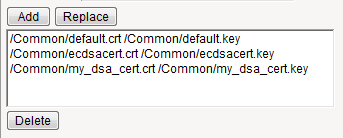

Unofficial - F5 Certification Exam Prep Material > F5 301A - BIG-IP LTM Specialist: Architect, Set-Up & Deploy Study Guide 11/01/19 Source | Edit on
F5 301a Introduction¶
F5 - 301a Local Traffic Manager Specialist Exam
The F5 BIG-IP Local Traffic Manager (LTM) increases an application’s operational efficiency and ensures peak network performance by providing a flexible, high-performance application delivery system. With its application-centric perspective, LTM optimizes your network infrastructure to deliver availability, security, and performance for critical business applications. Although the Exam Blueprint is not written in a structure that presents topics in an educational order, it does provide all of the necessary building blocks. The Certified LTM Training classes from F5 will help with many of the scenario-based topics on the test. An LTM Specialist must be proficient with all aspects Architecture, Setup and Deployment of the LTM within a network.
Traffic Management Shell
Although it is not mentioned in the blueprint as a requirement, a candidate should not focus only on the GUI interface for management of the LTM platform. Some test questions will refer to the command line interface (CLI) TMSH commands. You should take time to understand where in the CLI that common commands are issued so you can not only correctly answer the questions presented on the exam but also have enough knowledge of the CLI structure to eliminate bad commands from your question’s answer choices.
Try building your training lab environment from command line to gain CLI proficiency.
Section 1 - Architect and Deply Applications¶
Objective - 1.01 - Given an expected traffic volume, determine the appropriate SNAT configuration¶
1.01 – Explain when SNAT is required
K7820: Overview of SNAT features
What is SNAT and when is it required?
A Secure Network Address Translation (SNAT) is a configuration object that maps the source client IP address in a request to a translation address defined on the BIG-IP device. When the BIG-IP system receives a request from a client, and if the client IP address in the request is defined in the origin address list for the SNAT, the BIG-IP system translates the source IP address of the incoming packet to the SNAT address.
A SNAT can be used by itself to pass traffic that is not destined for a virtual server. For example, you can use a SNAT object to pass certain traffic (such as DNS requests) from an internal network to an external network where your DNS server resides. A SNAT can also be used in conjunction with a virtual server to translate the source IP address of an incoming packet (with no SNAT configured, no source address translation takes place, and destination address translation takes place as separately configured in the Virtual Server properties). You can also use a SNAT to ensure that response traffic is returned through the BIG-IP system without requiring other outbound non-load balanced traffic to also route through the BIG-IP system, and without requiring any changes in the router or server’s configuration. SNAT is also a critical component in one-armed configurations, preventing the server from responding directly to the client.
Port exhaustion or collisions may occur under heavy usage or special client traffic patterns. As a result, connections that cannot be translated due to lack of available ports on a given translation address may be dropped.
When a SNAT is configured on the BIG-IP system (either by itself or in conjunction with a virtual server), the source address of each connection is translated to a configured SNAT address, and the source port is mapped to a port currently available for that address. By default, the BIG-IP system attempts to preserve the source port, but if the port is already in use on the selected translation address, the system also translates the source port.
Each SNAT address, like any IP address, has only 65535 ports available. This is a limit of the TCP and User Datagram Protocol (UDP) protocols, since they use a 16-bit unsigned integer (thus ranging from 0 to 65535) to specify the source and destination ports. However, each SNAT address can potentially have to process more than 65535 concurrent connections, as long as each socket pair is unique. A socket pair is defined by a 4-tuple structure consisting of the following elements:
- Source IP address
- Source port
- Destination IP address
- Destination port
For example, a given SNAT address can continue to use the same source port as long as the remote socket is unique, thus allowing the SNAT address to process more than 65535 concurrent connections.
For example:
SNAT address and port Remote socket
- 10.1.1.1:1234 -------------> 10.1.1.200:80
- 10.1.1.1:1234 -------------> 10.1.1.201:80
- 10.1.1.1:1234 -------------> 10.1.1.200:8080
- 10.1.1.1:1234 -------------> 10.1.1.201:8080
Note: When SNAT is used in conjunction with a virtual server that load balances connections to a pool; the remote socket is the IP address and port of the chosen pool member. Therefore, assuming a certain SNAT address is configured on only one virtual server, the SNAT address is able to process approximately 65535 concurrent connections for each pool member in the pool (each unique remote socket).
While the uniqueness of remote sockets depends entirely on your specific configuration and traffic, for simplicity you should think of 65535 concurrent connections as the maximum capacity for any given SNAT address. If you think more than 65535 connections may require translation, you should configure more SNAT addresses (for example, using a SNAT pool).
1.01 – Describe the benefit of using SNAT pools
K7820: Overview of SNAT features
SNAT Pools
A SNAT pool represents a logical group of translation addresses that you configure on the BIG-IP system.
When a single IP address is used to SNAT traffic, it has a limit of 65535 ports that can be used for port mapping on the IP address. SNAT connections can fail if a large number of client requests are traversing a SNAT, which is using a single IP address. This will show up in the event logs on the BIG-IP as Port Exhaustion errors.
To mitigate port exhaustion, create SNAT pools or use SNAT Automap (with an appropriate number of self-IP addresses on the VLAN) to support the expected level of concurrent connections. Configuring a SNAT pool as the translation allows the SNAT function to map client connections to more than one IP address from the SNAT pool, thus increasing the total available ports likewise the supported client connections.
You can build a SNAT pool for a SNAT to use as the translation addresses and the BIG-IP will use an IP addresses from the pool in a Least Connections fashion.
Since the SNAT function is intelligent enough to know what address from the pool can be used for the address translation in each egress scenario; a SNAT pool can contain addresses from more than one egress network. This will allow you to build less SNAT pools by allowing you to mix the egress network addresses in one pool if you desire.
1.01 – Describe the difference of SNAT object types
K7820: Overview of SNAT features
Types of SNATs
Standard SNATs and intelligent SNATs are illustrated in the following sections:
Standard SNATs
The following three examples illustrate three types of standard SNATs:
A SNAT in which you specify a specific translation address
One way to create a SNAT is to directly map one or more original IP address to a specific translation address that you choose. For the SNAT origin address, you can specify host addresses, network addresses, or a wildcard that matches all addresses. For example, the following SNAT configuration translates the address of connections that originate from the address 10.10.10.1 to the translation address 172.16.0.1:
ltm snat /Common/test\_snat {
origins {
10.10.10.1/32 { }
}
translation /Common/172.16.0.1
}
Automap SNAT
Of the available SNAT options, SNAT automap is often preferred because it is simple to configure and maintain, and helps conserve IP addresses by using the BIG-IP system’s existing self IP addresses.
When the BIG-IP system processes connections from the origin IP addresses matching a SNAT automap definition, it chooses a translation address from the available self IP addresses. Floating self IP addresses on the egress Virtual Local Area Network (VLAN) are preferred to support seamless failover. If multiple floating self IP addresses are configured on the VLAN, the BIG-IP system translates the address of client connections by alternating through a pool of all floating self IPs on the VLAN.
Note: The SNAT automap feature may not use the intended translation address if a floating self IP is not available on the egress VLAN, or the floating self IP address was originally a static self IP address. For more information, refer to K7336: The SNAT Automap and self IP address selection.
For example, the following SNAT configuration translates the address of connections that originate from the address 10.10.10.1 to one of the system’s self IP addresses:
ltm snat /Common/test\_snat {
automap
origins {
10.10.10.1/32 { }
}
}
SNAT pools
A SNAT pool represents a pool of translation addresses that you configure on the BIG-IP system. The original IP address is then mapped to the entire translation pool, called a SNAT pool. For example, the following SNAT pool configuration contains the translation addresses 172.16.0.1 and 172.16.0.2:
ltm snatpool /Common/my\_snatpool {
members {
/Common/172.16.0.1
/Common/172.16.0.2
}
}
After you create the SNAT pool, you must associate it with a SNAT object. For example, the following SNAT configuration translates the address of connections that originate from the address 10.10.10.1 to one of the IP addresses in the SNAT pool:
ltm snat /Common/test\_snatpool {
origins {
10.10.10.1/32 { }
}
snatpool /Common/my\_snatpool
}
Important: When using a SNAT pool with IP addresses from the egress VLAN (the VLAN for which the packet exits in the BIG-IP system) and non-egress VLAN networks, the egress VLAN network address is given higher priority. For example, egress VLAN external has a self IP of 172.16.0.254/24, and SNAT pool member addresses of 172.16.0.1/24 and 10.1.1.1/24. The BIG-IP system prefers the egress VLAN SNAT pool member address 172.16.0.1, and will continue to use the same address until it becomes unavailable.
Note: The BIG-IP system load balances SNAT pool connections between members using the least connections algorithm.
Intelligent SNATs
An intelligent SNAT is the mapping of one or more original client IP address to a translation address. However, you implement this type of SNAT mapping within an iRule. An intelligent SNAT allows the BIG-IP system to base its selection of a translation address on any piece of packet data that you specify. This piece of data could be the original client IP address, or it could be another piece of data in the packet, such as a server port or an HTTP cookie.
To configure an intelligent SNAT, you must complete the following tasks:
- Determine the type of packet data that the BIG-IP system uses as a basis for selecting a translation address, such as the server port.
- Create the SNAT or SNAT pools that the BIG-IP system uses to select a translation address.
- Assign the iRule as a resource to the virtual server.
The following two examples illustrate mapping original client IP addresses to a translation address using an iRule:
Example 1
If you want the BIG-IP system to base its selection of a translation address on the destination port, you would first create a data group that contains the destination ports, and then create the iRule that applies the SNAT translation address to connections using a port specified in the data group. After you have created the data group and SNAT, you must assign the iRule as a resource to the virtual server. The following TMOS Shell (tmsh) command creates a data group called Ports, containing ports 80, 81, and 8080:
tmsh create /ltm data-group Ports type string records add { 80 81 8080 }
After you create the data group, create the iRule that applies the SNAT translation address to connections using ports from the Ports data group. The following iRule examples apply the SNAT translation address of 172.16.0.1 to connections using ports from the Ports data group:
when CLIENT\_ACCEPTED {
if { [class match [TCP::local\_port] equals Ports]} {
snat 172.16.0.1
}
}
Example 2
If you want the BIG-IP system to base its selection of a translation address on the client/source IP address and the destination port, and then forward unchanged traffic that does not match this criteria, you would first create two data groups that contain the client/source IP addresses and destination ports respectively, and then create the iRule that would apply the SNAT translation address.
The following tmsh command creates a data group called Hosts, which contains IP addresses 10.10.10.1, 10.10.10.2, and 10.10.10.3:
tmsh create /ltm data-group Hosts type ip records add { 10.10.10.1 10.10.10.2 10.10.10.3 }
The following tmsh command creates a data group called Ports, which contains ports 80 and 8080:
tmsh create /ltm data-group Ports type string records add { 80 8080 }
After you create the data groups, create the iRule that applies the SNAT translation address to connections using IP addresses and ports from the Hosts and Ports data groups, and forward all other connections. The following iRule example apply the SNAT translation address of 172.16.0.1 to connections using IP addresses and ports fro m the Hosts and Ports data groups, and forward all other connections:
when CLIENT\_ACCEPTED {
if { [class match [IP::client\_addr] equals Hosts]} {
if { [class match [TCP::local\_port] equals Ports]} {
snat 172.16.0.1
} else {
forward
}
}
}
Objective - 1.02 - Given a scenario, determine the minimum profiles for an application¶
1.02 - (Supplemental Example) Given a scenario, determine the minimum profiles for an application
https://support.f5.com/kb/en-us/products/big-ip_ltm/manuals/product/ltm-concepts-11-5-0/6.html
This topic is focused on assigning profiles to a virtual server configuration for the functionality of application using that virtual server. Understanding how why profiles are necessary and what requirements the applications have for the processing of the application traffic is the key to this topic. Experience with configuring virtual servers will give the candidate the ability to answer the questions on this topic.
Profiles are a configuration tool that you can use to affect the behavior of certain types of network traffic. More specifically, a profile is an object that contains settings with values, for controlling the behavior of a particular type of network traffic, such as HTTP connections. Profiles also provide a way for you to enable connection and session persistence, and to manage client application authentication.
By default, Local Traffic Manager provides you with a set of profiles that you can use as is. These default profiles contain various settings with default values that define the behavior of different types of traffic. If you want to change those values to better suit the needs of your network environment, you can create a custom profile. A custom profile is a profile derived from a default profile and contains values that you specify.
You can use profiles in the following ways:
You can use the default profiles, which means that you do not need to actively configure any profile settings. Local Traffic Manager uses them to automatically direct the corresponding traffic types according to the values specified in those profiles.
You can create a custom profile, using the default profile as the parent profile, modifying some or all of the values defined in that profile.
You can create a custom profile to use as a parent profile for other custom profiles.
After configuring a profile, you associate the profile with a virtual server. The virtual server then processes traffic according to the values specified in the profile. Using profiles enhances your control over managing network traffic, and makes traffic-management tasks easier and more efficient.
You can associate multiple profiles with a single virtual server. For example, you can associate a TCP profile, an SSL profile, and an HTTP profile with the same virtual server.
At a minimum, a virtual server must reference a profile, and that profile must be associated with a UDP, FastL4, Fast HTTP, or TCP profile type. Thus, if you have not associated a profile with the virtual server, Local Traffic Manager adds a udp, fastl4, fasthttp, or tcp default profile to the profile list.
The default profile that Local Traffic Manager chooses depends on the configuration of the virtual server’s protocol setting. For example, if the protocol setting is set to UDP, Local Traffic Manager adds the udp profile to its profile list.
1.02 - Explain security options available for the application
Virtual Server Security
A virtual server is essentially a listener that will be taking in and processing traffic on the BIG-IP platform. Some of the biggest security risks when configuring a virtual server are how it is listening, where it is listening and who can get to it. If you are configuring virtual server and not setting the necessary settings to restrict these areas of concern you are opening yourself up to security risks.
How Is the Virtual Server Listening?
The broader you set a virtual server to listen the greater the risk of unintended inbound traffic. An application based virtual server should typically be configured to listen on the default port for the application. For example, if you are configuring a virtual server for a new HTTP based website you would listen on port 80. If you listen on all ports (*), the virtual server will take in traffic destine for the virtual server on all 65535 ports of the IP address. And if the pool members for the virtual server are also listening on all ports (*), it will send traffic to the servers on the port it arrived on the virtual server.
If you need to listen on multiple ports for the same IP address you can approach this in two different ways. You can build a virtual server for each necessary port using the same IP address or you can build one virtual server on all ports and use an iRule to restrict the allowed inbound connections to your list of ports.
Where is the Virtual Server Listening?
When you configure a virtual server, you tell the BIG-IP where you want it to listen for traffic destined for the IP address of the virtual server. This virtual server setting is the VLAN and Tunnel Traffic setting. By default, the setting is set to All VLANs and Tunnels. Which means the BIG-IP will listen on all VLANs. You are probably thinking, ARP is only going to happen on the local subnet’s VLAN, which is true. So, what can it possibly mean to listen on all VLANs? When this setting is set to all VLANs it means that if traffic comes to BIG-IP destined for the virtual server address from a VLAN that is not the VLAN of the virtual server IP address, it will still take the traffic in on VLAN interface that it arrived on. BIG-IP is a default deny device but in setting the setting to All VLANS and Tunnels you have told the system to listen on all VLANs for traffic to the virtual server and allow it in.
Packet Filters
Packet filters enhance network security by specifying whether a BIG-IP system interface should accept or reject certain packets based on criteria that you specify. Packet filters enforce an access policy on incoming traffic. They apply to incoming traffic only.
You implement packet filtering by creating packet filter rules, using the BIG-IP Configuration utility. The primary purpose of a packet filter rule is to define the criteria that you want the BIG-IP system to use when filtering packets. Examples of criteria that you can specify in a packet filter rule are:
- The source IP address of a packet
- The destination IP address of a packet
- The destination port of a packet
You specify the criteria for applying packet filter rules within an expression. When creating a packet filter rule, you can instruct the BIG-IP system to build an expression for you, in which case you need only choose the criteria from predefined lists, or you can write your own expression text, using the syntax of the tcpdump utility. For more information on the tcpdump utility, see the online man page for the tcpdump command.
You can also configure global packet filtering that applies to all packet filter rules that you create. The hyperlink of this section will describe how to use the Configuration utility to set global packet filtering options, as well as create and manage individual packet filters rules.
iRules
You can use iRules to restrict traffic in almost any way you can think of. You can set an iRule to keep connections from happening when coming from a certain IP address range or to a certain URI path in the HTTP request.
1.02 - Explain how to use LTM as a service proxy
Since the F5 BIG-IP platform is designed as a full-proxy architecture the LTM can act as a proxy for any service level connection.
You define the virtual server as a Standard virtual server that is listening on an IP address and port combination, which represents the application to the client. The virtual server should be configured with an appropriate layer-4 profile, any optional layer-7 protocol profiles you need and a pool for a resource. The LTM will then broker separate layer-4 connections for the client and server sides. The server side connections will be translated from the listening IP address and port combination of the virtual server to the IP address and port combination of the pool member that the connection will be sent to via the load-balancing algorithm of the pool.
The return traffic must flow through the BIG-IP to be correctly rewritten as it passes back to the client. The return traffic will be rewritten from the IP address and port combination of the pool member that received the inbound connection to the IP address and port combination of the virtual server that the client connected to when the connection was established.
K8082: Overview of TCP connection setup for BIG-IP LTM virtual server types
Standard virtual server
The BIG-IP LTM TMOS operating system implements a full proxy architecture for virtual servers configured with a TCP profile. By assigning a custom TCP profile to the virtual server, you can configure the BIG-IP LTM system to maintain compatibility to disparate server operating systems in the data center. At the same time, the BIG-IP LTM system can leverage its TCP/IP stack on the client side of the connection to provide independent and optimized TCP connections to client systems.
In a full proxy architecture, the BIG-IP LTM system appears as a TCP peer to both the client and the server by associating two independent TCP connections with the end-to-end session. Although certain client information, such as the source IP address or source TCP port, may be re-used on the server side of the connection, the BIG-IP LTM system manages the two sessions independently, making itself transparent to the client and server.
The Standard virtual server requires a TCP or UDP profile, and may optionally be configured with HTTP, FTP, or SSL profiles if Layer 7 or SSL processing is required.
The TCP connection setup behavior for a Standard virtual server varies depending on whether a TCP profile or a TCP and Layer 7 profile, such as HTTP, is associated with the virtual server.
Standard virtual server with a TCP profile
The TCP connection setup behavior for a Standard virtual server operates as follows: the three-way TCP handshake occurs on the client side of the connection before the BIG-IP LTM system initiates the TCP handshake on the server side of the connection.
A Standard virtual server processes connections using the full proxy architecture. The following TCP flow diagram illustrates the TCP handshake for a Standard virtual server with a TCP profile:
Standard virtual server with Layer 7 functionality
If a Standard virtual server is configured with Layer 7 functionality, such as an HTTP profile, the client must send at least one data packet before the server-side connection can be initiated by the BIG-IP LTM system.
Note: The BIG-IP LTM system may initiate the server-side connection prior to the first data packet for certain Layer 7 applications, such as FTP, in which case the user waits for a greeting banner before sending any data.
The TCP connection setup behavior for a Standard virtual server with Layer 7 functionality operates as follows: the three-way TCP handshake and initial data packet are processed on the client side of the connection before the BIG-IP LTM system initiates the TCP handshake on the server side of the connection.
A Standard virtual server with Layer 7 functionality processes connections using the full proxy architecture. The following TCP flow diagram illustrates the TCP handshake for a Standard virtual server with Layer 7 functionality:
1.02 - Describe how a given service is deployed on an LTM
K4707: Choosing appropriate profiles for HTTP traffic
Processing HTTP traffic
The BIG-IP system allows you to process HTTP traffic using various profiles, including TCP+HTTP, FastHTTP, and FastL4. Each profile, or combination of profiles, offers distinct advantages, limitations, and features.
F5 recommends that you assess the needs of each HTTP virtual server individually, using the following information, to determine which profile, or profile combination, best meets the requirements for each virtual server.
Important: The HTTP profile will work in all cases; however, the HTTP profile places BIG-IP in full Layer 7 inspection mode, which may be unnecessary when used on simple load balancing virtual servers. Thus, you should consider the other profile options provided in instances where the full Layer 7 engine is not necessary for a particular virtual server.
TCP+HTTP
Profiles: TCP+HTTP
Advantage: The HTTP profile can take full advantage of all of BIG-IP system’s Layers 4 - 7 HTTP/HTTPS features.
When to use: The HTTP profile is used when any of the following features are required:
- IPv6 support
- TCPexpress and content spooling features reduce server load
- Full OneConnect functionality (including HTTP 1.0 transformations)
- Layer 7 persistence (cookie, hash, universal, and iRule)
- Full HTTP iRules logic
- Cache and Web Acceleration features
- HTTP Compression
- HTTP pipelining
- Virtual Server Authentication
- Redirect Rewriting
- SPDY protocol support (11.3.0 and later)
Limitations
- More CPU-intensive
- Memory utilization:
- Cache / Web Acceleration - The caching / web acceleration features provision user-defined memory for cache content for each virtual server that uses the given HTTP and Cache profiles.
- Compression - Larger buffer sizes can increase memory utilization when compressing large objects.
- TCP offloading/content spooling - This can increase memory utilization in cases where either the client-side or the server-side of the connection is slower than the other. The BIG-IP system holds the data in the buffer until the slower side of the connection is able to retrieve it.
HTTP/2
Note: The HTTP/2 profile requires that you apply a TCP, HTTP, and client-side SSL profile to the virtual server.
Advantage: The HTTP/2 profile allows you to take advantage of the improvements provided by the Hypertext Transfer Protocol Version 2 specification (RFC7540 and RFC7541).
When to use: The HTTP/2 profile allows the BIG-IP system to serve as a gateway for HTTP/2 traffic. By multiplexing streams and compressing headers, the perceived latency of requests and responses is reduced and the overall efficiency of the network is improved. The HTTP/2 profile can be used to provide the following:
- Multiplexed request/response streams with flow control for improved network utilization
- Automatic header compression
- Binary instead of textual message framing for efficient message processing
- Support for SPDY, HTTP/1.1, and HTTP/2 protocol selection
- Proactive server response push to client
- iRules logic for HTTP/2
Limitations
- Header compression consumes CPU and memory resources
- No support for source address persistence
- Not compatible with NTLM protocols.
- Not compatible with SSL profile (Client) renegotiation.
FastHTTP
Profile: FastHTTP
Advantage: Faster than HTTP profile
When to use: FastHTTP profile is recommended when it is not necessary to use persistence and or maintain source IP addresses. FastHTTP also adds a subset of OneConnect features to reduce the number of connections opened to the backend HTTP servers. The FastHTTP profile requires that the clients’ source addresses are translated. If an explicit SNAT or SNAT pool is not specified, the appropriate self IP address is used.
Note: Typically, server efficiency increases as the number of SNAT addresses that are available to the virtual server increases. At the same time, the increase in SNAT addresses that are available to the virtual server also decreases the likelihood that the virtual server will reach the point of ephemeral port exhaustion (65535 open connections per SNAT address).
Limitations
- Requires client source address translation
- Not compatible with persistence until version 10.0.0
- Limited iRules support L4 and are limited to a subset of HTTP header operations, and pool/pool member selection
- No compression
- No virtual server authentication
- No support for HTTP pipelining
- No TCP optimizations
- No IPv6 support
Note: FastHTTP is optimized for ideal traffic conditions, but may not be an appropriate profile to use when network conditions are less than optimal. For more information about the FastHTTP profile, refer to SOL8024: Overview of the FastHTTP profile.
FastL4
Profile: FastL4
Advantage: Accelerates packet processing
When to use: FastL4 is limited in functionality to socket level decisions (for example, src_ip:port dst_ip:port). Thus, you can use FastL4 only when socket level information for each connection is required for the virtual server.
Limitations
- No HTTP optimizations
- No TCP optimizations for server offloading
- SNAT/SNAT pools demote PVA acceleration setting level to Assisted
- iRules limited to L4 events, such as CLIENT_ACCEPTED and SERVER_CONNECTED
- No OneConnect
- Limited persistence options:
- Source address
- Destination address
- Universal
- Hash (BIG-IP 9.x only)
- No compression
- No Virtual Server Authentication
- No support for HTTP pipelining
Objective - 1.03 - Given an application configuration, determine which functions can be offloaded to the LTM device¶
1.03 – Explain how to offload HTTP servers for SSL, compression and caching
Offloading
One of the most prominent advantages to having a BIG-IP platform in your network is that it can offload functions from the server environment to improve their performance. SSL termination, HTTP compression and RAM Caching are a few of the primary functions
Each of these optimizations are configurations that are completed in profiles assigned to the virtual server.
SSL Offload
When you want the BIG-IP system to process application traffic over SSL, you can configure the system to perform the SSL handshake that destination servers normally perform. This ability for the BIG-IP system to offload SSL processing from a destination server is an important feature of the BIG-IP system.
The most common way to configure the BIG-IP system is to create a Client SSL profile, which makes it possible for the BIG-IP system to decrypt client requests before sending them on to a server, and encrypt server responses before sending them back to the client.
Within a Client SSL profile specifically, you can specify multiple certificate/key pairs, one per key type. This enables the system to accept all types of cipher suites that a client might support as part of creating a secure connection. The system then decrypts the client data, manipulates any headers or payload according to the way that you configured the Client SSL profile, and by default, sends the request in clear text to the target server for processing.
For those sites that require enhanced security on their internal network, you can configure a Server SSL profile. With a Server SSL profile, the BIG-IP system re-encrypts the request before sending it to the destination server. When the server returns an encrypted response, the BIG-IP system decrypts and then re-encrypts the response, before sending the response back to the client.
HTTP compression
An optional feature of the BIG-IP system is the system’s ability to off-load HTTP compression tasks from the target server. All of the tasks that you need to configure HTTP compression, as well as the compression software itself, are centralized on the BIG-IP system. The primary way to enable HTTP compression is by configuring an HTTP Compression type of profile and then assigning the profile to a virtual server. This causes the system to compress HTTP content for any responses matching the values that you specify in the Request-URI or Content-Type settings of the HTTP Compression profile.
Configuration
You should be familiar with how the configuration of HTTP Compression looks in the CLI Configuration as well as in the GUI.
To configure HTTP data compression, you need to create an HTTP compression type of profile, as well as a virtual server.
Creating a customized HTTP compression profile
If you need to adjust the compression settings to optimize compression for your environment, you can modify a custom HTTP compression profile.
- On the Main tab, click Acceleration > Profiles > HTTP Compression. The HTTP Compression profile list screen opens.
- Click Create. The New HTTP Compression profile screen opens.
- In the Name field, type a unique name for the profile.
- From the Parent Profile list, select one of the following profiles:
- httpcompression.
- wan-optimized-compression.
- Select the Custom check box.
- Modify the settings, as required.
- Click Finished.
The modified HTTP compression profile is available in the HTTP Compression list screen.
Creating a virtual server for HTTP compression
You can create a virtual server that uses an HTTP profile with an HTTP compression profile to compress HTTP responses.
- On the Main tab, click Local Traffic > Virtual Servers. The Virtual Server List screen displays a list of existing virtual servers.
- Click the Create button. The New Virtual Server screen opens.
- In the Name field, type a unique name for the virtual server.
- Specify the Destination setting, using the Address field; type the IP address you want to use for the virtual server. The IP address you type must be available and not in the loopback network.
- In the Service Port field, type 80, or select HTTP from the list.
- Select http in the HTTP Profile list.
- From the HTTP Compression Profile list, select one of the following
profiles:
- httpcompression
- wan-optimized-compression
- A customized profile
- In the Resources area of the screen, from the Default Pool list, select a pool name.
- Click Finished.
The virtual server with an HTTP profile configured with an HTTP compression profile appears in the Virtual Server list.
After you have created a custom HTTP Compression profile and a virtual server, you can test the configuration by attempting to pass HTTP traffic through the virtual server. Check to see that the BIG-IP system includes and excludes the responses that you specified in the custom profile, and that the system compresses the data as specified.
https://support.f5.com/kb/en-us/products/big-ip_ltm/manuals/product/f5-tmos-operations-guide.pdf
BIG-IP Cache
The BIG-IP Cache Setting feature, formerly known as RAM Cache, uses the information from the Vary header to cache responses from the origin web server (OWS). OWS can include information within the Vary header to determine which resource the server returns in its response.
For example, if a page is optimized for a particular web browser, OWS response may return the Vary: User-Agent HTTP header. The proxy server then uses this information to determine whether to return a cached copy of the response to subsequent requests, or to query the OWS for the resource again (a subsequent client request containing a different User-Agent value forces the proxy to query the OWS for the resource again).
An HTTP cache is a collection of HTTP objects stored in the BIG-IP system memory which subsequent connections can reuse to reduce traffic load on the origin web servers. The goal of caching is to reduce the need to send frequent requests for the same object, and eliminate the need to send full responses in many cases. You can enable HTTP caching on the BIG-IP system by associating a Web Acceleration profile with a virtual server.
Cacheable content
The BIG-IP cache feature complies with the cache specifications described in RFC 2616. You can configure the BIG-IP system to cache the following content types:
- 200, 203, 206, 300, 301, and 410 HTTP responses.
- Responses to HTTP GET requests.
- Other HTTP methods for uniform resource identifiers (URIs) specified for inclusion in cached content, or specified in an iRule.
- Content based on the User-Agent and Accept-Encoding values. The cache feature holds different content for Vary headers.
The default cache configuration caches only responses to HTTP GET requests. However, you can configure the Web Acceleration pro le to cache other requests, including non-HTTP requests. To do this, you can specify a URI in the URI Include or Pin List within an HTTP pro le, or write an iRule.
Non-cacheable content
The cache feature does not cache the following items:
- Private data specified by cache control headers.
- Action-oriented HTTP methods such as HEAD, PUT, DELETE, TRACE, and CONNECT.
- Set-Cookie headers sent by the origin web server.
BIG-IP DNS cache feature
You can configure a transparent cache on the BIG-IP system to use external DNS resolvers to resolve queries and then cache the responses from the resolvers. The next time the system receives a query for a response that exists in the cache, the system immediately returns the response from the cache. The transparent cache contains messages and resource records.
A transparent cache in the BIG-IP system consolidates content that would otherwise be cached across multiple external resolvers. When a consolidated cache is in front of external resolvers (each with their own cache), it can produce a much higher cache hit percentage.
BIG-IP AAM optimization cache feature
BIG-IP AAM optimization cache is a self-managing feature. A small amount of TMM memory is used together with a disk-based datastore/metastore database. The two ways to view BIG-IP AAM caching behavior are by using X-WA-Info debug headers and through the dashboard in the Configuration utility.
1.03 – Explain how to configure LTM to handle SSL offload
SSL Offload
When you want the BIG-IP system to process application traffic over SSL, you can configure the system to perform the SSL handshake that destination servers normally perform. This ability for the BIG-IP system to offload SSL processing from a destination server is an important feature of the BIG-IP system.
The most common way to configure the BIG-IP system is to create a Client SSL profile, which makes it possible for the BIG-IP system to decrypt client requests before sending them on to a server, and encrypt server responses before sending them back to the client.
Within a Client SSL profile specifically, you can specify multiple certificate/key pairs, one per key type. This enables the system to accept all types of cipher suites that a client might support as part of creating a secure connection. The system then decrypts the client data, manipulates any headers or payload according to the way that you configured the Client SSL profile, and by default, sends the request in clear text to the target server for processing.
For those sites that require enhanced security on their internal network, you can configure a Server SSL profile. With a Server SSL profile, the BIG-IP system re-encrypts the request before sending it to the destination server. When the server returns an encrypted response, the BIG-IP system decrypts and then re-encrypts the response, before sending the response back to the client.
Creating a custom Client SSL profile
You create a custom Client SSL profile when you want the BIG-IP system to terminate client-side SSL traffic for the purpose of decrypting client-side ingress traffic and encrypting client-side egress traffic. By terminating client-side SSL traffic, the BIG-IP system offloads these decryption/encryption functions from the destination server. When you perform this task, you can specify multiple certificate key chains, one for each key type (RSA, DSA, and ECDSA). This allows the BIG-IP system to negotiate secure client connections using different cipher suites based on the client’s preference.
Note: At a minimum, you must specify a certificate key chain that includes an RSA key pair. Specifying certificate key chains for DSA and ECDSA key pairs is optional, although highly recommended.
On the Main tab, click Local Traffic > Profiles > SSL > Client. The Client profile list screen opens.
Click Create. The New Client SSL Profile screen opens.
In the Name field, type a unique name for the profile.
From the Parent Profile list, select clientssl.
Select the Custom check box. The settings become available for change.
Using the Certificate Key Chain setting, specify one or more certificate key chains:
From the Certificate list, select a certificate name. This is the name of a certificate that you installed on the BIG-IP system. If you have not generated a certificate request nor installed a certificate on the BIG-IP system, you can specify the name of an existing certificate, default.
From the Key list, select the name of the key associated with the certificate specified in the previous step. This is the name of a key that you installed on the BIG-IP system. If you have not installed a key on the BIG-IP system, you can specify the name of an existing key, default.
From the Chain list, select the chain that you want to include in the certificate key chain. A certificate chain can contain either a series of public key certificates in Privacy Enhanced Mail (PEM) format or a series of one or more PEM files. A certificate chain can contain certificates for Intermediate certificate Authorities (CAs).
Note: The default self-signed certificate and the default CA bundle certificate are not appropriate for use as a certificate chain.
For the Passphrase field, type a string that enables access to SSL certificate/key pairs that are stored on the BIG-IP system with password protection. This setting is optional. For added security, the BIG-IP system automatically encrypts the pass phrase itself. This pass phrase encryption process is invisible to BIG-IP system administrative users.
Click Add and repeat the process for all certificate key chains that you want to specify.
- 
Sample configuration with three key types specified
The result is that all specified key chains appear in the box.
If you want to use a cipher suite other than DEFAULT:
- From the Configuration list, select Advanced.
- For the Ciphers setting, type the name of a cipher. You can specify a particular string to indicate the ciphers that you want the BIG-IP system to use for SSL negotiation, or you can specify ciphers that you do not want the system to use. Examples of cipher values that you can specify are ECDHE and DEFAULT:!ECDHE.
Configure all other profile settings as needed.
Click Finished.
After performing this task, you can see the custom Client SSL profile in the list of Client SSL profiles on the system.
You must also assign the profile to a virtual server.
Creating a custom Server SSL profile
With an Server SSL profile, the BIG-IP system can perform decryption and encryption for server-side SSL traffic.
- On the Main tab, click Local Traffic > Profiles > SSL > Server. The SSL Server profile list screen opens.
- Click Create. The New Server SSL Profile screen opens.
- In the Name field, type a unique name for the profile.
- Select serverssl in the Parent Profile list.
- From the Configuration list, select Advanced.
- Select the Custom check box. The settings become available for change.
- From the Certificate list, select the name of an SSL certificate on the BIG-IP system.
- From the Key list, select the name of an SSL key on the BIG-IP system.
- In the Pass Phrase field, select a pass phrase that enables access to the certificate/key pair on the BIG-IP system.
- From the Chain list, select the name of an SSL chain on the BIG-IP system.
- If you want to use a cipher suite other than DEFAULT:
- From the Configuration list, select Advanced.
- For the Ciphers setting, type the name of a cipher. You can specify a particular string to indicate the ciphers that you want the BIG-IP system to use for SSL negotiation, or you can specify ciphers that you do not want the system to use. Examples of cipher values that you can specify are ECDHE and DEFAULT:!ECDHE.
- Select the Custom check box for Server Authentication.
- Modify the settings, as required.
- Click Finished.
After performing this task, you can see the custom Server SSL profile in the list of Server SSL profiles on the system.
You must also assign the profile to a virtual server.
Assigning SSL profiles to a virtual server
The final task in the process of implementing SSL profiles is to assign the SSL profile to a virtual server. If the relevant virtual server does not yet exist, you can assign the SSL profile (or profiles) to the virtual server when you create it.
- On the Main tab, click Local Traffic > Virtual Servers. The Virtual Server List screen opens.
- Click the name of a virtual server.
- From the Configuration list, select Advanced.
- For the SSL Profile (Client) setting, from the Available list, select the name of the Client SSL profile you previously created, and using the Move button, move the name to the Selected list.
- For the SSL Profile (Server) setting, from the Available list, select the name of the Server SSL profile you previously created, and using the Move button, move the name to the Selected list.
- Click Update to save the changes.
After you perform this task, you must assign the profile to a virtual server.
Objective - 1.04 - Given an iRule functionality, determine the profiles and configuration options necessary to implement the iRule¶
1.04 – Explain how to create an HTTP configuration to handle an HTTP server error
https://support.f5.com/kb/en-us/products/big-ip_ltm/manuals/product/ltm-concepts-11-5-0/7.html
Introduction to HTTP profiles
You can configure an HTTP profile to ensure that HTTP traffic management suits your specific needs. You can configure the profile settings either when you create a profile or after you create the profile by modifying the profile’s settings. For all profile settings, you can specify values where none exist, or modify any default values to suit your needs. The BIG-IP system also includes default profiles that you can use as is, if you do not want to create a custom profile.
Fallback host
Another feature that you can configure within an HTTP profile is HTTP redirection. HTTP redirection allows you to redirect HTTP traffic to another protocol identifier, host name, port number, or URI path.
Redirection to a fallback host occurs if all members of the targeted pool are unavailable, or if a selected pool member is unavailable. (The term unavailable refers to a member being disabled, marked as down, or having exceeded its connection limit.) When one or more pool members are unavailable, Local Traffic Manager can redirect the HTTP request to the fallback host, with the HTTP reply Status Code 302 Found.
Although HTTP redirection often occurs when the system generates an LB_FAILED iRule event, redirection can also occur without the occurrence of this event, such as when:
The selected node sends an RST after a TCP 3WHS has completed, but before the node has sent at least a full response header.
Local Traffic Manager finds the selected node to be unreachable while receiving the body portion of a request or a pipelined request.
When configuring Local Traffic Manager to redirect HTTP traffic to a fallback host, you can specify an IP address or a fully-qualified domain name (FQDN). The value that you specify becomes the value of the Location header that the server sends in the response. For example, you can specify a redirection as http://redirector.siterequest.com.
Fallback error codes
In addition to redirecting traffic when a target server becomes unavailable, you can also specify the HTTP error codes from server responses that should trigger a redirection to the fallback host. Typical error codes to specify are 500, 501, and 502.
https://devcentral.f5.com/wiki/iRules.HTTP_RESPONSE.ashx
How to handle an HTTP server error
Configuring a virtual server on your BIG-IP platform to load balance the HTTP based traffic for your webservers can be a very simple configuration. But you realize that periodically a server returns an error and the clients are receiving a 404 error, and they are leaving your site for a competitor’s site. You want to take an action on those errors to send your customers to a “Sorry Page”.
If this were an issue of all of your servers be off line you could simply apply a custom HTTP profile to the virtual server and set the Fallback Host field with the URL to your Sorry Page. However, this is happening intermittently on random server within the pool.
You could apply an iRule to your virtual server to send your customer to your Sorry Page when it sees the 404 error.
To do this, follow these steps:
- Setup your Sorry Server to run the Sorry Page.
2. Write the iRule to meet your needs. The following is an example:
when HTTP_RESPONSE {
if { [HTTP::status] contains "404"} {
HTTP::redirect "http://www.mysorryserver.com/appsorrypage.html"
}
}
- Apply an HTTP profile (the default http profile will work) to the virtual server so that the virtual server will process the HTTP traffic allowing the iRule to work correctly.
- Apply the new iRule to your virtual server.
You could do further rule work to track info about the server when the errors happen but it is not necessary to solve the problem.
1.04 - (Supplemental Example) Given an iRule functionality, determine the profiles and configuration options necessary to implement the iRule
https://support.f5.com/kb/en-us/products/big-ip_ltm/manuals/product/ltm-concepts-11-5-0/18.html
iRules and Profiles
An iRule is a powerful and flexible feature within BIG-IP Local Traffic Manager that you can use to manage your network traffic.
iRules are event-driven, which means that Local Traffic Manager triggers an iRule based on an event that you specify in the iRule. An event declaration is the specification of an event within an iRule that causes Local Traffic Manager to trigger that iRule whenever that event occurs. Examples of event declarations that can trigger an iRule are HTTP_REQUEST, which triggers an iRule whenever the system receives an HTTP request, and CLIENT_ACCCEPTED, which triggers an iRule when a client has established a connection.
The virtual server that the iRule is assigned to also has profiles configured. Profiles tell the virtual server to process traffic according to the values specified in the profile. Using profiles not only enhances your control over managing network traffic and makes traffic-management tasks easier and more efficient, but they give the virtual server the visibility into the traffic to know that an iRule event is happening and an action should be taken. For example, without the http profile assigned to the virtual server, the http request is not visible to the LTM and an iRule using the HTTP_REQUEST even to trigger could not run.
Objective - 1.05 - Given application requirements, determine the appropriate profile and persistence settings¶
1.05 - Explain how to create an HTTP configuration for mobile clients
https://support.f5.com/kb/en-us/products/big-ip_ltm/manuals/product/ltm-concepts-11-5-0/11.html
TCP Optimization
The BIG-IP system includes several pre-configured TCP profiles that you can use as is. In addition to the default TCP profile, the system includes TCP profiles that are pre-configured to optimize LAN and WAN traffic, as well as traffic for mobile users. You can use the pre-configured profiles as is, or you can create a custom profile based on a pre-configured profile and then adjust the values of the settings in the profiles to best suit your particular network environment.
About tcp-mobile-optimized profile settings
The tcp-mobile-optimized profile is a pre-configured profile type, for which the default values are set to give better performance to service providers’ 3G and 4G customers. Specific options in the pre-configured profile are set to optimize traffic for most mobile users, and you can tune these settings to fit your network. For files that are smaller than 1 MB, this profile is generally better than the mptcp-mobile-optimized profile. For a more conservative profile, you can start with the tcp-mobile-optimized profile, and adjust from there.
Note: Although the pre-configured settings produced the best results in the test lab, network conditions are extremely variable. For the best results, start with the default settings and then experiment to find out what works best in your network.
- This list provides guidance for relevant settings
- Set the Proxy Buffer Low to the Proxy Buffer High value minus 64 KB. If the Proxy Buffer High is set to less than 64K, set this value at 32K.
- The size of the Send Buffer ranges from 64K to 350K, depending on network characteristics. If you enable the Rate Pace setting, the send buffer can handle over 128K, because rate pacing eliminates some of the burstiness that would otherwise exist. On a network with higher packet loss, smaller buffer sizes perform better than larger. The number of loss recoveries indicates whether this setting should be tuned higher or lower. Higher loss recoveries reduce the goodput.
- Setting the Keep Alive Interval depends on your fast dormancy goals. The default setting of 1800 seconds allows the phone to enter low power mode while keeping the flow alive on intermediary devices. To prevent the device from entering an idle state, lower this value to under 30 seconds.
- The Congestion Control setting includes delay-based and hybrid algorithms, which might better address TCP performance issues better than fully loss-based congestion control algorithms in mobile environments. The Illinois algorithm is more aggressive, and can perform better in some situations, particularly when object sizes are small. When objects are greater than 1 MB, goodput might decrease with Illinois. In a high loss network, Illinois produces lower goodput and higher retransmissions. The Woodside algorithm relies on timestamps to determine transmission. If timestamps are not available in your network, avoid using Woodside.
- For 4G LTE networks, specify the Packet Loss Ignore Rate as 0. For 3G networks, specify 2500. When the Packet Loss Ignore Rate is specified as more than 0, the number of retransmitted bytes and receives SACKs might increase dramatically.
- For the Packet Loss Ignore Burst setting, specify within the range of 6-12, if the Packet Loss Ignore Rate is set to a value greater than 0. A higher Packet Loss Ignore Burst value increases the chance of unnecessary retransmissions.
- For the Initial Congestion Window Size setting, round trips can be reduced when you increase the initial congestion window from 0 to 10 or 16.
- Enabling the Rate Pace setting can result in improved goodput. It reduces loss recovery across all congestion algorithms, except Illinois. The aggressive nature of Illinois results in multiple loss recoveries, even with rate pacing enabled.
A tcp-mobile-optimized profile is similar to a TCP profile, except that the default values of certain settings vary, in order to optimize the system for mobile traffic.
You can use the tcp-mobile-optimized profile as is, or you can create another custom profile, specifying the tcp-mobile-optimized profile as the parent profile.
About mptcp-mobile-optimized profile settings
The mptcp-mobile-optimized profile is a pre-configured profile type for use in reverse proxy and enterprise environments for mobile applications that are front-ended by a BIG-IP system. This profile provides a more aggressive starting point than the tcp-mobile-optimized profile. It uses newer congestion control algorithms and a newer TCP stack, and is generally better for files that are larger than 1 MB. Specific options in the pre-configured profile are set to optimize traffic for most mobile users in this environment, and you can tune these settings to accommodate your network.
Note: Although the pre-configured settings produced the best results in the test lab, network conditions are extremely variable. For the best results, start with the default settings and then experiment to find out what works best in your network.
The enabled Multipath TCP (MPTCP) option provides more bandwidth and higher network utilization. It allows multiple client-side flows to connect to a single server-side flow. MPTCP automatically and quickly adjusts to congestion in the network, moving traffic away from congested paths and toward uncongested paths.
The Congestion Control setting includes delay-based and hybrid algorithms, which may better address TCP performance issues better than fully loss-based congestion control algorithms in mobile environments. Refer to the online help descriptions for assistance in selecting the setting that corresponds to your network conditions.
The enabled Rate Pace option mitigates bursty behavior in mobile networks and other configurations. It can be useful on high latency or high BDP (bandwidth-delay product) links, where packet drop is likely to be a result of buffer overflow rather than congestion.
An mptcp-mobile-optimized profile is similar to a TCP profile, except that the default values of certain settings vary, in order to optimize the system for mobile traffic.
You can use the mptcp-mobile-optimized profile as is, or you can create another custom profile, specifying the mptcp-mobile-optimized profile as the parent profile.
HTTP Traffic to optimized pool resources
Apart from optimizing traffic via protocol profile settings, you could also use an iRule to look at the user agent string in HTTP headers of the HTTP_REQUEST to determine the browser type to be mobile based and thus send their connection to a Pool resource that may be built or tuned for mobile based browsers.
1.05 - Explain how to create an HTTP configuration to optimize WAN connectivity
https://support.f5.com/kb/en-us/products/big-ip_ltm/manuals/product/ltm-concepts-11-5-0/11.html
Optimize WAN Connectivity
The tcp-wan-optimized profile is a pre-configured profile type. In cases where the BIG-IP system is load balancing traffic over a WAN link, you can enhance the performance of your wide-area TCP traffic by using the tcp-wan-optimized profile.
If the traffic profile is strictly WAN-based, and a standard virtual server with a TCP profile is required, you can configure your virtual server to use a tcp-wan-optimized profile to enhance WAN-based traffic. For example, in many cases, the client connects to the BIG-IP virtual server over a WAN link, which is generally slower than the connection between the BIG-IP system and the pool member servers. By configuring your virtual server to use the tcp-wan-optimized profile, the BIG-IP system can accept the data more quickly, allowing resources on the pool member servers to remain available. Also, use of this profile can increase the amount of data that the BIG-IP system buffers while waiting for a remote client to accept that data. Finally, you can increase network throughput by reducing the number of short TCP segments that the BIG-IP system sends on the network.
A tcp-wan-optimized profile is similar to a TCP profile, except that the default values of certain settings vary, in order to optimize the system for WAN-based traffic.
You can use the tcp-wan-optimized profile as is, or you can create another custom profile, specifying the tcp-wan-optimized profile as the parent profile.
1.05 - Determine when connection mirroring is required
https://support.f5.com/csp/article/K13478
Connection Mirroring
The connection and persistence mirroring feature allows you to configure a BIG-IP system to duplicate connection and persistence information to the standby unit of a redundant pair. This setting provides higher reliability but might affect system performance.
Redundant BIG-IP systems are not stateful by default. The BIG-IP device service clustering (DSC) architecture allows you to create a redundant system configuration for multiple BIG-IP devices on a network. System redundancy includes the ability to mirror connection and persistence information to a peer device to prevent interruption in service during failover. The Traffic Management Microkernel (TMM) manages the state mirroring mechanism, and connection and persistence data is synchronized to the standby unit with every packet or flow state update. The standby unit decapsulates the packets and adds them to the connection table.
BIG-IP 11.3.0 and earlier versions maintain only a single global connection and persistence mirroring channel. The active BIG-IP system in a high availability (HA) device group can only mirror to one specific standby BIG-IP system using the global mirror channel. The mirroring channel is created on TCP port 1028.
Beginning with version 11.4.0, the BIG-IP system maintains a separate mirroring channel for each traffic group. The active BIG-IP system in an HA device group dynamically establishes a mirroring connection to the standby with a status of Next Active for a given traffic group. The port range for each connection channel begins at TCP 1029 and increments by one for each new traffic group and channel created. For more information, refer to K14894: The BIG-IP system establishes a separate mirroring channel for each traffic group.
In BIG-IP 12.0.0 and later, you can configure the system to mirror Secure Sockets Layer (SSL) connections that are terminated by the BIG-IP system to peer device group members. For more information, refer to K17391: Configuring SSL connection mirroring.
You can use the Configuration utility or Traffic Management Shell (tmsh) to configure mirroring addresses, configure connection mirroring for virtual servers and Secure Network Address Translations (SNATs), and configure persistence mirroring. You can also view mirroring data on the active and standby BIG-IP systems using the tmsh utility.
When to Configure
Not all applications have to have their connection state know by the standby unit. Mainly applications that have long-term connections will need to have their connections mirrored.
For example, where long-term connections, such as FTP and Telnet, are good candidates for mirroring, mirroring short-term connections, such as HTTP and UDP, is not recommended as this causes a decrease in system performance. In addition, mirroring HTTP and UDP connections is typically not necessary, as those protocols allow for failure of individual requests without loss of the entire session.
1.05 - (Supplemental Example) Describe the persistence across pools and services (e.g., Match Across Services, Match Across vs Match Across Pools)
Match Across to Solve Deeper Persistence Issues
The Match Across options specify that, regardless of the type of persistence you are implementing, you can specify the criteria that the BIG-IP system uses to send all requests from a client to the same pool member. The criteria are based on the virtual servers that are hosting the client connection.
Match Across Services
The Match Across Services option is used in the following two configurations:
- Configurations that have multiple virtual servers with the same IP address but have different services specified.
- Configurations that have pool members sharing the same address but have different services specified.
Important: The Match Across Services option uses only the node IP address to find a persistence match in pools other than the one for which the persistence record was written. This deviation from the normal persistence matching behavior is required to accommodate the intended use cases for the feature to match even when the service port does not. Because of this lack of granularity, a pool containing multiple members with the same node address may result in inconsistent load balancing behavior. For this reason, F5 recommends that pools associated with virtual servers that are configured to use the Match Across Services option should not contain multiple members using the same node address.
A typical use of the Match Across Services feature is for combined HTTP/HTTPS support for the same site. Commerce sites are typically configured to allow customers to view and select merchandise using HTTP, but then the site switches to HTTPS when the customer begins the checkout process. The Match Across Services option is useful in this configuration as it allows the session information to be shared between the virtual servers and ensures that the client is directed to the same pool member.
The example, the configuration below shows that clients are load balanced to pool member 172.16.1.2:http, and an entry is created in the persistence table when they first connect to virtual server 192.168.0.10:http.
If the same clients connect to virtual server 192.168.0.10:https, the BIG-IP system uses the persistence session information that was established with the initial connection, and directs the request to pool member 172.16.1.2:https.
If the same clients connect to virtual server 192.168.0.20:http, the request is load balanced according to the method specified by the pool, and a new persistence session is entered in the persistence table for tracking.
Note: This behavior occurs because the third virtual server does not share the same address as the other two that are configured.
If the client connects to a different virtual server that does not utilize persistence, that connection will be load balanced according to the load balancing option specified by the pool for that virtual server.
The following configuration shows how a request is directed with the Match Across Services option enabled:
| Name | Value |
|---|---|
| HTTP Virtual Server | 192.168.0.10:http |
| Persistence Type | Source Address Affinity |
| Match Across Services | enabled |
| HTTP Pool Name | http_pool |
| HTTP Pool Members | 172.16.1.1:http, 172.16.1.2:http, 172.16.1.3:http |
| HTTP Virtual Server | 192.168.0.10:https |
| Persistence Type | Source Address Affinity |
| Match Across Services | enabled |
| HTTP Pool Name | https_pool |
| HTTP Pool Members | 172.16.1.1:https, 172.16.1.2:https, 172.16.1.3:https |
| HTTP Virtual Server | 192.168.0.20:http |
| Persistence Type | Source Address Affinity |
| Match Across Services | enabled |
| HTTP Pool Name | http2_pool |
| HTTP Pool Members | 172.16.1.1:8443, 172.16.1.2:8443, 172.16.1.3:8443 |
Match Across Virtual Servers
Match Across Virtual Servers is similar to Match Across Services, but it does not require the virtual servers to share the same IP address. This configuration allows clients to access different virtual servers, regardless of their IP address, and still access the same pool member.
The example configuration below shows that clients are load balanced to pool member 172.16.1.2:http, and an entry is created in the persistence table when they first connect to virtual server 192.168.0.10:http.
If the same clients connect to virtual server 192.168.0.10:https, the BIG-IP system uses the persistence session information that was established with the initial connection to virtual server 192.168.0.10:http, and directs the request to pool member 172.16.1.2:https.
If the same clients connect to virtual server 192.168.0.20:http, the BIG-IP uses the persistence session information that was established with the initial connection to virtual server 192.168.0.10:http and directs the request to pool member 172.16.1.2:8443.
Note: This behavior occurs because the pool members used by virtual server 192.168.0.20:http have the same node IP as those specified in the http_pool used by virtual server 192.168.0.10:http.
If the client connects to a different virtual server that does not use persistence, that connection will be load balanced according to the load balancing option specified by the pool for that virtual server.
The following configuration shows how a request is directed when the Match Across Virtual Servers option is enabled:
| Name | Value |
|---|---|
| HTTP Virtual Server | 192.168.0.10:http |
| Persistence Type | Source Address Affinity |
| Match Across Virtuals | enabled |
| HTTP Pool Name | http_pool |
| HTTP Pool Members | 172.16.1.1:http, 172.16.1.2:http, 172.16.1.3:http |
| HTTP Virtual Server | 192.168.0.10:https |
| Persistence Type | Source Address Affinity |
| Match Across Virtuals | enabled |
| HTTP Pool Name | https_pool |
| HTTP Pool Members | 172.16.1.1:https, 172.16.1.2:https, 172.16.1.3:https |
| HTTP Virtual Server | 192.168.0.20:http |
| Persistence Type | Source Address Affinity |
| Match Across Virtuals | enabled |
| HTTP Pool Name | http2_pool |
| HTTP Pool Members | 172.16.1.1:8443, 172.16.1.2:8443, 172.16.1.3:8443 |
Match Across Pools
The Match Across Pools option allows the BIG-IP system to use any pool that contains a persistence record for that specific client. You must proceed cautiously when using this option, as it can direct a client’s request to a pool that is not specified by the virtual server.
1.05 - (Supplemental Example) Describe the cookie persistence options
Cookie Persistence
You can set up Local Traffic Manager to use HTTP cookie persistence. Cookie persistence uses an HTTP cookie stored on a client’s computer to allow the client to reconnect to the same pool member previously visited at a web site.
There are four methods of cookie persistence available:
- HTTP Cookie Insert method
- HTTP Cookie Rewrite method
- HTTP Cookie Passive method
- Cookie Hash method
The method you choose to use affects how Local Traffic Manager returns the cookie when returning the cookie to the client.
HTTP Cookie Insert method
If you specify HTTP Cookie Insert method within the profile, the information about the server to which the client connects is inserted in the header of the HTTP response from the server as a cookie. The cookie is named BIGipServer<pool_name>, and it includes the address and port of the server handling the connection. The expiration date for the cookie is set based on the timeout configured on the BIG-IP system. HTTP Cookie Insert is the default value for the Cookie Method setting.
Tip: You can assign this type of profile to a Performance (HTTP) type of virtual server.
HTTP Cookie Rewrite method
If you specify HTTP Cookie Rewrite method, Local Traffic Manager intercepts a Set-Cookie header, named BIGipCookie, sent from the server to the client, and overwrites the name and value of the cookie. The new cookie is named BIGipServer<pool_name> and it includes the address and port of the server handling the connection.
Important: We recommend that you use this method instead of the HTTP Cookie Passive method whenever possible.
The HTTP Cookie Rewrite method requires you to set up the cookie created by the server. For the HTTP Cookie Rewrite method to succeed, there needs to be a blank cookie coming from the web server for Local Traffic Manager to rewrite. With Apache variants, the cookie can be added to every web page header by adding the following entry to the httpd.conf file:
Header add Set-Cookie BIGipCookie=0000000000000000000000000...
(The cookie must contain a total of 120 zeros.)
Note: For backward compatibility, the blank cookie can contain only 75 zeros. However, cookies of this size do not allow you to use iRules and persistence together.
HTTP Cookie Passive method
If you specify the HTTP Cookie Passive method, Local Traffic Manager does not insert or search for blank Set-Cookie headers in the response from the server. This method does not try to set up the cookie. With this method, the server provides the cookie, formatted with the correct server information and timeout.
Important: We recommend that you use the HTTP Cookie Rewrite method instead of the HTTP Cookie Passive method whenever possible.
For the HTTP Cookie Passive method to succeed, there needs to be a cookie coming from the web server with the appropriate server information in the cookie. Using the Configuration utility, you generate a template for the cookie string, with encoding automatically added, and then edit the template to create the actual cookie.
For example, the following string is a generated cookie template with the encoding automatically added, where [pool name] is the name of the pool that contains the server, 336260299 is the encoded server address, and 20480 is the encoded port:
Set-Cookie:BIGipServer[poolname]=336268299.20480.0000; expires=Sat, 01-Jan-2002 00:00:00 GMT; path=/
Cookie Hash method
If you specify the Cookie Hash method, the hash method consistently maps a cookie value to a specific node. When the client returns to the site, Local Traffic Manager uses the cookie information to return the client to a given node. With this method, the web server must generate the cookie; Local Traffic Manager does not create the cookie automatically as it does when you use the HTTP Cookie Insert method.
Cookie profile settings
To implement cookie persistence, you can either use the default cookie profile, or create a custom profile.
Settings of a Cookie persistence profile
| Setting | Description | Default Value |
| Name | Specifies a unique name for the profile. This setting is required. | No default value |
| Persistence Type | Specifies the type of persistence. This setting is required. | Cookie |
| Cookie Method | Specifies the type of cookie processing that the BIG-IP system is to use. For more information, see HTTP Cookie Insert method, following. | HTTP Cookie Insert |
| Cookie Name | Specifies the name of the cookie that the BIG-IP system should look for or insert. | This value is autogenerated based on the pool name. |
| Expiration | Sets the expiration time of the cookie. Applies to the HTTP Cookie Insert and HTTP Cookie Rewrite methods only. When using the default (checked), the system uses the expiration time specified in the session cookie. | Enabled (Checked) |
| Hash Offset | With respect to Cookie persistence, this setting applies to the Cookie Hash method only. | 0 |
| Hash Length | With respect to Cookie persistence, this setting applies to the Cookie Hash method only. | 0 |
| Timeout | This setting applies to the Cookie Hash method only. The setting specifies the duration, in seconds, of a persistence entry. | 180 |
| Mirror Persistence | Specifies, when enabled (checked), that if the active unit goes into the standby mode, the system mirrors any persistence records to its peer. With respect to Cookie profiles, this setting applies to the Cookie Hash method only. | Disabled (Cleared) |
| Match Across Services | Specifies that all persistent connections from a client IP address that go to the same virtual IP address also go to the same node. With respect to Cookie profiles, this setting applies to the Cookie Hash method only. | Disabled (Cleared) |
| Match Across Virtual Servers | Specifies that all persistent connections from the same client IP address go to the same node. With respect to Cookie profiles, this setting applies to the Cookie Hash method only. | Disabled (Cleared) |
| Match Across Pools | Specifies that the BIG-IP system can use any pool that contains this persistence entry. With respect to Cookie profiles, this setting applies to the Cookie Hash method only. | Disabled (Cleared) |
| Override Connection Limit | Specifies, when checked (enabled), that the system allows you to specify that pool member connection limits are overridden for persisted clients. Per-virtual connection limits remain hard limits and are not overridden. | Disabled (Cleared) |
Objective - 1.06 - Explain the steps necessary to configure AVR¶
1.06 - Explain the steps necessary to configure the AVR
Application Visibility and Reporting
Analytics (also called Application Visibility and Reporting (AVR)) is a module on the BIG-IP system that you can use to analyze the performance of web applications. It provides detailed metrics such as transactions per second, server and client latency, request and response throughput, and sessions. You can view metrics for applications, virtual servers, pool members, URLs, specific countries, and additional detailed statistics about application traffic running through the BIG-IP system.
Transaction counters for response codes, user agents, HTTP methods, countries, and IP addresses provide statistical analysis of the traffic that is going through the system. You can capture traffic for examination and have the system send alerts so you can troubleshoot problems and immediately react to sudden changes.
The Analytics module also provides remote logging capabilities so that your company can consolidate statistics gathered from multiple BIG-IP appliances onto syslog servers or SIEM devices, such as Splunk.
AVR Profile
An Analytics profile is a set of definitions that determines the circumstances under which the system gathers, logs, notifies, and graphically displays information regarding traffic to an application. The Analytics module requires that you select an Analytics profile for each application you want to monitor. You associate the Analytics profile with one or more virtual servers used by the application, or with an iApps application service. Each virtual server can have only one Analytics profile associated with it.
In the Analytics profile, you customize:
- What statistics to collect
- Where to collect data (locally, remotely, or both)
- Whether to capture the traffic itself
- Whether to send notifications
The BIG-IP system includes a default Analytics profile called analytics. It is a minimal profile that internally logs application statistics for server latency, throughput, response codes, and methods. You can modify the default profile, or create custom Analytics profiles for each application if you want to track different data for each one.
Charts shown on the Statistics > Analytics > HTTP screens display the application data saved for all Analytics profiles associated with iApps application services or virtual servers on the system. You can filter the information, for example, by application or URL. You can also drill down into the specifics on the charts, and use the options to further refine the information in the charts.
Setting Up AVR
This implementation describes how to set up the BIG-IP system to collect application performance statistics. The system can collect application statistics locally, remotely, or both. You use these statistics for troubleshooting and improving application performance.
You can collect application statistics for one or more virtual servers or for an iApps application service. If virtual servers are already configured, you can specify them when setting up statistics collection. If you want to collect statistics for an iApps application service, you should first set up statistics collection, creating an Analytics profile, and then create the application service.
The system can send alerts regarding the statistics when thresholds are exceeded, and when they cross back into the normal range. You can customize the threshold values for transactions per second, latency, page load time, and throughput.
1.06 - Explain how to create an AVR profile and options
AVR profile and options
You need to provision the AVR module before you can set up local application statistics collection.
Note: Newer browsers (Internet Explorer 9 or later, Firefox 3.6 or later, or Chrome 14 or later) support viewing Analytics charts with no additional plug-in. If using older browsers (Internet Explorer 8 or earlier, Firefox 3.5 or earlier, or Chrome 13 or earlier), Adobe Flash Player (version 8 or later) must be installed on the computer where you plan to view Analytics charts.
Setting up local application statistics collection
You can configure the BIG-IP system to collect specific application statistics locally.
- On the Main tab, click Local Traffic > Profiles > Analytics. The Analytics screen opens.
Tip: If Analytics is not listed, this indicates that Application Visibility and Reporting (AVR) is not provisioned, or you do not have rights to create profiles.
- Click Create. The New Analytics Profile screen opens.
- In the Profile Name field, type a unique name for the Analytics profile.
- Select the Custom check box.
- For the Statistics Logging Type setting, verify that Internal is selected. If it is not, select the check box on the right first to activate the setting, then select Internal.
Selecting Internal causes the system to store statistics locally, and you can view the charts on the system by clicking Statistics > Analytics > HTTP.
- You can use the default values for the rest of the General Configuration settings.
- In the Included Objects area, specify the virtual servers for which to capture application statistics:
- For the Virtual Servers setting, click Add.
- From the Select Virtual Server list that displays, select the virtual servers to include and then click Done.
Note: Only virtual servers previously configured with an HTTP profile display in the list. Also, you can assign only one Analytics profile to a virtual server; therefore, the list displays only virtual servers that have not been assigned an Analytics profile.
Special considerations apply if using Analytics on a BIG-IP system with both Application Security Manager and Access Policy Manager, where security settings (in Portal Access Webtop or an iRule) redirect traffic from one virtual server to another. In this case, you need to attach the Analytics profile to the second virtual server to ensure that the charts show accurate statistics.
- In the Statistics Gathering Configuration area, select the Custom check box.
- In the Statistics Gathering Configuration, for Collected Metrics, select the statistics you want the system to collect:
| Option | Description |
|---|---|
| Max TPS and Throughput | Collects statistics showing the maximum number of transactions occurring per second and the amount of traffic moving through the system (maximum request and response throughput is collected and recorded separately). In the Details table of the Analytics: HTTP Transactions screen, if you drill down into a specific entity, the system displays the maximum TPS. Drilling down in the Request Throughput details displays the maximum request throughput for each entity; and drilling down in the Response Throughput details displays the maximum response throughput for each entity. |
| Page Load Time | Tracks how long it takes an application user to get a complete response from the application, including network latency and completed page processing. Note: End user response times and latencies can vary significantly based on geography and connection types. |
| User Sessions | Stores the number of unique user sessions. For Timeout, select the number of minutes of user inactivity to allow before the system considers the session to be over. For Cookie Secure Attribute, specify whether to secure session cookies. Options are Always, the secure attribute is always added to the session cookie; Never, the secure attribute is never added to the session cookie; or Only SSL, the secure attribute is added to the session cookie only when the virtual server has a client SSL profile (the default value). |
- In the Statistics Gathering Configuration area, for Collected Entities, select the entities for which you want the system to collect statistics:
| Option | Description |
|---|---|
| URLs | Collects the requested URLs. |
| Countries | Saves the name of the country where the request came from based on the client IP address. |
| Client IP Addresses | Saves the IP address where the request originated. The address saved also depends on whether the request has an XFF (X-forwarded-for) header and whether the HTTP profile accepts XFF headers. |
| Client Subnets | Saves statistics for predefined client subnets. Client subnets can be added in the Subnets area of the default Analytics profile. |
| Response Codes | Saves HTTP response codes that the server returned to requesters. |
| User Agents | Saves information about browsers used when making the request. |
| Methods | Saves HTTP methods in requests. |
- Click Finished.
Objective - 1.07 - Given a set of reporting requirements, determine the AVR metrics and entities to collect¶
1.07 - (Supplemental Example) Given a set of reporting requirements, determine the AVR metrics and entities to collect
AVR Metrics and Entities to Collect
As you are working with AVR in your lab and looking at results of the metrics that you gather, you should be paying attention to what AVR allows you to collect like Server Latency, Page Load Time, Throughput and User Sessions. You should also know what each of these mean (defined in the last section). You should also be aware of what you can gather that information for, such as URLs, Countries, Client IP Addresses, Response Codes, User Agents and Methods. You should also know what each of those mean (defined in the last section).
1.07 - Explain the sizing implications of AVR on the LTM device
AVR Sizing
Provisioning AVR can be as impactful as provisioning any other licensed module. AVR requires CPU and Memory resources to function. As you increase the use of AVR within the BIG-IP device it can continue to further impact system resources. If you intend to use AVR on your BIG-IP environment you should consider the resource impact when you are doing platform sizing, as if it were any other heavy impact licensable software for the system.
1.07 - Explain the logging and notifications options of AVR
AVR
You can examine the statistics in the Analytics charts when Application Visibility and Reporting (AVR) is provisioned. Analytics charts display statistical information about traffic on your system, including the following details:
- Overview
- Transactions
- Latency
- Throughput
- Sessions
The system updates the Analytics statistics every five minutes (you can refresh the charts periodically to see the updates). The Analytics Overview provides a summary of the most frequent recent types of application traffic, such as the top virtual servers, top URLS, top pool members, and so on. You can customize the Analytics Overview so that it shows the specific type of data you are interested in. You can also export the reports to a PDF or CSV file, or send the reports to one or more email addresses.
Note: The displayed Analytics statistics are rounded up to two digits, and might be slightly inaccurate.
Before you can look at the application statistics, you need to have created an Analytics profile so that the system is capturing the application statistics internally on the BIG-IP system. You must associate the Analytics profile with one or more virtual servers (in the Analytics profile or in the virtual server). If you created an iApp application service, you can use the provided template to associate the virtual server.
1.07 - Explain the uses of the collected metrics and entities
Uses of AVR
You can review charts that show statistical information about traffic to your web applications. The charts provide visibility into application behavior, user experience, transactions, and data center resource usage.
Collected Metrics
| Option | Description |
|---|---|
| Max TPS and Throughput | Collects statistics showing the maximum number of transactions occurring per second and the amount of traffic moving through the system (maximum request and response throughput is collected and recorded separately). In the Details table of the Analytics: HTTP Transactions screen, if you drill down into a specific entity, the system displays the maximum TPS. Drilling down in the Request Throughput details displays the maximum request throughput for each entity; and drilling down in the Response Throughput details displays the maximum response throughput for each entity. |
| Page Load Time | Tracks how long it takes an application user to get a complete response from the application, including network latency and completed page processing. Note: End user response times and latencies can vary significantly based on geography and connection types. |
| User Sessions | Stores the number of unique user sessions. For Timeout, select the number of minutes of user inactivity to allow before the system considers the session to be over. For Cookie Secure Attribute, specify whether to secure session cookies. Options are Always, the secure attribute is always added to the session cookie; Never, the secure attribute is never added to the session cookie; or Only SSL, the secure attribute is added to the session cookie only when the virtual server has a client SSL profile (the default value). |
| URLs | Collects the requested URLs. |
| Countries | Saves the name of the country where the request came from based on the client IP address. |
| Client IP Addresses | Saves the IP address where the request originated. The address saved also depends on whether the request has an XFF (X-forwarded-for) header and whether the HTTP profile accepts XFF headers. |
| Client Subnets | Saves statistics for predefined client subnets. Client subnets can be added in the Subnets area of the default Analytics profile. |
| Response Codes | Saves HTTP response codes that the server returned to requesters. |
| User Agents | Saves information about browsers used when making the request. |
| Methods | Saves HTTP methods in requests. |
Objective - 1.08 - Given a scenario, determine the appropriate monitor type and parameters to use¶
1.08 - Explain how to create an application specific monitor
Application Specific Monitor
You can set up the BIG-IP system to monitor the health or performance of certain nodes or servers that are members of a load balancing pool. Monitors verify connections on pool members and nodes. A monitor can be either a health monitor or a performance monitor, designed to check the status of a pool, pool member, or node on an ongoing basis, at a set interval. If a pool member or node being checked does not respond within a specified timeout period, or the status of a pool member or node indicates that performance is degraded, the BIG-IP system can redirect the traffic to another pool member or node.
Some monitors are included as part of the BIG-IP system, while other monitors are user-created. Monitors that the BIG-IP system provides are called pre-configured monitors. User-created monitors are called custom monitors.
Before configuring and using monitors, it is helpful to understand some basic concepts regarding monitor types, monitor settings, and monitor implementation.
Monitor types
Every monitor, whether pre-configured or custom, is a certain type of monitor. Each type of monitor checks the status of a particular protocol, service, or application. For example, one type of monitor is HTTP. An HTTP type of monitor allows you to monitor the availability of the HTTP service on a pool, pool member, or node. A WMI type of monitor allows you to monitor the performance of a pool, pool member, or node that is running the Windows Management Instrumentation (WMI) software. An ICMP type of monitor simply determines whether the status of a node is up or down.
About address check monitors
An address check monitor provides a simple verification of an address on a network. This type of monitor sends a request to a virtual server. When a response is received, the test is successful.
When an address check monitor is associated with a node, it determines the availability of all services associated with that node’s IP address. If the monitor is unsuccessful in determining that a node is available, the monitor marks the node and all pool members at that IP address as Offline.
The following illustration depicts a Local Traffic Manager™ using a TCP Echo monitor to verify an IP address for a virtual server.
About application check monitors
An application check monitor interacts with servers by sending multiple commands and processing multiple responses.
An FTP monitor, for example, connects to a server, logs in by using a user ID and password, navigates to a specific directory, and then downloads a specific file to the /var/tmp directory. If the file is retrieved, the check is successful.
- Local Traffic Manager opens a TCP connection to an IP address and port, and logs in to the server.
- A specified directory is located and a specific file is requested.
- The server sends the file to Local Traffic Manager.
- Local Traffic Manager receives the file and closes the TCP connection.
About content check monitors
A content check monitor determines whether a service is available and whether the server is serving the appropriate content. This type of monitor opens a connection to an IP address and port, and then issues a command to the server. The response is compared to the monitors receive rule. When a portion of the server’s response matches the receive rule, the test is successful.
- Local Traffic Manager opens a TCP connection to an IP address and port, and issues a command to the server.
- The server sends a response.
- Local Traffic Manager compares the response to the monitors receive rule and closes the connection
Creating a custom HTTP monitor
Before creating a monitor, you must decide on a monitor type.
A custom HTTP monitor enables you to send a command to a server and examine that server’s response, thus ensuring that it is serving appropriate content.
Note: An HTTP monitor can monitor Outlook® Web Access (OWA) in Microsoft® Exchange Server 2007 and Microsoft® SharePoint® 2007 web sites that require NT LAN Manager (NTLM) authentication. NTLM authentication requires a send string that complies with HTTP/1.1, a user name, and a password.
- On the Main tab, click Local Traffic > Monitors. The Monitor List screen opens.
- Type a name for the monitor in the Name field.
- From the Type list, select HTTP.
The screen refreshes, and displays the configuration options for the HTTP monitor type.
- From the Import Settings list, select http.
The new monitor inherits initial configuration values from the existing monitor.
- In the Configuration area of the screen, select Advanced.
This selection makes it possible for you to modify additional default settings.
- Type a number in the Interval field that indicates, in seconds, how frequently the system issues the monitor check. The default is 5 seconds.
- From the Up Interval list, do one of the following:
- Accept the default, Disabled, if you do not want to use the up interval.
- Select Enabled, and specify how often you want the system to verify the health of a resource that is up.
- Type a number in the Time Until Up field that indicates the number of seconds to wait after a resource first responds correctly to the monitor before setting the resource to up.
The default value is 0 (zero), which disables this option.
- Type a number in the Timeout field that indicates, in seconds, how much time the target has to respond to the monitor check. The default is 30 seconds.
If the target responds within the allotted time period, it is considered up. If the target does not respond within the time period, it is considered down.
- Specify whether the system automatically enables the monitored resource, when the monitor check is successful, for Manual Resume.
This setting applies only when the monitored resource has failed to respond to a monitor check.
| Option | Description |
|---|---|
| Yes | The system does nothing when the monitor check succeeds, and you must manually enable the monitored resource. |
| No | The system automatically re-enables the monitored resource after the next successful monitor check. |
- Type a text string in the Send String field that the monitor sends to the target resource. The default string is GET /\r\n. This string retrieves a default file from the web site.
Important: Send string syntax depends upon the HTTP version. Please observe the following conventions.
| Version | Convention |
|---|---|
| HTTP 0.9 | “GET /\n” or “GET /\r\n”. |
| HTTP 1.0 | “GET / HTTP/1.0\r\n\r\n” or “GET /HTTP/1.0\n\n” |
| HTTP 1.1 | “GET / HTTP/1.1\r\nHost: server.com\r\n\r\n” or “GET /HTTP/1.1\r\nHost: server.com\r\nConnection: close\r\n\r\n” |
Type a fully qualified path name, for example, “GET /www/example/index.html\r\n”, if you want to retrieve a specific web site page.
- Type a regular expression in the Receive String field that represents the text string that the monitor looks for in the returned resource.
The most common receive expressions contain a text string that is included in an HTML file on your site. The text string can be regular text, HTML tags, or image names.
Note: If you do not specify both a send string and a receive string, the monitor performs a simple service check and connect only.
- Type a regular expression in the Receive Disable String field that represents the text string that the monitor looks for in the returned resource.
Use a Receive String value together with a Receive Disable String value to match the value of a response from the origin web server and create one of three states for a pool member or node: Up (Enabled), when only Receive String matches the response; Up (Disabled), when only Receive Disable String matches the response; or Down, when neither Receive String nor Receive Disable String matches the response.
Note: If you choose to set the Reverse setting to Yes, the Receive Disable String option becomes unavailable and the monitor marks the pool, pool member, or node Down when the test is successful.
- Type a name in the User Name field.
- Type a password in the Password field.
- For the Reverse setting, do one of the following:
- Accept the No default option.
- Select the Yes option to make the Receive Disable String option unavailable and mark the pool, pool member, or node Down when the test is successful.
- For the Transparent setting, do one of the following:
- Accept the No default option.
- Select the Yes option to use a path through the associated pool members or nodes to monitor the aliased destination.
The HTTP monitor is configured to monitor HTTP traffic.
1.08 - Given a desired outcome, determine where to apply health monitors
https://support.f5.com/kb/en-us/products/big-ip_ltm/manuals/product/ltm-concepts-11-5-0.pdf
Applying Health Monitors
You must associate a monitor with the server or servers to be monitored. The server or servers can either be a pool, a pool member, or a node, depending on the monitor type.
You can associate a monitor with a server in any of these ways:
Monitor-to-pool association
This type of association associates a monitor with an entire load balancing pool. In this case, the monitor checks all members of the pool. For example, you can create an instance of the monitor http for every member of the pool my_pool, thus ensuring that all members of that pool are checked.
Monitor-to-pool member association
This type of association associates a monitor with an individual pool member, that is, an IP address and service. In this case, the monitor checks only that pool member and not any other members of the pool. For example, you can create an instance of the monitor http for pool member 10.10.10.10:80 of my_pool.
Monitor-to-node association
This type of association associates a monitor with a specific node. In this case, the monitor checks only the node itself, and not any services running on that node. For example, you can create an instance of the monitor ICMP for node 10.10.10.10. In this case, the monitor checks the specific node only, and not any services running on that node.
You can designate a monitor as the default monitor that you want Local Traffic Manager to associate with one or more nodes. In this case, any node to which you have not specifically assigned a monitor inherits the default monitor.
Some monitor types are designed for association with nodes only, and not pools or pool members. Other monitor types are intended for association with pools and pool members only, and not nodes.
Node-only monitors specify a destination address in the format of an IP address with no service port (for example, 10.10.10.2). Conversely, monitors that you can associate with nodes, pools, and pool members specify a destination address in the format of an IP address and service port (for example, 10.10.10.2:80). Therefore, when you use the Configuration utility to associate a monitor with a pool, pool member, or node, the utility displays only those pre-configured monitors that are designed for association with that server.
For example, you cannot associate the monitor ICMP with a pool or its members, since the ICMP monitor is designed to check the status of a node itself and not any service running on that node.
Monitor instances
When you associate a monitor with a server, Local Traffic Manager automatically creates an instance of that monitor for that server. A monitor association thus creates an instance of a monitor for each server that you specify. This means that you can have multiple instances of the same monitor running on your servers.
Because instances of monitors are not partitioned objects, a user can enable or disable an instance of a monitor without having permission to manage the associated pool or pool member.
For example, a user with the Manager role, who can access partition AppA only, can enable or disable monitor instances for a pool that resides in partition Common. However, that user cannot perform operations on the pool or pool members that are associated with the monitor. Although this is correct functionality, the user might not expect this behavior. You can prevent this unexpected behavior by ensuring that all pools and pool members associated with monitor instances reside in the same partition.
1.08 - Determine under which circumstances an external monitor is required
https://devcentral.f5.com/articles/ltm-external-monitors-the-basics
External Monitor
LTM’s external monitors are incredibly flexible, fairly easy to implement, and especially useful for monitoring applications for which there is no built-in monitor template. They give you the ability to effectively monitor the health of just about any application by writing custom scripts to interact with your servers in the same way users would.
An “External Monitor” is a script that is “external” to the configuration file which contains specific logic designed to interact with your servers to verify the health of load balanced services. LTM runs a unique instance of the custom-crafted script against each pool member to which it is applied, passing commandline arguments and environment variables as specified in the monitor definition calling the script. The script logic formulates and submits a request (or requests) to the target pool member, evaluates the response(s), and manages the pool member’s availability based on the results of the response evaluation.
Do you really need an external monitor?
Never use an external monitor when a built-in one will work as well. Forking a shell and running even the simplest shell script takes a significant amount of system resources, so external monitors should be avoided whenever possible. If possible, have the server administrator script execution of the required transaction on the server itself (or locate/author an alternative script on the server) that reliably reflects its availability. Then, instead of an external monitor, you can define a built-in monitor that requests that dynamic script from the server, and let the server run the script locally and report results. For example, the simple request/response HTTP transaction in the sample script below would be much better implemented using the built-in basic HTTP monitor.
Objective - 1.09 - Given a set of parameters, predict an outcome of a monitor status on other LTM device objects¶
1.09 - Determine the effect of a monitor on the virtual server status
Effect of Monitoring
Health monitoring with a BIG-IP allows you to monitor resources at many different levels. Monitors are assigned to resources in two areas of the configuration, at the node level and at the pool level. At the node level, you can assign monitors to all nodes (Default Monitor) or to each node (Node Specific). At the pool level, you can assign monitors to all pool members (Default Pool Monitor) or to each member (Member Specific).
If a monitor at the node level marks the node down, then pool member that uses the node IP address as its member IP address will automatically be marked down. This function works as a parent-child relationship between the node and the pool member. These monitors are typically network level monitors (ping, TCP half open)
When a pool member that is being monitored by a health monitor does not respond to a probe from the BIG-IP system within a specified timeout period, the system marks the pool member down and no longer load balances traffic to that pool member. If all of the pool members are marked off line and no pool members are available to service the request then the pool is marked down and thus the virtual server is marked down. The status of a virtual server works as a parent-child relationship between the pool and the virtual server.
When the failing health monitor starts to succeed again and at least one pool member is able to respond, then pool will be marked available and thus the virtual server will also become available.
1.09 - Determine the effect of active versus inline monitors on the application status or on the LTM device
Active Monitoring
Active monitoring checks the status of a pool member or node on an ongoing basis as specified. If a pool member or node does not respond within a specified timeout period, or the status of a node indicates that performance is degraded, the BIG-IP system can redirect the traffic to another pool member or node. There are many active monitors. Each active monitor checks the status of a particular protocol, service, or application. For example, one active monitor is HTTP. An HTTP monitor allows you to monitor the availability of the HTTP service on a pool, pool member, or node. A WMI monitor allows you to monitor the performance of a node that is running the Windows Management Instrumentation (WMI) software. Active monitors fall into two categories: Extended Content Verification (ECV) monitors for content checks, and Extended Application Verification (EAV) monitors for service checks, path checks, and application checks.
An active monitor can check for specific responses, and run with or without client traffic.
Note: An active monitor also creates additional network traffic beyond the client request and server response and can be slow to mark a pool member as down.
Passive monitoring
Passive monitoring occurs as part of a client request. This kind of monitoring checks the health of a pool member based on a specified number of connection attempts or data request attempts that occur within a specified time period. If, after the specified number of attempts within the defined interval, the system cannot connect to the server or receive a response, or if the system receives a bad response, the system marks the pool member as down. There is only one passive monitor, called an Inband monitor.
A passive monitor creates no additional network traffic beyond the client request and server response. It can mark a pool member as down quickly, as long as there is some amount of network traffic.
Note: A passive monitor cannot check for specific responses and can potentially be slow to mark a pool member as up.
Objective - 1.10 - Given a health monitor configuration and pool member response predict the resulting status of the pool member¶
1.10 - (Supplemental Example) Given a health monitor configuration and pool member response predict the resulting status of the pool member
Monitoring results
Active monitoring checks the status of a pool member or node on an ongoing basis as specified. If a pool member or node does not respond within a specified timeout period, or the status of a node indicates that performance is degraded, the BIG-IP system can redirect the traffic to another pool member or node. There are many active monitors. Each active monitor checks the status of a particular protocol, service, or application.
For example, we may simply be using an HTTP monitor to monitor the pool members, in which we send a GET request to the server for a URI path, and then examine the response to see if it contains the correct RECV string:
If the expected response contained the value of the RECV string, the pool member will be marked up immediately. If the expected response did NOT contain the value of the RECV string, the pool member will be marked down when the timeout expires.
1.10 - Given a set of parameters, predict an outcome of a monitor status on other LTM objects
Monitors affecting other LTM Objects
Health monitoring with a BIG-IP allows you to monitor resources at many different levels. Monitors are assigned to resources in two areas of the configuration, at the node level and at the pool level. At the node level, you can assign monitors to all nodes (Default Monitor) or to each node (Node Specific). At the pool level, you can assign monitors to all pool members (Default Pool Monitor) or to each member (Member Specific).
If a monitor at the node level marks the node down, then pool member that uses the node IP address as its member IP address will automatically be marked down. This function works as a parent-child relationship between the node and the pool member. These monitors are typically network level monitors (ping, TCP half open)
When a pool member that is being monitored by a health monitor does not respond to a probe from the BIG-IP system within a specified timeout period, the system marks the pool member down and no longer load balances traffic to that pool member. If all of the pool members are marked off line and no pool members are available to service the request then the pool is marked down and thus the virtual server is marked down. The status of a virtual server works as a parent-child relationship between the pool and the virtual server.
When the failing health monitor starts to succeed again and at least one pool member is able to respond, then pool will be marked available and thus the virtual server will also become available.
1.10 - Determine the effect of a monitor on the status of a node, pool member, pool, and/or virtual server
Monitors affecting other LTM Objects
Health monitoring with a BIG-IP allows you to monitor resources at many different levels. Monitors are assigned to resources in two areas of the configuration, at the node level and at the pool level. At the node level, you can assign monitors to all nodes (Default Monitor) or to each node (Node Specific). At the pool level, you can assign monitors to all pool members (Default Pool Monitor) or to each member (Member Specific).
If a monitor at the node level marks the node down, then pool member that uses the node IP address as its member IP address will automatically be marked down. This function works as a parent-child relationship between the node and the pool member. These monitors are typically network level monitors (ping, TCP half open)
When a pool member that is being monitored by a health monitor does not respond to a probe from the BIG-IP system within a specified timeout period, the system marks the pool member down and no longer load balances traffic to that pool member. If all of the pool members are marked off line and no pool members are available to service the request then the pool is marked down and thus the virtual server is marked down. The status of a virtual server works as a parent-child relationship between the pool and the virtual server.
When the failing health monitor starts to succeed again and at least one pool member is able to respond, then pool will be marked available and thus the virtual server will also become available.
1.10 - (Supplemental Example) Describe the functionality of Action On Service Down
https://support.f5.com/csp/article/K15095
Action On Service Down
The Action On Service Down feature allows the BIG-IP system to choose another pool member and rebind the client connection to a new server connection if the target pool member becomes unavailable.
When a pool member fails to respond, as configured, to a health monitor, the system marks that pool member down, and continues to monitor it to determine when the member becomes available again. While a pool member is marked down, the system does not send any new connections to that pool member.
The Action On Service Down feature specifies how the system should respond to already-established connections when the target pool member becomes unavailable.
The available settings for this feature as follows:
None:
The BIG-IP system takes no action on existing connections and removes the connection table entry based on the associated profile’s idle timeout value. The BIG-IP system sends a TCP Reset (RST) or ICMP Unreachable once idle timeout is reached. This is the default setting.
This is the best option for most common scenarios, as this allows for endpoints to resume gracefully on their own. This may be a good choice for clients that transfer large amounts of data, as the pool member may recover itself before the connection is reset, allowing the large transfer to continue.
Reject:
The BIG-IP system sends RST or ICMP messages to reset active connections and removes them from the BIG-IP connection table.
This may be a good choice for clients that need to be notified of pool member state changes sooner than the configured idle timeout period for that virtual server. Once the target pool member is deemed unavailable, the BIG-IP system immediately alerts the client by resetting the connection, causing the client to attempt a new connection.
Drop:
The BIG-IP system silently removes the connection table entry.
You should carefully consider this option, as the client receives no feedback from the BIG-IP system regarding the connection state. However, this option works well for short-lived, connectionless protocols, such as UDP. For example, DNS queries.
Reselect:
The BIG-IP system manages established client connections by moving them to an alternate pool member without a connection teardown or setup.
This option is only appropriate for:
- Virtual servers with address and port translation disabled
Note: This is default for FastL4 type virtual servers, such as network or wildcard forwarding.
- Transparent pool members, such as firewalls, routers, proxy servers, and cache servers
Note: Transparent devices can forward packets to destinations without regard for the state of the connection.
- UDP virtual servers
Note: When choosing the Reselect option for Action on Service Down, the BIG-IP system does not reform existing TCP connections, but continues to forward existing connections. If the back-end pool members are not transparent devices, and the virtual server has address translation enabled, all existing TCP connections sent to a pool member will likely reset due to the pool member having no record of these ongoing connections in its connection table. This is analogous to choosing the Reset action, except the pool members will be resetting the connections instead of the BIG-IP system. F5 highly recommends choosing a different Action on Service Down option, if you do not meet the above criteria for the Reselect option.
Note: Services, such as HTTP require that the system establish a transport layer connection before transmitting HTTP messages. This is commonly referred to as a 3-way handshake and is used by the client or server to establish communication options and to track requests or responses. When a server receives a request from a client without having established the transport layer connection, normal behavior is for the server to reject the connection by sending a TCP response with the RST flag set. For more information, refer to Internet Engineering Task Force (RFC 793), section Reset Generation. This link takes you to a resource outside of AskF5. The third party could remove the document without our knowledge.
Objective - 1.11 - Given a set of SSL requirements, determine the appropriate profile options¶
1.11 - (Supplemental Example) Given a set of SSL requirements, determine the appropriate profile options
OpenSSL supports a set of SSL options and defect workarounds. You can enable these workarounds and options as settings of an individual client-side or server-side SSL profile. The default value for the Options setting is Options List. Retaining the default value enables one option, which is Don’t insert empty fragments. You can then enable other options that appear in the Available Options list.
Important: For security reasons, when you enable the Proxy SSL setting, the BIG-IP system automatically disables the Don’t insert empty fragments option. Disabling this option when Proxy SSL is enabled guards against a particular type of cryptographic attack.
Note that when configuring protocol versions, you must ensure that the protocol versions configured for the BIG-IP system match those of the system’s peer. That is, protocol versions specified in the client-side SSL profile must match those of the client, and protocol versions specified in the server-side SSL profile must match those of the server. Thus, for both client-side and server-side SSL connections, you can specify the protocol versions that you do not want the BIG-IP system to allow.
You can declare up to two of the three protocol versions to be invalid: SSLv2 , SSLv3, and TLSv1. If no protocol versions are specified, Local Traffic Manager allows all SSL protocol versions.
Note: F5 recommends that, at a minimum, you specify protocol version SSLv2 as invalid.
Workarounds and other SSL options
This table lists and describes the possible workarounds and options that you can configure for an SSL profile.
| SSL Attribute | Description |
| Cipher server preference | When the BIG-IP system chooses a cipher, this option uses the server’s preferences instead of the client preferences. When this option is not set, the SSL server always follows the client’s preferences. When this option is set, the SSLv3/TLSv1 server chooses by using its own preferences. Due to the different protocol, for SSLv2 the server sends its list of preferences to the client, and the client always chooses the cipher. |
| Don’t insert empty fragments | This option disables a countermeasure against a SSL 3.0/TLS 1.0 protocol vulnerability affecting CBC ciphers. These ciphers cannot be handled by certain broken SSL implementations. This option has no effect for connections using other ciphers. This is the default value for the Options list. Note: For security reasons, this option is not available when you enable the Proxy SSL setting. |
| Ephemeral RSA | This option uses ephemeral (temporary) RSA keys when doing RSA operations. According to the specifications, this is only done when an RSA key can only be used for signature operations (namely under export ciphers with restricted RSA key length). By setting this option, Local Traffic Manager always uses ephemeral RSA keys. This option breaks compatibility with the SSL/TLS specifications and can lead to interoperability problems with clients, and we therefore do not recommend it. You should use ciphers with EDH (ephemeral Diffie-Hellman) key exchange instead. This option is ignored for server-side SSL. |
| Microsoft session ID bug | This option handles a Microsoft session ID problem. |
| Netscape CA DN bug workaround | This option handles a defect regarding system instability. If the system accepts a Netscape® browser connection, demands a client cert, has a non-self-signed CA that does not have its CA in Netscape, and the browser has a certificate, then the system crashes or hangs. |
| Netscape challenge bug | This option handles the Netscape challenge problem. |
| Netscape demo cipher change bug workaround | This option deliberately manipulates the SSL server session resumption behavior to mimic that of certain Netscape servers (see the Netscape reuse cipher change bug workaround description). We do not recommend this option for normal use and it is ignored for server-side SSL processing. |
| Netscape reuse cipher change bug workaround | This option handles a defect within Netscape-Enterprise/2.01, only appearing when connecting through SSLv2/v3 then reconnecting through SSLv3. In this case, the cipher list changes. First, a connection is established with the RC4-MD5 cipher list. If it is then resumed, the connection switches to using the DES-CBC3-SHA cipher list. However, according to RFC 2246, (section 7.4.1.3, cipher_suite) the cipher list should remain RC4-MD5. As a workaround, you can attempt to connect with a cipher list of DES-CBC-SHA:RC4-MD5 and so on. For some reason, each new connection uses the RC4-MD5 cipher list, but any re-connect ion attempts to use the DES-CBC-SHA cipher list. Thus Netscape, when reconnecting, always uses the first cipher in the cipher list. |
| No SSLv2 | Do not use the SSLv2 protocol. |
| No SSLv3 | Do not use the SSLv3 protocol. |
| No session resumption on renegotiation | When Local Traffic Manager performs renegotiation as an SSL server, this option always starts a new session (that is, session resumption requests are only accepted in the initial handshake). The system ignores this option for server-side SSL processing. |
| N0 TLSv1 | Do not use the TLSv1 protocol. |
| Microsoft big SSLV3 buffer | This option enables a workaround for communicating with older Microsoft® applications that use non-standard SSL record sizes. |
| Microsoft IE SSLV2 RSA padding | This option enables a workaround for communicating with older Microsoft® applications that use non-standard RSA key padding. This option is ignored for server-side SSL. |
| Passive close | Specifies that the SSL filter helps prevent packets from getting into the TCP half-closed state by waiting for a connection shutdown from the server. This is a workaround for HTTP/1.0 and HTTP/0.9 clients that send an HTTP request followed by a FIN, which immediately closes the connection for server-SSL-only proxies. Instead of closing immediately, the proxy waits for the server to close. |
| PKCS1 check 1 | This debugging option deliberately manipulates the PKCS1 padding used by SSL clients in an attempt to detect vulnerability to particular SSL server vulnerabilities. We do not recommend this option for normal use. The system ignores this option for client-side SSL processing. |
| PKCS1 check 2 | This debugging option deliberately manipulates the PKCS1 padding used by SSL clients in an attempt to detect vulnerability to particular SSL server vulnerabilities. We do not recommend this option for normal use. The system ignores this option for client-side SSL processing. |
| Single DH use | This option creates a new key when using temporary/ephemeral DH parameters. You must use this option if you want to prevent small subgroup attacks, when the DH parameters were not generated using strong primes (for example, when using DSA-parameters). If strong primes were used, it is not strictly necessary to generate a new DH key during each handshake, but we do recommend this. You should enable the Single DH use option whenever temporary/ephemeral DH parameters are used. |
| SSLEAY 080 client DH bug workaround | This option enables a workaround for communicating with older SSLeay-based applications that specify an incorrect Diffie-Hellman public value length. This option is ignored for server-side SSL. |
| SSL Ref2 reuse cert type bug | This option handles the SSL re-use certificate type problem. |
| TLS D5 bug workaround | This option is a workaround for communicating with older TLSv1-enabled applications that specify an incorrect encrypted RSA key length. This option is ignored for server-side SSL. |
| TLS block padding bug workaround | This option enables a workaround for communicating with older TLSv1-enabled applications that use incorrect block padding. |
| TLS rollback bug workaround | This option disables version rollback attack detection. During the client key exchange, the client must send the same information about acceptable SSL/TLS protocol levels as it sends during the first hello. Some clients violate this rule by adapting to the server’s answer. For example, the client sends an SSLv2 hello and accepts up to SSLv3.1 (TLSv1), but the server only understands up to SSLv3. In this case, the client must still use the same SSLv3.1 (TLSv1) announcement. Some clients step down to SSLv3 with respect to the server’s answer and violate the version rollback protection. This option is ignored for server-side SSL. |
1.11 - Describe the difference between client and server SSL profiles and functionality
Differences between Client and Server SSL Profiles
With LTM, you can enable SSL traffic management for either client-side traffic or server-side traffic.
Client-side traffic refers to connections between a client system and the BIG-IP system. Server-side traffic refers to connections between the BIG-IP system and a target server system:
Client-side SSL traffic
When you enable the BIG-IP system to manage client-side SSL traffic, LTM terminates incoming SSL connections by decrypting the client request. LTM then sends the request, in clear text, to a target server. Next, LTM retrieves a clear-text response (such as a web page) and encrypts the request, before sending the web page back to the client. During the process of terminating an SSL connection, LTM can, as an option, perform all of the SSL certificate verification functions normally handled by the target web server.
You create a custom Client SSL profile when you want the BIG-IP system to terminate client-side SSL traffic for the purpose of decrypting client-side ingress traffic and encrypting client-side egress traffic. By terminating client-side SSL traffic, the BIG-IP system offloads these decryption/encryption functions from the destination server. When you perform this task, you can specify multiple certificate key chains, one for each key type (RSA, DSA, and ECDSA). This allows the BIG-IP system to negotiate secure client connections using different cipher suites based on the client’s preference.
Server-side SSL traffic
When you enable LTM to manage server-side SSL traffic, LTM enhances the security of your network by re-encrypting a decrypted request before sending it on to a target server. In addition to this re-encryption, LTM can, as an option, perform the same verification functions for server certificates that LTM can for client certificates.
For those sites that require enhanced security on their internal network, you can configure a Server SSL profile. With a Server SSL profile, the BIG-IP system re-encrypts the request before sending it to the destination server. When the server returns an encrypted response, the BIG-IP system decrypts and then re-encrypts the response, before sending the response back to the client.
1.11 - (Supplemental Example) Describe the difference between client and server SSL processing
Differences
When you want the BIG-IP system to process application traffic over SSL, you can configure the system to perform the SSL handshake that destination servers normally perform. This ability for the BIG-IP system to offload SSL processing from a destination server is an important feature of the BIG-IP system.
The most common way to configure the BIG-IP system is to create a Client SSL profile, which makes it possible for the BIG-IP system to decrypt client requests before sending them on to a server, and encrypt server responses before sending them back to the client.
Within a Client SSL profile specifically, you can specify multiple certificate/key pairs, one per key type. This enables the system to accept all types of cipher suites that a client might support as part of creating a secure connection. The system then decrypts the client data, manipulates any headers or payload according to the way that you configured the Client SSL profile, and by default, sends the request in clear text to the target server for processing.
For those sites that require enhanced security on their internal network, you can configure a Server SSL profile. With a Server SSL profile, the BIG-IP system re-encrypts the request before sending it to the destination server. When the server returns an encrypted response, the BIG-IP system decrypts and then re-encrypts the response, before sending the response back to the client.
1.11 - Explain how to configure the different SSL profile settings
https://support.f5.com/csp/article/K14783
Client SSL Profiles
The BIG-IP Client SSL profile enables the BIG-IP system to accept and terminate client requests that are sent using a fully SSL-encapsulated protocol. It also provides a number of configurable settings for managing client-side SSL connections. Typically, you need to set only some of the available settings and keep the remaining settings at their default values unless otherwise advised by F5 Technical Support. The following tables list and describe the BIG-IP Client SSL profile settings.
Note: This list has been cleaned up for 11.5 settings only.
General Properties
| Setting | Description |
|---|---|
| Name | The**Name** setting is required. To create a Client SSL profile, you must specify a unique name for the profile. |
| Parent Profile | This setting specifies an existing profile to use as the parent profile. A profile inherits settings from its parent, unless you override the setting by selecting its Custombox and modifying the value. The default is clientssl profile. |
Configuration
This section describes the most commonly used SSL settings for a Client SSL profile, including, for example, the certificate and key to send to SSL clients for certificate exchange.
| Setting | Description |
|---|---|
| Mode | Sets the profile state to Enabled (default) or Disabled (by clearing the check box). The Mode setting is introduced in BIG-IP 11.5.0. |
| Certificate | The Certificatesetting (Certificate Key Chain in BIG-IP 11.5.0 and later) is required. By default, the Client SSL profile uses a self-signed certificate, named default.crt. However, this box is almost always customized to reference a certificate that is specific to the site to which the profile is applied. The SSL certificate must be in Privacy Enhanced Mail (PEM) format and you must import it to the BIG-IP system with the corresponding key before the certificate and key can be referenced by an SSL profile. For information about importing an SSL certificate and key using the Configuration utility, refer to K14620: Managing SSL certificates for BIG-IP systems using the Configuration utility. For information about importing an SSL certificate and key using the TMOS Shell (tmsh), refer to K14031: Importing the SSL certificate and key using the Traffic Management Shell. For information about verifying the certificate format, refer to K13349: Verifying SSL certificate and key pairs from the command line (11.x - 13.x) After importing the SSL certificate and matching key to the BIG-IP system, choose the appropriate certificate from the Certificatesetting. |
| Key | The Keysetting is required. By default, the Client SSL profile uses the built-in key, named default.key, which matches default.crt. You must choose the key that matches the configured certificate and the key must be in PEM format. After importing the SSL certificate and matching key to the BIG-IP system, choose the appropriate key from the Keysetting. |
| Passphrase | The Passphrasesetting is optional. It is only required if the key is passphrase-protected. There is no default value for this setting. If your key is passphrase-protected, enter the required passphrase. |
| Chain | The Chainsetting is optional. You use this setting to specify a certificate bundle or chain the client can use to establish a trust relationship with a server that presents a certificate signed by an untrusted Certificate Authority (CA). The default value for the Chainsetting is None, indicating that no chain certificate is presented to the client with the server SSL certificate. This setting lists the name of all the SSL certificates installed in the BIG-IP system’s SSL certificate store. If you are using certificates signed by an Intermediate CA, F5 recommends that you create and install a bundle that contains the certificates for all of the CAs in the chain between the certificate configured in the SSL profile and a root CA whose certificate is trusted by the expected client base. You can then select the new certificate bundle in the Chainsetting. For information about creating and installing a custom certificate bundle, refer to K13302: Configuring the BIG-IP system to use an SSL chain certificate (11.x - 13.x). Note: Regardless of the Chainsetting, if you configure the Trusted Certificate Authorities setting, the system presents the certificate bundle contained in the configured Trusted Certificate Authorities file. |
| Ciphers | The Cipherssetting is optional. By default, the Client SSL profile uses the DEFAULT cipher string. In most cases, the DEFAULT cipher string is appropriate, but you can customize it as necessary to meet the security and performance needs of your site. For information about configuring the SSL cipher for an SSL profile, refer to K17370: Configuring the cipher strength for SSL profiles (12.x - 13.x). |
| Options | When enabled (Options List), references the Options List setting, which industry standard SSL options and workarounds use for handling SSL processing. The default setting is All Options Disabled. |
| Options List | The Options List setting provides selection from a set of industry standard SSL options and workarounds for handling SSL processing. |
| Proxy SSL | The Proxy SSL setting is introduced in BIG-IP 11.0.0. By default, the Proxy SSL setting is disabled (cleared). When enabled, the client can directly authenticate with the server, and the server can authenticate with the client, based on the client certificate presented. In a typical setup, with the BIG-IP system in the middle, the client and server cannot communicate directly to authenticate each other. The Proxy SSLsetting requires both a Client SSL profile and a Server SSL profile, and you must enable the setting in both profiles. For information about the Proxy SSL setting, refer to the following resources:
Note: For information about how to locate F5 product manuals, refer to K12453464: Finding product documentation on AskF5. |
| ModSSL Methods | ModSSL Methods enables or disables ModSSL method emulation. Enable this option when OpenSSL methods are inadequate. For example, enable it when you want to use SSL compression over TLSv1. Disabled (cleared) by default. |
| Cache Size | The Cache Size setting specifies the maximum number of SSL sessions allowed in the SSL session cache. The default value for Cache Size is**262144** sessions. For information about the SSL Cache Size settings, refer to K6767: Overview of the BIG-IP SSL session cache profile settings. |
| Cache Timeout | The Cache Timeout setting specifies the number of seconds that the system allows SSL sessions to remain in the SSL session cache before removing them. The default value for Cache Timeout is**3600** seconds. The range of values configurable for Cache Timeout is between 0 and**86400** seconds inclusive. Note: Longer cache timeout periods can increase the risk of SSL session hijacking. |
| Alert Timeout | The Alert Timeout setting specifies the duration that the system tries to close an SSL connection by transmitting an alert or initiating an unclean shutdown before resetting the connection. The default value for BIG-IP 12.0.0 HF1 and later, as well as BIG-IP 12.1.0 and later, is indefinite. The default value for BIG-IP 11.2.0 -12.0.0 is 10 seconds. The default value for BIG-IP 11.0.0 - 11.1.0 is 60 seconds. Select Indefinite to specify that the connection should not be reset after transmitting an alert or initiating an unclean shutdown. |
| Handshake Timeout | The Handshake Timeout setting specifies the number of seconds that the system tries to establish an SSL connection before terminating the operation. The default value for BIG-IP 11.2.0 and later is 10 seconds. The default value for BIG-IP 11.0.0 - 11.1.0 is 60 seconds. Selecting Indefinite specifies that the system continues trying to establish a connection for an unlimited time. |
| Renegotiation | You can configure the Renegotiationsetting to control if the virtual server allows midstream session renegotiation. When enabled (default),**Renegotiation**allows the BIG-IP system to process midstream SSL renegotiation requests. When disabled, the system either terminates the connection or ignores the request, depending on system configuration. |
| Renegotiation Period | The Renegotiation Period setting indicates the amount of time before the system renegotiates the SSL session after the initial connection. If you set it to Indefinite (default), the system does not renegotiate the SSL session. |
| Renegotiation Size | Indicates the amount of application data in megabytes the system must receive from the time of initial connection before it renegotiates the SSL session. If set to Indefinite (default), the system does not renegotiate the SSL session. |
| Renegotiate Max Record Delay | Indicates the number of SSL records allowed during the SSL renegotiation before the system terminates the connection. If set to Indefinite, the system allows an unlimited number. Indefinite is the default setting in BIG-IP 11.4.0 and later. In BIG-IP 11.0.0 - 11.3.0, the default setting is 10. |
| Secure Renegotiation | The BIG-IP SSL profiles support the TLS Renegotiation Indication Extension, which allows you to specify the method of secure renegotiation for SSL connections. The default value for the Client SSL profile is Require. The values for the Secure Renegotiation setting in the Client SSL profile are as follows:
|
| Server Name | Starting in BIG-IP 11.1.0, the BIG-IP SSL profiles support the TLS Server Named Indication (SNI) extension, which allows the BIG-IP system to select the appropriate SSL profile based on the TLS SNI information provided by the client. The Server Name setting specifies the fully qualified DNS hostname of the server, or a wildcard string containing the asterisk * character to match multiple names, used in the TLS SNI connection. There is no default value for this setting. For information about configuring the TLS SNI feature on the BIG-IP system, refer to K13452: Configuring a virtual server to serve multiple HTTPS sites using TLS Server Name Indication feature. |
| Default SSL Profile for SNI | When enabled, this setting indicates that the system should use the profile as the default SSL profile when there is no match to the server name or when the client does not support TLS SNI extension. By default, this setting is disabled (cleared). For information about configuring the TLS SNI feature on the BIG-IP system, refer to K13452: Configuring a virtual server to serve multiple HTTPS sites using TLS Server Name Indication feature. |
| Require Peer SNI Support | When enabled, this setting requires that the client support the TLS SNI extension; otherwise, the BIG-IP system disconnects the client connection with a fatal alert. Disabled (cleared) by default. |
| Unclean Shutdown | The SSL protocol performs a clean shutdown of an active TLS/SSL connection by sending a close notify alert to the peer system. The Unclean Shutdown setting allows the BIG-IP system to perform an unclean shutdown of SSL connections by closing the underlying TCP connection without sending the SSL close notify alerts. By default, this setting is enabled (selected) and is useful for certain browsers that handle SSL shutdown alerts differently. For example, some versions of Internet Explorer require SSL shutdown alerts from the server while other versions do not, and the SSL profile cannot always detect this requirement. Important: If you disable (clear) the Unclean Shutdown check box, some browsers may display blank pages or errors when connecting to the virtual server. |
| Strict Resume | The Strict Resume setting enables or disables the resumption of SSL sessions after an unclean shutdown. Disabled (cleared) by default. |
| Session Ticket | Starting in BIG-IP 11.4.0, the BIG-IP SSL profiles support the stateless TLS session resumption mechanism as described in Internet Engineering Task Force (RFC 5077). This mechanism allows the BIG-IP system to encapsulate the TLS session state as a ticket to the client and allows the client to subsequently resume a TLS session using the same ticket. Disabled (cleared) by default. Note: This link takes you to a resource outside of AskF5, and it is possible that the document may be removed without our knowledge. Note: The Session Ticket option is visible in BIG-IP 11.3.0 but is not functional until BIG-IP 11.4.0. |
| Session Ticket Timeout | Specifies the timeout for the session ticket. The default is 0 seconds, which means the system uses the cache timeout. The Session Ticket Timeout option is introduced in BIG-IP 12.0.0. |
| Generic Alert | When enabled (default), this setting causes the system to send all SSL alerts using a generic handshake failure message. When the setting is disabled, the system sends more specific SSL alert messages. The Generic Alert setting is introduced in BIG-IP 11.5.0. |
| Non-SSL Connections | Enables or disables acceptance of non-SSL connections. Disabled (cleared) by default. |
| SSL Sign Hash | Specifies the hash algorithm that the BIG-IP system uses to sign server key exchanges with the Diffie-Hellman (DHE), including Elliptic Curve (ECDHE) ciphers, and for certificate verify messages. Possible choices are SHA1, SHA256, SHA384Any. When you select Any, you authorize the system to choose any one of the hash algorithms. In this case, the BIG-IP system chooses SHA1 whenever possible. The SSL Sign Hash setting is introduced in BIG-IP 11.5.0. |
Client Authentication
The Client Authentication section of the Client SSL profile is specific to client certificate authentication. Some applications require clients to establish their identity to the server before proceeding with the SSL session. Client certificate authentication uses the following sequence of events:
- The client requests an SSL connection.
- The SSL server presents its SSL certificate, and any configured chain certificate bundle, to the client.
- The SSL client uses the CA certificates stored in its Trusted Device Certificate store, and the supplied certificate chain, if necessary, to authenticate the server.
- The SSL server requests a client certificate, advertising a list of preferred CAs if configured to do so.
- The SSL client presents its SSL certificate.
- The SSL server uses its configured, trusted CA certificate bundle, to authenticate the client.
| Setting | Description |
|---|---|
| Client Certificate | The Client Certificate setting is required. Enables and disables client certificate authentication. The possible options for the Client Certificate setting are:
Note: The Autosetting is removed in BIG-IP 11.0.0. |
| Frequency | The Frequencysetting specifies the frequency of client authentication for an SSL session. The default value for this setting is once. |
| Retain Certificate | Starting in BIG-IP 11.4.0, you can configure the BIG-IP SSL profile to not store a client certificate in an SSL session. Storing a client certificate in an SSL session is typically required in BIG-IP APM deployments only. When this setting is disabled, the client certificate is not stored in an SSL session. Enabled (selected) by default. |
| Certificate Chain Traversal Depth | The Certificate Chain Traversal Depth setting specifies the maximum number of certificates to be traversed in a client certificate chain. The default value is 9. |
| Trusted Certificate Authorities | The Trusted Certificate Authorities setting is required only if the BIG-IP system performs Client Certificate Authentication. This setting specifies the BIG-IP system’s Trusted Certificate Authorities store (the CAs that the BIG-IP system trusts when the system verifies a client certificate that is presented during Client Certificate Authentication). The default value for the Trusted Certificate Authorities setting is None, which indicates that no CAs are trusted. The None value is only appropriate if you do not want to permit Client Certificate Authentication. The SSL server does not need to trust any CA, unless the server performs Client Certificate Authentication. If the BIG-IP Client Certificate Mode is set to Require, but Trusted Certificate Authorities is set to None, clients cannot establish SSL sessions with the virtual server. This setting lists the name of all the SSL certificates installed on the BIG-IP system. The ca-bundle certificate may be appropriate for use as a Trusted Certificate Authorities certificate bundle. However, if this bundle is specified as the Trusted Certificate Authorities certificate store, any valid client certificate that is signed by one of the popular Root CAs included in the default ca-bundle.crt is authenticated. This provides some level of identification but very little access control because almost any valid client certificate could be authenticated. However, when configuring client certificate authentication, it is more common to accept client certificates from one, or a select few, PKIs or private CAs. If you want to trust only certificates signed by a specific CA or set of CAs, F5 recommends that you create and install a bundle that contains trustworthy CA certificates. The new certificate bundle can then be selected in the Trusted Certificate Authorities setting. For information about creating a custom certificate bundle, refer to K13302: Configuring the BIG-IP system to use an SSL chain certificate (11.x - 13.x). Beginning in BIG-IP 11.6.0, the bundle can include only the root certificate and/or the intermediate CA signing certificates that signed client certificate. Prior to BIG-IP 11.6.0, the bundle must include the entire chain of CA certificates necessary to establish a chain of trust, as described in the Chainsetting. To support multiple PKI hierarchies, this bundle can contain CA certificates from several different PKIs. The bundle does not need to contain CA certificates from the PKI that signed the server SSL certificate, unless client SSL certificates from that PKI must be validated by the BIG-IP system. However, in practice, Client Certificate Authentication is most commonly used with Private PKIs, and the Trusted Certificate Authorities setting often contains only a certificate or chain from the PKI that signed the server certificate. You can use the openssl command to verify the client certificate against the Trusted Certificate Authority bundle prior to importing it onto the BIG-IP system. For example, the following openssl command verifies the client certificate, client.crt, against the Trusted Certificate Authority bundle: openssl verify -purpose sslclient -CAfile /path/to/trusted-ca-bundle.crt /path/to/client.crt If the system can establish the chain of trust can for the server certificate using the specified chain, the command returns output similar to the following example: client.crt: OK Important: Configuring the Trusted Certificate Authorities setting has no effect on client validation of the SSL server certificate that the BIG-IP system presents when it connects to an SSL virtual server. It is the SSL client’s responsibility to verify the validity of the SSL server’s certificate using its own Trusted Certificate store. However, the certificate bundle contained in the associated Trusted Certificate Authorities file is presented with the server SSL certificate, regardless of the Chainsetting. Important: Beginning in BIG-IP 11.5.0, the system no longer presents the certificate bundle contained in the associated Trusted Certificate Authorities file when the Client Certificate option is set to Request or**Require**. |
| Advertised Certificate Authorities | The Advertised Certificate Authorities setting is optional. You can use it to specify the CAs that the BIG-IP system advertises as trusted when soliciting a client certificate for client certificate authentication. If the Client Certificatesetting is configured to Requireor Request, you can configure the Advertised Certificate Authorities setting to send clients a list of CAs that the server is likely to trust. The default value for the Advertised Certificate Authorities setting is None, indicating that no CAs are advertised. When set to None, no list of trusted CAs is sent to a client with the certificate request. This setting lists the name of all the SSL certificates installed on the BIG-IP system. If you want to advertise only a specific CA, or set of CAs, F5 recommends that you create and install a bundle that contains the certificates of the CA to advertise. You can then select the new certificate bundle in the Advertised Certificate Authorities setting. For information about creating a custom certificate bundle, refer to K13302: Configuring the BIG-IP to use an SSL chain certificate (11.x - 13.x). You can configure the Advertised Certificate Authorities setting to send a list of CAs other than that specified for the Trusted Certificate Authorities. This allows greater control over the configuration information shared with unknown clients. You may not want to reveal the entire list of trusted CAs to a client that does not automatically present a valid client certificate from a trusted CA. Although you can configure the two settings differently, in most cases, you should configure the Advertised Certificate Authoritiessetting to use the same certificate bundle as the Trusted Certificate Authorities setting. Important: Avoid specifying a bundle that contains many certificates when configuring the Advertised Certificate Authoritiessetting. This minimizes the number of certificates that must be exchanged during a client SSL handshake. The maximum size allowed by the BIG-IP system for native SSL handshake messages is 14,304 bytes. Although typical handshakes do not result in excessive message length, if the SSL handshake is negotiating a native cipher, and the total length of all messages in the handshake exceeds this byte threshold, the handshake will fail. |
| Certificate Revocation List (CRL) | The Certificate Revocation List (CRL)setting allows you to specify a CRL that the BIG-IP system should use to check revocation status of a certificate prior to authenticating a client. If you want to use a CRL, you must import it to the BIG-IP system. The name of the CRL file can then be entered in the Certificate Revocation List (CRL) setting dialog box. For information about importing an SSL CRL file, refer to K14620: Managing SSL certificates for BIG-IP systems using the Configuration utility. Since CRLs can quickly become outdated, F5 recommends that you use either OCSP or CRLDP profiles for more robust and current verification functionality. |
https://support.f5.com/csp/article/K14806
Server SSL Profiles
The BIG-IP Server SSL profile enables the BIG-IP system to initiate secure connections to your SSL servers by using a fully SSL-encapsulated protocol and providing configurable settings for managing server-side SSL connections. Typically, you need to set only some of the available settings, while you should keep the remaining settings at their default values unless otherwise advised by F5 Technical Support. The BIG-IP Server SSL profile settings are organized into the following sections and are described in the tables below.
Note: This list has been cleaned up for 11.5 settings only.
General Properties
| Setting | Description |
|---|---|
| Name | The Namesetting is required. To create a Server SSL profile, you must specify a unique name for the profile. For more information about the profile name requirements, refer to the following articles: |
| Parent Profile | This setting specifies an existing profile to use as the parent profile. A profile inherits settings from its parent, unless you override the setting by selecting its Custombox and modifying the value. The default is the serverssl profile. |
Configuration
This section describes the most common SSL settings for a Server SSL profile, for example, the certificate and key to send to SSL servers for certificate exchange.
| Setting | Description |
|---|---|
| Mode | Sets the profile state to Enabled (selected, default) or Disabled (cleared). The Mode setting was introduced in BIG-IP 11.5.0. |
| Certificate | The Certificate setting is optional. The default value for this setting is None. When you apply a Server SSL profile to a virtual server, the BIG-IP system acts as an SSL client. If you do not intend for the BIG-IP system to present its client certificate on behalf of clients traversing the virtual server, select None. If you expect the BIG-IP system to present a client certificate, import the certificate and matching key to the BIG-IP system, and then choose the appropriate certificate from the menu. For information about importing an SSL certificate and key by using the Configuration utility, refer to K14620: Managing SSL certificates for BIG-IP systems using the Configuration utility. For information about importing an SSL certificate and key using the Traffic Management Shell (tmsh) utility, refer to K14031: Importing the SSL certificate and key using the Traffic Management Shell. For information about verifying the certificate format, refer to K13349: Verifying SSL certificate and key pairs from the command line (11.x - 13.x) |
| Key | The Key setting is required only for configured certificates. If you have configured a certificate, you must choose the key that matches the configured certificate. The default value for this setting is None. |
| Passphrase | The Passphrase setting is optional. It is only required if the key is passphrase-protected. There is no default value for this setting. If a key is specified and the key is passphrase protected, enter the required passphrase. When no passphrase is configured, the Passphrasefield displays an eight-asterisk mask (********), giving the appearance that an eight-character password has been configured. The passphrase is encrypted before it is saved in the bigip.conf file. |
| Chain | The Chain setting is optional. This setting is used to specify a certificate bundle or chain that the server can use to establish a trust relationship with a client that presents a certificate signed by an untrusted Certificate Authority (CA). The default value for the Chainsetting is None, indicating that the BIG-IP system will not present a chain certificate with its client SSL certificate. This setting lists the name of all the SSL certificates installed in the BIG-IP system’s SSL certificate store. If the certificate configured in the Server SSL profile is signed by an Intermediate CA, F5 recommends that you create and install a bundle that contains the certificates of all the CAs in the chain between the certificate configured in the Server SSL profile and a root CA whose certificate is trusted by your SSL servers. The new certificate bundle can then be selected in the Chainsetting. For information about creating and installing a custom certificate bundle, refer to K13302: Configuring the BIG-IP system to use an SSL chain certificate (11.x - 13.x). |
| SSL Forward Proxy Feature | The SSL Forward Proxy Feature was introduced in BIG-IP 11.3.0. By default, the SSL Forward Proxy Feature is disabled (cleared). When enabled, the system encrypts all traffic between a client and the BIG-IP system using one certificate, and encrypts all traffic between the BIG-IP system and the server using a different certificate. The SSL Forward Proxy Feature requires both a Client SSL profile and a Server SSL profile, and must be enabled in both profiles. For information about using the SSL Forward Proxy Featuresetting, refer to the Implementing SSL Forward Proxy on a Single BIG-IP system chapter of the **BIG-IP LTM Implementations** guide. |
| SSL Forward Proxy Bypass | Specifies, when checked (enabled), that the system encrypts all traffic between a client and the BIG-IP system using one certificate, and encrypts all traffic between the BIG-IP system and the server using a different certificate. The SSL Forward Proxy Bypass setting is available starting in BIG-IP 11.5.0. |
| Ciphers | The Ciphers setting is optional. By default, the Server SSL profile uses the DEFAULT cipher string. In most cases, the default setting is appropriate, but can be customized, as necessary, to meet the security and performance needs of your site. The SSL server selects the cipher used in a particular connection from the ciphers presented by the SSL client. When using Server SSL, the BIG-IP system acts as an SSL client. Although the server decides which cipher to use, you can gain some control by customizing the ciphers presented by the client. For information about configuring the SSL cipher for an SSL profile, refer to: K17370: Configuring the cipher strength for SSL profiles (12.x - 13.x) |
| Options | When enabled, (Options List) references the Options List setting, which are industry standard SSL options and workarounds for handling SSL processing. The default setting is All Options Disabled. |
| Options List | The Options List setting provides selection from a set of industry standard SSL options and workarounds for handling SSL processing. |
| Proxy SSL | The Proxy SSL setting was introduced in BIG-IP 11.0.0. By default, the Proxy SSL setting is disabled (cleared). When enabled, the client is allowed to directly authenticate with the server, and the server can authenticate with the client, based on the client certificate presented. In a typical setup with the BIG-IP system in the middle, the client and server cannot communicate directly to authenticate each other. The Proxy SSL setting requires both a Client SSL profile and a Server SSL profile, and must be enabled in both profiles. For information about the Proxy SSL setting, refer to the following resources:
|
| ModSSL Methods | The ModSSL Methods setting enables or disables ModSSL method emulation. Enable this option when OpenSSL methods are inadequate, for example, when you want to use SSL compression over TLSv1. By default, this setting is disabled (cleared). |
| Cache Size | The Cache Size setting specifies the maximum number of SSL sessions allowed in the SSL session cache. The default value for the Cache Size setting is**262144** sessions. For information about the SSL Cache Size settings, refer to K6767: Overview of the BIG-IP SSL session cache profile settings. |
| Cache Timeout | The Cache Timeout setting specifies the number of seconds that SSL sessions are allowed to remain in the SSL session cache before being removed. The default value for the Cache Timeout setting is 3600 seconds. The range of values configurable for the Cache Timeout setting is between 0 and 86400 seconds, inclusive. |
| Alert Timeout | The Alert Timeout setting specifies the duration that the system tries to close an SSL connection by transmitting an alert or initiating an unclean shutdown before resetting the connection. The default value for this setting in BIG-IP 12.0.0 HF1 and later as well as BIG-IP 12.1.0 and later is indefinite. The default value for this setting in BIG-IP 11.2.0 through 12.0.0 is 10 seconds. The default value for this setting in BIG-IP 11.0.0 through 11.1.0 is 60 seconds. You can select Indefinite to specify that the connection should not be reset after transmitting an alert or initiating an unclean shutdown. |
| Handshake Timeout | The Handshake Timeout setting specifies the number of seconds that the system tries to establish an SSL connection before terminating the operation. The default value for this setting in BIG-IP 11.2.0 and later is 10 seconds. The default value for this setting in BIG-IP 11.0.0 through 11.1.0 is 60 seconds. You can select Indefinite to specify that the system should continue to try and establish a connection for an unlimited time. |
| Renegotiation | You can configure the Renegotiation setting to control whether the virtual server allows midstream session renegotiation. When Renegotiationis enabled, the BIG-IP system processes mid-stream SSL renegotiation requests. When Renegotiationis disabled, the system terminates the connection, or ignores the request, depending on the system configuration. By default, this setting is enabled (selected). |
| Renegotiation Period | You can configure the Renegotiate Period setting to control the amount of time, in seconds, that the system waits before renegotiating the SSL session. By default, this setting is set to Indefinite. When this setting is set to Indefinite, the system does not renegotiate SSL sessions based on a specified time interval. |
| Renegotiation Size | The Renegotiate Size setting controls the amount of data exchange, in megabytes, before the system renegotiates the SSL session. By default, this setting is set to Indefinite. When this setting is set to Indefinite, the system does not renegotiate SSL sessions based on the amount of exchanged data. |
| Secure Renegotiation | The BIG-IP SSL profiles support the TLS Renegotiation Indication Extension, which allows the user to specify the method of secure renegotiation for SSL connections. The default value for the Server SSL profile is Require Strict. The values for the Secure Renegotiation setting in the Server SSL profile are as follows:
Within the context of the Server SSL profile, there is no behavioral difference between the Require and Require Strict settings. In either mode, initial SSL connections from the BIG-IP system to unpatched servers fail. |
| Server Name | Starting in BIG-IP 11.1.0, the BIG-IP SSL profiles support the TLS Server Named Indication (SNI) Extension, which allows the BIG-IP system to send ClientHello messages with SNI extension. The Server Name setting specifies the fully qualified DNS hostname of the server (or a wildcard string containing the asterisk * character to match multiple names) used in the TLS SNI connection. There is no default value for this setting. |
| Default SSL Profile for SNI | When enabled, this setting indicates that the system should use the profile as the default SSL profile for connecting to the server. By default, this setting is disabled (cleared). |
| Require Peer SNI support | When enabled, this setting requires that the server must support the TLS SNI extension; otherwise, the BIG-IP system disconnects the SSL connection with a fatal alert. By default, this setting is disabled (cleared). |
| Unclean Shutdown | The SSL protocol performs a clean shutdown of an active TLS/SSL connection by sending a close notify alert to the peer system. The Unclean Shutdown setting allows the BIG-IP system to perform an unclean shutdown of SSL connections by closing the underlying TCP connection without sending the SSL close notify alerts. By default, this setting is enabled (selected). |
| Strict Resume | The Strict Resume setting enables or disables the resumption of SSL sessions after an unclean shutdown. By default, this setting is disabled (cleared). |
| Session Ticket | Starting in BIG-IP 11.4.0, the BIG-IP SSL profiles support the stateless TLS session resumption mechanism as described in Internet Engineering Task Force (RFC 5077). This mechanism allows the BIG-IP system to accept a TLS session ticket from the server and subsequently resume a TLS session using the same ticket. By default, this setting is disabled (cleared). |
| Generic Alert | When enabled (default), the system sends all SSL alerts using a generic ‘handshake failure’ message. When disabled, the system sends more specific SSL alert messages. The Generic Alert setting was introduced in BIG-IP 11.5.0. |
| SSL Sign Hash | Specifies the certificate signature hash algorithm that the BIG-IP advertises in the ClientHello signature_algorithms extension, and specifies the signature hash algorithm the BIG-IP uses in the Certificate Verify handshake message when using a client certificate. Possible choices are SHA1, SHA256, SHA384, or Any. When you select Any, you authorize the system to choose any one of the hash algorithms. Note that in this case, the BIG-IP system chooses SHA1 whenever possible. The SSL Sign Hash setting was introduced in BIG-IP 11.5.0. |
Server Authentication
The Server Authentication section of the Server SSL profile provides configurable settings for handling server authentication before proceeding with the SSL session.
| Setting | Description |
|---|---|
| Server Certificate | The Server Certificate setting specifies how the system handles server certificates. The possible values for the Server Certificatesetting are:
|
| Expire Certificate Response Control | The Expire Certificate Response Control setting was introduced in BIG-IP 11.3.0. This setting specifies how the system handles SSL connections when the server certificate expires. The default value for this setting is drop, which causes the SSL connection to be dropped. Conversely, configuring this setting to ignore causes the system to ignore the expired server certificate and proceed with establishing the connection. |
| Untrusted Certificate Response Control | The Untrusted Certificate Response Control setting was introduced in BIG-IP 11.3.0. This setting specifies how the system handles SSL connections when the server certificate has an untrusted CA. The default value for this setting is drop, which causes the SSL connection to be dropped. Conversely, configuring this setting to ignore causes the system to ignore the untrusted CA and proceed with establishing the connection. |
| Frequency | The Frequency setting specifies the frequency of server authentication for an SSL session. The default value for this setting is Once, which causes the system to authenticate the server for an SSL session only once. When you configure this setting to Always, the system authenticates the server for an SSL session and every subsequent reuse of the SSL session. |
| Retain Certificate | Starting in BIG-IP 11.4.0, you can configure the BIG-IP SSL profile to not store a server certificate in an SSL session. When this setting is disabled, the server certificate is not stored in an SSL session. The default value is true (selected). |
| Certificate Chain Traversal Depth | The Certificate Chain Traversal Depth setting specifies the maximum number of certificates that the system traverses in a server certificate chain. The default value is 9. |
| Authenticate Name | This setting specifies a Common Name (CN) that is iframeded in a server certificate. The system authenticates a server based on the specified CN. There is no default value for this setting. |
| Trusted Certificate Authorities | The Trusted Certificate Authorities setting is optional. The system uses this setting to specify the CAs that the BIG-IP system trusts when verifying a server certificate. The default value for this setting is None, which causes the system to accept a server certificate signed by any CA. If you select Require for the Server Certificate setting, you must specify a CA from the Trusted Certificate Authorities setting. The selected CA will be trusted by the system when verifying a server certificate. The ca-bundle certificate may be appropriate for use as a Trusted Certificate Authorities certificate bundle. However, if this bundle is specified as the Trusted Certificate Authorities certificate store, any valid server certificate that is signed by one of the popular root CAs included in the default ca-bundle.crt is authenticated. This provides some level of identification, but very little access control because almost any valid server certificate could be authenticated. If you want to trust only a server certificate that has been signed by a private PKI or set of private PKIs, F5 recommends that you create and install a custom certificate bundle that contains the private PKI certificates, including the CA that directly signed your servers’ certificates. You can then select the new certificate bundle in the Trusted Certificate Authorities setting. For information about creating a custom certificate bundle, refer to K13302: Configuring the BIG-IP system to use an SSL chain certificate (11.x - 13.x). Important: Configuring the Trusted Certificate Authorities setting has no effect on server validation of the SSL server certificate that the BIG-IP system presents when connecting to an SSL server. The SSL server is responsible for verifying the validity of the SSL client’s certificate using its own Trusted Certificate store. If you need to specify a chain of trust to support the SSL server’s verification of the BIG-IP system’s client certificate, refer to your SSL server documentation for configuration details. |
| Certificate Revocation List (CRL) | The Certificate Revocation List (CRL) setting allows you to specify a CRL that the BIG-IP system should use to check revocation status of a certificate before the system authenticates a server. If you want to use a CRL, you must import it to the BIG-IP system. You can then select the name of the CRL file from the Certificate Revocation List (CRL) setting. For information about importing an SSL CRL file, refer to K14620: Managing SSL certificates for BIG-IP systems using the Configuration utility. Because CRLs can quickly become outdated, F5 recommends that you use either OCSP or CRLDP profiles for more robust and current verification functionality. |
| Allow Expired CRL | Instructs the system to use the specified CRL file, even if it has expired. The default is disabled. The Allow Expired CLR option was introduced in BIG-IP 12.0.0. |
1.11 - Describe the process to update expired SSL certificates
https://support.f5.com/csp/article/K14620
Creating an SSL CSR and private key
CA signed SSL certificates are typically valid for one or two years. To avoid warning messages or connectivity issues that may be caused by expired SSL certificates, you must renew SSL certificates before they expire. To renew a CA signed SSL certificate, perform the following procedure.
Note: For more information about monitoring SSL certificate expiration, refer to the following article: K14318: Monitoring SSL certificate expiration on the BIG-IP system (11.x - 13.x).
Impact of procedure: Performing the following procedures should not have a negative impact on your system.
Note: When using this procedure to generate a new CSR and private key, you must choose a unique Name. Consider appending the current year for easier accountability. For example, name the CSR and private key example_2017.
- Log in to the Configuration utility.
- Navigate to the SSL Certificate List: System > File Management > SSL Certificate List
- Click Create.
- Enter a unique Name for the new SSL certificate and key.
- From the Issuer list, select Certificate Authority.
- Enter the required Common Name. This value is embedded in the certificate for name-based authentication purposes, and is typically the fully-qualified domain name (FQDN) of the server (for example, www.domain.com).
- Configure other certificate settings.
- In the Key Properties section, select the key type and size.
- Optional: If the BIG-IP system supports the FIPS hardware security module (HSM), specify the key type (FIPS or Normal).
- Click Finished.
- To download the request into a file on your system, complete one of the following tasks:
- Copy the certificate from the Request Text box.
- Click the button in the Request File box.
- Click Finished.
- After the CSR has been signed and returned by the CA, continue to the next section, Importing an SSL certificate.
Importing an SSL certificate
Certificate authorities typically send SSL certificates by email. The certificate may be included as an attachment or embedded in the body of the email. You should copy and paste the certificate into a text file using a text editor. The file should include the BEGIN CERTIFICATE and END CERTIFICATE lines and contain no white space, extra line breaks, or additional characters. The text file should appear similar to the following example:
-----BEGIN CERTIFICATE-----
[encoded data]
-----END CERTIFICATE-----
After you have saved the certificate to a text file, you can use the Configuration utility to import the certificate. To do so, perform the following procedure:
Note: When using this procedure to import a new SSL certificate, you must choose a unique Name. Consider appending the current year for easier accountability. For example, name the SSL certificate example_2017.
Impact of procedure: Performing the following procedures should not have a negative impact on your system.
- Log in to the Configuration utility.
- Navigate to the SSL Certificate List: System > File Management > SSL Certificate List
- Click Import.
- From the Import Type list, select Certificate.
- In the Certificate Name section, click Create New.
- In the Certificate Name box, type a name for the certificate.
- In the Certificate Source section, click either Upload File or Paste Text.
- Click Import.
Importing an SSL private key
You can use the following procedure to import an existing SSL private key.
Note: When using this procedure to import a new SSL key, you must choose a unique Name. Consider appending the current year for easier accountability. For example, name the SSL key example_2017.
Impact of procedure: Performing the following procedures should not have a negative impact on your system.
- Log in to the Configuration utility.
- Navigate to the SSL Certificate List: System > File Management > SSL Certificate List
- Click Import.
- From the Import Type list, select Key.
- In the Key Name section, click Create New.
- In the Key Name box, type a unique name for the key.
- In the Key Source section, click either Upload File or Paste Text.
- Click Import.
Objective - 1.12 - Given a scenario determine the steps required to maintain SSL certificates¶
1.12 - Describe the process to update expired SSL certificates
https://support.f5.com/csp/article/K14620
Creating an SSL CSR and private key
CA signed SSL certificates are typically valid for one or two years. To avoid warning messages or connectivity issues that may be caused by expired SSL certificates, you must renew SSL certificates before they expire. To renew a CA signed SSL certificate, perform the following procedure.
Note: For more information about monitoring SSL certificate expiration, refer to the following article: K14318: Monitoring SSL certificate expiration on the BIG-IP system (11.x - 13.x).
Impact of procedure: Performing the following procedures should not have a negative impact on your system.
Note: When using this procedure to generate a new CSR and private key, you must choose a unique Name. Consider appending the current year for easier accountability. For example, name the CSR and private key example_2017.
- Log in to the Configuration utility.
- Navigate to the SSL Certificate List: System > File Management > SSL Certificate List
- Click Create.
- Enter a unique Name for the new SSL certificate and key.
- From the Issuer list, select Certificate Authority.
- Enter the required Common Name. This value is embedded in the certificate for name-based authentication purposes, and is typically the fully-qualified domain name (FQDN) of the server (for example, www.domain.com).
- Configure other certificate settings.
- In the Key Properties section, select the key type and size.
- Optional: If the BIG-IP system supports the FIPS hardware security module (HSM), specify the key type (FIPS or Normal).
- Click Finished.
- To download the request into a file on your system, complete one of the following tasks:
- Copy the certificate from the Request Text box.
- Click the button in the Request File box.
- Click Finished.
- After the CSR has been signed and returned by the CA, continue to the next section, Importing an SSL certificate.
Importing an SSL certificate
Certificate authorities typically send SSL certificates by email. The certificate may be included as an attachment or embedded in the body of the email. You should copy and paste the certificate into a text file using a text editor. The file should include the BEGIN CERTIFICATE and END CERTIFICATE lines and contain no white space, extra line breaks, or additional characters. The text file should appear similar to the following example:
-----BEGIN CERTIFICATE-----
[encoded data]
-----END CERTIFICATE-----
After you have saved the certificate to a text file, you can use the Configuration utility to import the certificate. To do so, perform the following procedure:
Note: When using this procedure to import a new SSL certificate, you must choose a unique Name. Consider appending the current year for easier accountability. For example, name the SSL certificate example_2017.
Impact of procedure: Performing the following procedures should not have a negative impact on your system.
- Log in to the Configuration utility.
- Navigate to the SSL Certificate List: System > File Management > SSL Certificate List
- Click Import.
- From the Import Type list, select Certificate.
- In the Certificate Name section, click Create New.
- In the Certificate Name box, type a name for the certificate.
- In the Certificate Source section, click either Upload File or Paste Text.
- Click Import.
Importing an SSL private key
You can use the following procedure to import an existing SSL private key.
Note: When using this procedure to import a new SSL key, you must choose a unique Name. Consider appending the current year for easier accountability. For example, name the SSL key example_2017.
Impact of procedure: Performing the following procedures should not have a negative impact on your system.
- Log in to the Configuration utility.
- Navigate to the SSL Certificate List: System > File Management > SSL Certificate List
- Click Import.
- From the Import Type list, select Key.
- In the Key Name section, click Create New.
- In the Key Name box, type a unique name for the key.
- In the Key Source section, click either Upload File or Paste Text.
- Click Import.
1.12 - Explain how to implement SSL chain certificate
https://support.f5.com/csp/article/K788
SSL chain certificate
Every certificate is signed by its issuer. The issuer is known as the Certificate Authority (CA) or Issuing Authority. When you receive the certificate for another entity, you might need to use a certificate chain to authenticate the entity. The chain, or path, begins with the certificate of that entity, and each certificate in the chain is signed by the entity identified by the next certificate in the chain. The chain terminates with a root CA certificate. The root CA certificate is always signed by the CA itself. The signatures of all certificates in the chain must be verified until the root CA certificate is reached. Most popular SSL clients are pre-configured with a set of well-known trusted root CA certificates. The PKI (Public Key Infrastructure) Certificate Authorities, such as Entrust, VeriSign, and Equifax, provide chain certificates containing all the certificates in the chain required for popular clients to verify certificates signed by their respective organizations.
Chain certificate file details
A chain certificate file contains the public certificates for each Certificate Authority in the chain leading to a trusted CA. If a certificate is not signed directly by a root CA trusted by the client, the client will attempt to verify its authenticity by following an explicit chain of authority from the Certificate Authority signing the certificate to the trusted first tier Certificate Authority. There may be one or more intermediate CA certificates included in the chain. The chain must include each CA between the certificate signer and the trusted root CA. The certificate chain may be contained in a file, separate from the certificate (Entrust, Equifax and VeriSign all use this method), or within the same file as the certificate.
https://support.f5.com/csp/article/K788
Implementing Chain Certificates
You must meet the following prerequisites to use these procedures:
- You must have the public root or intermediate certificate from the Certificate Authority (CA) that signs the SSL certificate.
- You must have command line access to the BIG-IP system if you need to create a custom certificate bundle.
Description
Chain certificates are used to help systems that depend on SSL certificates for peer identification. The chain certificate creates a chain of trust between the CA that signed the certificate and the CA that is already trusted by the recipient of the certificate. This allows the recipient to verify the validity of the certificates presented, even when the signing CA is unknown.
When a client connects to a virtual server using a Client SSL profile that has a chain certificate configured, the BIG-IP system presents the certificate bundle with the SSL server certificate. If an SSL server certificate used in Client SSL profiles is signed by an Intermediate CA whose certificate is not contained in the SSL client’s Trusted Certificate store, the client will not explicitly trust the SSL server certificate. However, if the client trusts the certificate of another CA further up the same hierarchy, the SSL server can present a chain of certificates that establish a chain of trust to a root CA whose certificate is trusted by the SSL client. Since the SSL client trusts the root CA, and the root CA, in turn, trusts the intermediate CA, the SSL client implicitly trusts the SSL server certificate.
For example, in a Public Key Infrastructure (PKI) that consists of a root CA and two Intermediate CAs, the bundle should consist of the three CA certificates (Root CA, Intermediate-1 CA, Intermediate-2 CA). When a client connection uses this profile, the BIG-IP system presents all four certificates to the client (the three CA certificates plus the server certificate).
For example:
Root CA -\|
-> Intermediate-1 CA -\|--> Chain Bundle = These three CA certificates
-> Intermediate-2 CA -\|
-> site certificate
If the client already has the root CA certificate in its Trusted Certificate store, and the BIG-IP system presents the Intermediate CA certificates (1 and 2), the client can establish a chain of trust to the root CA. If the client already has both the root CA certificate and the Intermediate-1 CA certificate in its Trusted Certificate store, and the BIG-IP system presents the Intermediate CA-2 certificate, the client can establish a chain of trust to the Intermediate-1 CA.
Important: Putting the root CA certificate in the certificate bundle is optional, and will never cause the client to trust the root CA. This would defeat the purpose of third-party validation, since trusted CAs should be predetermined and their certificates intentionally installed on the client. Presenting the root CA in the chain is simply a courtesy on the SSL server’s part, potentially providing the client the option to manually accept and install any of the required certificates in their Trusted Certificate store. For example, in popular client browsers, the user may see a message asking Would you like to install this certificate? If using a private PKI, this may be an acceptable way to distribute the required CA certificates. However, if using well-known public PKIs, manually accepting and installing a CA certificate is not required to verify the authenticity of a server certificate.
The BIG-IP Configuration utility provides a means of importing SSL certificates and configuring the SSL profiles to use the imported SSL certificates. However, if you need to create a custom certificate bundle (for example, from a private CA), you will need to perform additional steps from the command line.
Using a custom chain certificate
To create and use a custom chain certificate (also known as an intermediate certificate chain), you must perform the following three procedures:
- Importing the intermediate certificates to the BIG-IP system
- Creating the custom chain certificate
- Configuring an SSL profile to use the chain certificate
Importing the intermediate certificates to the BIG-IP system
Impact of procedure: Performing the following procedure should not have a negative impact on your system.
BIG-IP 11.0.0 - 12.1.2
- Log in to the Configuration utility.
- Navigate to System > File Management > SSL Certificate List.
- Click Import.
- In the Import Type list, click Certificate.
- In the Certificate Name box, type a unique name.
- Click Browse, and then browse to the location of the certificate or certificate bundle.
- To import the certificate or certificate bundle to the BIG-IP system, click Import.
Creating the custom chain certificate
If you are using certificates signed by a private CA, you may need to build your own chain certificate. To do so, perform the following procedure:
Impact of procedure: Performing the following procedure should not have a negative impact on your system.
Note: Before completing the following procedure, import all of the necessary certificates from your private CA to the BIG-IP system.
- Log in to the command line.
2. To create a chain certificate file, use the following command syntax:
cat /config/filestore/files\_d/<partition>\_d/certificate\_d/<cert
name A> <(echo -e \\\\r)
/config/filestore/files\_d/<partition>\_d/certificate\_d/<cert name
B> <(echo -e \\\\r) ... > /var/tmp/<chain cert name>
Note: The <(echo -e \r) command substitution adds a carriage return after each certificate. The … characters represent additional certificates to be appended to the chain file.
For example, to create the chain certificate file named mychain.crt, use the following imported intermediate certificates:
:Common:intermediateCA\_A.crt\_1 in the Common partition
:MyPart:intermediateCA\_B.crt\_1 in the MyPart partition
To do so, type the following command:
cat
/config/filestore/files\_d/Common\_d/certificate\_d/:Common:intermediateCA\_A.crt\_1
<(echo -e \\\\r)
/config/filestore/files\_d/MyPart\_d/certificate\_d/:MyPart:intermediateCA\_B.crt\_1
> /var/tmp/mychain.crt
3. To verify whether the chain certificate creates a chain of trust to the SSL certificate, use the following command syntax:
openssl verify -purpose [sslserver\|sslclient] -CAfile
/var/tmp/<chain cert name>
/config/filestore/files\_d/<partition>\_d/certificate\_d/<cert name>
For example, to verify the server SSL certificate MyCert.crt in the Common partition using the chain certificate mychain.crt, created in step 2, type the following command:
openssl verify -purpose sslserver -CAfile /var/tmp/mychain.crt
/config/filestore/files\_d/Common\_d/certificate\_d/:Common:MyCert.crt\_1
If the chain of trust can be established for the certificate using the specified chain, the command returns output that appears similar to the following example:
MyCert.crt: OK
3. To import the chain certificate, use the following command syntax:
tmsh install sys crypto cert <chain cert name> from-local-file
<path/to/chain/cert>
For example, import the chain certificate mychain.crt created in step 2 with the name MyChain by typing the following command:
tmsh install sys crypto cert MyChain from-local-file
/var/tmp/mychain.crt
4. To save the configuration, type the following command:
tmsh save sys config
Configuring an SSL profile to use the custom chain certificate
You can configure a Client SSL or Server SSL profile to use the imported chain certificate. Any virtual servers that use the Client SSL or Server SSL profile will present the chain certificate with the configured certificate. To do so, perform one of the following two procedures:
Note: As with all profile customizations, F5 recommends that you not edit the supplied default profiles on the BIG-IP system. Instead, you should create new custom profiles based on the default profile of the desired type. If non-default profile settings (such as ciphers and certificate chains) are used for all custom child profiles, you should consider first creating a new custom profile with the non-default base settings, and then use the new custom profile as the parent for a second generation of custom child profiles.
BIG-IP 11.5.0 - 11.6.2
Impact of procedure: Performing the following procedure should not have a negative impact on your system.
- Log in to the Configuration utility.
- Navigate to Local Traffic > Profiles > SSL.
- Click Client or Server.
- Click the name of the Client SSL or Server SSL profile.
- If it is not already selected, select Custom check box for Certificate Key Chain.
- In the Certificate Key Chain box.
- From the Chain box, click the appropriate chain certificate.
- Click Add.
- To save the modifications, click Update.
Using a CA-provided chain certificate
To use a CA-provided chain certificate, perform the following two procedures:
- Importing the chain certificate to the BIG-IP system
- Configuring an SSL profile to use the chain certificate
You can obtain intermediate certificates or chain certificates for a Public Key Infrastructure (PKI) from the certificate vendor. The intermediate certificate or chain certificate must be in PEM format. The most common VeriSign intermediate certificates are the Secure Site certificate and the Secure Site Pro certificate, available at the following location:
New VeriSign CA certificates
Note: This link takes you to a resource outside of AskF5, and it is possible that the documents may be removed without our knowledge.
Importing the chain certificate to the BIG-IP system
Impact of procedure: Performing the following procedure should not have a negative impact on your system.
BIG-IP 11.0.0 - 12.1.2
- Log in to the Configuration utility.
- Click System > File Management > SSL Certificate List.
- Click Import.
- In the Import Type box, click Certificate.
- In the Certificate Name box, type a unique name.
- Click Browse, and then browse to the location of the certificate or certificate bundle.
- To import the certificate or certificate bundle to the BIG-IP system, click Import.
Configuring an SSL profile to use the CA-provided chain certificate
You can configure a Client SSL or Server SSL profile to use the imported chain certificate; any virtual servers that use the Client SSL or Server SSL profile will present the chain certificate with the configured certificate. To do so, perform one of the following procedures:
Note: As with all profile customizations, F5 recommends that you not edit the supplied default profiles on the BIG-IP system. Instead, you should create new custom profiles based on the default profile of the desired type. If non-default profile settings (such as ciphers and certificate chains) are used for all custom child profiles, you should consider first creating a new custom profile with the non-default base settings, and then use the new custom profile as the parent for a second generation of custom child profiles.
BIG-IP 11.5.0 - 11.6.2
Impact of procedure: Performing the following procedure should not have a negative impact on your system.
- Log in to the Configuration utility.
- Click Local Traffic > Profiles > SSL.
- Click Client or Server.
- Click the name of the Client SSL or Server SSL profile.
- If it is not already selected, select Custom check box for Certificate Key Chain.
- In the Chain box, click the appropriate chain certificate.
- Click Add.
- To save the modifications, click Update.
Objective - 1.13 - Given a set of application requirements, determine the appropriate virtual server type to use¶
1.13 –Describe the relationship between profiles and virtual servers
Profiles and virtual servers
Once you have created a profile for a specific type of traffic, you implement the profile by associating that profile with one or more virtual servers.
You associate a profile with a virtual server by configuring the virtual server to reference the profile. Whenever the virtual server receives that type of traffic, Local Traffic Manager applies the profile settings to that traffic, thereby controlling its behavior. Thus, profiles not only define capabilities per network traffic type, but also ensure that those capabilities are available for a virtual server.
Because certain kinds of traffic use multiple protocols and services, users often create multiple profiles and associate them with a single virtual server.
For example, a client application might use the TCP, SSL, and HTTP protocols and services to send a request. This type of traffic would therefore require three profiles, based on the three profile types TCP, Client SSL, and HTTP.
Each virtual server lists the names of the profiles currently associated with that virtual server. You can add or remove profiles from the profile list, using the BIG-IP Configuration utility. Note that Local Traffic Manager (LTM) has specific requirements regarding the combinations of profile types allowed for a given virtual server.
In directing traffic, if a virtual server requires a specific type of profile that does not appear in its profile list, Local Traffic Manager uses the relevant default profile, automatically adding the profile to the profile list. For example, if a client application sends traffic over TCP, SSL, and HTTP, and you have assigned SSL and HTTP profiles only, LTM automatically adds the default profile tcp to its profile list.
At a minimum, a virtual server must reference a profile, and that profile must be associated with a UDP, FastL4, Fast HTTP, or TCP profile type. Thus, if you have not associated a profile with the virtual server, Local Traffic Manager adds a udp, fastl4, fasthttp, or tcp default profile to the profile list.
The default profile that Local Traffic Manager chooses depends on the configuration of the virtual server’s protocol setting. For example, if the protocol setting is set to UDP, Local Traffic Manager adds the udp profile to its profile list.
1.13 - Describe which steps are necessary to complete prior to creating the virtual server
Configuring Virtual Servers
When creating virtual server objects in the configuration utility or the GUI you will need to do a few tasks prior to jumping into building the virtual server. It is true that you can create a simple virtual server in the GUI without doing anything prior because the GUI will allow you to build the Pool and Node objects on the fly inside the virtual server creation task. If you are creating a new virtual server in the configuration utility you will have to create all necessary configuration objects that the virtual server will need to use for its creation.
It is always a good idea to have an established object naming convention figured out prior to configuring any objects as well as a good understanding of IP addresses to be used for the virtual server creation.
The objects you should create are as follows:
- Health monitors for nodes and pool members
- SNAT pools
- Any necessary profiles
- Any necessary iRules
- Nodes that will be used in the pool members
- Pool and pool members
1.13 - Describe the security features when creating a virtual server (i.e., VLAN limitation, route domains, packet filters, iRules)
Virtual Server Security
A virtual server is essentially a listener that will be taking in and processing traffic on the BIG-IP platform. Some of the biggest security risks when configuring a virtual server are how it is listening, where it is listening and who can get to it. If you are configuring a virtual server and not setting the necessary settings to restrict these areas of concern you are opening yourself up to security risks.
How is the Virtual Server Listening?
The broader you set a virtual server to listen the greater the risk of unintended inbound traffic. An application based virtual server should typically be configured to listen on the default port for the application. For example, if you are configuring a virtual server for a new HTTP based website you would listen on port 80. If you listen on all ports (*), the virtual server will take in traffic destine for the virtual server on all 65535 ports of the IP address. And if the pool members for the virtual server are also listening on all ports (*), it will send traffic to the servers on the port it arrived on the virtual server.
If you need to listen on multiple ports for the same IP address you can approach this in two different ways. You can build a virtual server for each necessary port using the same IP address or you can build one virtual server on all ports and use an iRule to restrict the allowed inbound connections to your list of ports.
Where is the Virtual Server Listening?
When you configure a virtual server, you tell the BIG-IP where you want it to listen for traffic destined for the IP address of the virtual server. This virtual server setting is the VLAN and Tunnel Traffic setting. By default, the setting is set to All VLANs and Tunnels. Which means the BIG-IP will listen on all VLANs. You are probably thinking, ARP is only going to happen on the local subnet’s VLAN, which is true. So, what can it possibly mean to listen on all VLANs? When this setting is set to all VLANs it means that if traffic comes to BIG-IP destined for the virtual server address from a VLAN that is not the VLAN of the virtual server IP address, it will still take the traffic in on VLAN interface that it arrived on. BIG-IP is a default deny device but in setting the setting to All VLANS and Tunnels you have told the system to listen on all VLANs for traffic to the virtual server and allow it in.
Route Domains
A route domain is a configuration object that isolates network traffic for a particular application on the network.
Because route domains segment network traffic, you can assign the same IP address or subnet to multiple nodes on a network, provided that each instance of the IP address resides in a separate routing domain in the BIG-IP system. This feature will allow you to isolate traffic and let upstream devices such as firewalls apply policy to the connections between systems.
https://support.f5.com/kb/en-us/products/big-ip_ltm/manuals/product/tmos-concepts-11-5-0/14.html
Packet Filters
Packet filters enhance network security by specifying whether a BIG-IP system interface should accept or reject certain packets based on criteria that you specify. Packet filters enforce an access policy on incoming traffic. They apply to incoming traffic only.
You implement packet filtering by creating packet filter rules, using the BIG-IP Configuration utility. The primary purpose of a packet filter rule is to define the criteria that you want the BIG-IP system to use when filtering packets. Examples of criteria that you can specify in a packet filter rule are:
- The source IP address of a packet
- The destination IP address of a packet
- The destination port of a packet
You specify the criteria for applying packet filter rules within an expression. When creating a packet filter rule, you can instruct the BIG-IP system to build an expression for you, in which case you need only choose the criteria from predefined lists, or you can write your own expression text, using the syntax of the tcpdump utility. For more information on the tcpdump utility, see the online man page for the tcpdump command.
You can also configure global packet filtering that applies to all packet filter rules that you create. The following sections describe how to use the Configuration utility to set global packet filtering options, as well as create and manage individual packet filters rules.
https://support.f5.com/kb/en-us/products/big-ip_ltm/manuals/product/ltm-concepts-11-5-0/18.html
iRules
You can use iRules to restrict traffic in almost any way you can think of. You can set an iRule to keep connections from happening when coming from a certain IP address range or to a certain URI path in the HTTP request.
1.13 - Explain the effect of changing different virtual server types
https://support.f5.com/csp/article/K14163
Changing virtual server types
Each virtual server that you configure will have a type and the type designates how the virtual server will process the traffic it allows in as a listener. If you change the type of an existing virtual server it is likely that the virtual server will no longer process the traffic that it is allowing in to the BIG-IP in the same way.
You should expect to see many questions that involve knowing what type of virtual server should be used in different scenarios, as well as, if a type were used what the outcome would be. The following table lists the virtual server type options and defines each virtual server type:
| Virtual server type | Description of virtual server type |
| Standard | A Standard virtual server directs client traffic to a load balancing pool and is the most basic type of virtual server. It is a general purpose virtual server that does everything not expressly provided by the other type of virtual servers. |
| Forwarding (Layer 2) | A Forwarding (Layer 2) virtual server typically shares the same IP address as a node in an associated VLAN. A Forwarding (Layer 2) virtual server is used in conjunction with a VLAN group. |
| Forwarding (IP) | A Forwarding (IP) virtual server forwards packets directly to the destination IP address specified in the client request. A Forwarding (IP) virtual server has no pool members to load balance. |
| Performance (Layer 4) | A Performance (Layer 4) virtual server has a FastL4 profile associated with it. A Performance (Layer 4) virtual server increases the speed at which the virtual server processes packets. |
| Performance (HTTP) | A Performance (HTTP) virtual server has a FastHTTP profile associated with it. The Performance (HTTP) virtual server and related profile increase the speed at which the virtual server processes HTTP requests. |
| Stateless | A Stateless virtual server improves the performance of UDP traffic in specific scenarios. |
| Reject | A Reject virtual server rejects any traffic destined for the virtual server IP address. |
| DHCP Relay | A DHCP Relay virtual server relays DHCP client requests for an IP address to one or more DHCP servers, and provides DHCP server responses with an available IP address for the client. (11.1.0 and later) |
| Internal | An Internal virtual server enables usage of ICAP servers to modify HTTP requests and responses by creating and applying an ICAP profile and adding Request Adapt or Response Adapt profiles to the virtual server. (11.3.0 and later) |
Objective - 1.14 - Given a set of application requirements, determine the appropriate virtual server configuration settings¶
1.14 - Explain the effect of changing different virtual server options: types, configuration settings, and/or resource settings
https://support.f5.com/kb/en-us/products/big-ip_ltm/manuals/product/ltm-concepts-11-5-0/13.html
At a high level, a virtual server is a listener that takes in traffic. And the type of virtual server tells the BIG-IP how to handle the traffic (i.e. should the traffic be load balanced, routed, etc.). The configuration settings explain the details of how to process the traffic (i.e. is this TCP based Traffic at layer 4, is this HTTP based traffic at layer 7, should we process this traffic to layer 7, should we decrypt this traffic, should we persist the traffic). And lastly, the resource of the virtual server tells the BIG-IP where to send it(i.e. should we send it to a pool, should we send it to an iRule for further decision making).
A virtual server has a number of properties and settings that you can configure to affect the way that a virtual server manages traffic. You can also assign certain resources to a virtual server, such as a load balancing pool and various policies. Together, these properties, settings, and resources represent the definition of a virtual server, and most have default values. When you create a virtual server, you can either retain the default values or adjust them to suit your needs.
If you have created a virtual server that is a load balancing type of virtual server, one of the resources you must assign to the virtual server is a default load balancing pool. A default pool is the pool to which Local Traffic Manager sends traffic if no iRule or policy exists that specifies a different pool. Note that if you plan on using an iRule or policy to direct traffic to a pool, you must assign the iRule or policy as a resource to the virtual server.
https://support.f5.com/kb/en-us/products/big-ip_ltm/manuals/product/ltm-concepts-11-5-0/11.html
Protocol Settings
Protocol profiles support parameters concerning timeouts in connection management.
Making changes to these profiles directly affects the behaviors connections at layer 4 for the associated virtual server. If the protocol profile is currently being used and you make a change to the profile it can break the existing layer 4 connections using that profile. Making a change to a parent protocol profile can not only affect the connections using that profile where it is assigned but also any connections using a child of that parent profile.
All virtual servers have at least one protocol profile associated with them. While the HTTP Class is a protocol profile for configuration purposes, it cannot be the sole profile of any virtual server and must always be combined with both the TCP and HTTP profile.
The protocol profiles types are:
- Fast L4
- Fast HTTP
- UDP
- SCTP
For each protocol profile type, BIG-IP Local Traffic Manager provides a pre-configured profile with default settings. In most cases, you can use these default profiles as is. If you want to change these settings, you can configure protocol profile settings when you create a profile, or after profile creation by modifying the profile’s settings.
To configure and manage protocol profiles, log in to the BIG-IP Configuration utility, and on the Main tab, expand Local Traffic, and click Profiles.
The Fast L4 profile type
The purpose of a Fast L4 profile is to help you manage Layer 4 traffic more efficiently. When you assign a Fast L4 profile to a virtual server, the Packet Velocity® ASIC (PVA) hardware acceleration within the BIG-IP system can process some or all of the Layer 4 traffic passing through the system. By offloading Layer 4 processing to the PVA hardware acceleration, the BIG-IP system can increase performance and throughput for basic routing functions (Layer 4) and application switching (Layer 7).
You can use a Fast L4 profile with these types of virtual servers: Performance (Layer 4), Forwarding (Layer 2), and Forwarding (IP).
PVA hardware acceleration
Once you implement a Fast L4 profile, Local Traffic Manager automatically selects the most efficient PVA hardware acceleration mode for Layer 4 traffic, if PCVA is supported on the specific BIG-IP platform. Possible modes are Full, Assisted, and None.
The particular hardware acceleration mode that Local Traffic Manager selects depends on these factors:
The Fast L4 profile settings
The mode that the BIG-IP selects is influenced by the way that you configure the settings of the Fast L4 profile.
The virtual server configuration
The mode that Local Traffic Manager selects is influenced by the specific features that you assigned to the virtual server (such as pools, SNAT pools, and iRules).
A monitor assigned to associated nodes
For full PVA acceleration, you must assign monitors to the relevant nodes.
The value of the PVA Acceleration setting
The PVA Acceleration setting in the Fast L4 profile defines the maximum amount of hardware acceleration that you want to allow, for Layer 4 traffic passing through the virtual server. Therefore, if you set the value to:
- Full: The system can set hardware acceleration to any of the three modes (Full, Assisted, or None), depending on the virtual server configuration. This is the default value.
- Assisted: The system can set hardware acceleration to either Assisted or None mode, depending on the virtual server configuration.
- None: The system does not perform hardware acceleration.
Depending on the current mode to which hardware acceleration is automatically set, Local Traffic Manager accelerates Layer 4 traffic
Important: If you have a VLAN group configured on the BIG-IP system and its Transparency Mode setting is set to Translucent or Transparent, Local Traffic Manager automatically sets the PVA Acceleration value to None.
The Fast HTTP profile type
The Fast HTTP profile is a configuration tool designed to speed up certain types of HTTP connections. This profile combines selected features from the TCP, HTTP, and OneConnect profiles into a single profile that is optimized for the best possible network performance. When you associate this profile with a virtual server, the virtual server processes traffic packet-by-packet, and at a significantly higher speed.
You might consider using a Fast HTTP profile when:
- You do not need features such as remote server authentication, SSL traffic management, and TCP optimizations, nor HTTP features such as data compression, pipelining, and RAM Cache.
- You do not need to maintain source IP addresses.
- You want to reduce the number of connections that are opened to the destination servers.
- The destination servers support connection persistence, that is, HTTP/1.1, or HTTP/1.0 with Keep-Alive headers. Note that IIS servers support connection persistence by default.
- You need basic iRule support only (such as limited Layer 4 support and limited HTTP header operations). For example, you can use the iRule events CLIENT_ACCEPTED, SERVER_CONNECTED, and HTTP_REQUEST.
A significant benefit of using a Fast HTTP profile is the way in which the profile supports connection persistence. Using a Fast HTTP profile ensures that for client requests, Local Traffic Manager can transform or add an HTTP Connection header to keep connections open. Using the profile also ensures that Local Traffic Manager pools any open server-side connections. This support for connection persistence can greatly reduce the load on destination servers by removing much of the overhead caused by the opening and closing of connections.
Note: The Fast HTTP profile is incompatible with all other profile types. Also, you cannot use this profile type in conjunction with VLAN groups, or with the IPv6 address format.
You can use the default fasthttp profile as is, or create a custom Fast HTTP profile.
The TCP profile type
TCP profiles are configuration tools that help you to manage TCP network traffic. Many of the configuration settings of TCP profiles are standard SYSCTL types of settings, while others are unique to Local Traffic Manager.
TCP profiles are important because they are required for implementing certain types of other profiles. For example, by implementing TCP, HTTP, Rewrite, HTML, and OneConnect profiles, along with a persistence profile, you can take advantage of various traffic management features, such as:
- Content spooling, to reduce server load
- OneConnect, to pool idle server-side connections
- Layer 7 session persistence, such as hash or cookie persistence
- iRules for managing HTTP traffic
- HTTP data compression
- HTTP pipelining
- URI translation
- HTML content modification
- Rewriting of HTTP redirections
The BIG-IP system includes several pre-configured TCP profiles that you can use as is. In addition to the default tcp profile, the system includes TCP profiles that are pre-configured to optimize LAN and WAN traffic, as well as traffic for mobile users. You can use the pre-configured profiles as is, or you can create a custom profile based on a pre-configured profile and then adjust the values of the settings in the profiles to best suit your particular network environment.
To access the full set of TCP profiles, log in to the BIG-IP BIG-IP Configuration utility and navigate to Acceleration > Profiles > TCP or Local Traffic > Profiles > Protocol > TCP.
The UDP profile type
The UDP profile is a configuration tool for managing UDP network traffic.
Because the BIG-IP system supports the OpenSSL implementation of datagram Transport Layer Security (TLS), you can optionally assign both a UDP and a Client SSL profile to certain types of virtual servers.
The SCTP profile type
Local Traffic Manager includes a profile type that you can use to manage Stream Control Transmission Protocol (SCTP) traffic. Stream Control Transmission Protocol (SCTP) is a general-purpose, industry-standard transport protocol, designed for message-oriented applications that transport signaling data. The design of SCTP includes appropriate congestion-avoidance behavior, as well as resistance to flooding and masquerade attacks.
Unlike TCP, SCTP includes the ability to support several streams within a connection. While a TCP stream refers to a sequence of bytes, an SCTP stream represents a sequence of messages.
You can use SCTP as the transport protocol for applications that require monitoring and detection of session loss. For such applications, the SCTP mechanisms to detect session failure actively monitor the connectivity of a session.
1.14 - Differentiate between client side and server side settings
Client side and Server side
The concept of Client side and server side is important for most administrators to understand. The concept is straight forward but very important to remember that in a full proxy environment we need to think about the connections from client to server as multiple connections and thus the actions that need to be taken or processing that has to happen may need to be done in different ways on either side of the proxy.
A few of the profile settings in the configuration of a virtual server provide the option to use a separate client side and server side profile. This gives the administrator the ability to process traffic different on each side of the proxied connection for protocol level traffic and for SSL termination and encryption. For example, you could set a TCP profile for a virtual server that is WAN optimized for the client side and LAN optimized for the server side. This is better known as TCP express and is a very powerful function that the BIG-IP can perform.
Objective - 1.15 - Explain the matching order of multiple virtual servers¶
1.15 - Explain how to configure source addresses from which virtual servers can accept traffic
https://support.f5.com/csp/article/K14800
BIG-IP system’s order of precedence for virtual server matching
Starting in BIG-IP 11.3.0, you can configure source addresses from which virtual servers accept traffic. The BIG-IP system uses the destination address, source address, and service port configuration to determine the order of precedence applied to new inbound connections. When a connection matches multiple virtual servers, the BIG-IP system uses an algorithm that places virtual server precedence in the following order:
- Destination address
- Source address
- Service port
Note: Neither the numerical order of virtual server IP addresses nor the order in which they are listed in the configuration affect BIG-IP performance.
When configuring a virtual server with a source address, you should be as specific as possible when defining the destination and source addresses for your application environment.
This algorithm uses the following order of precedence.
| Order | Destination | Source | Service port |
|---|---|---|---|
| 1 | <host address> | <host address> | <port> |
| 2 | <host address> | <host address> | * |
| 3 | <host address> | <network address> | <port> |
| 4 | <host address> | <network address> | * |
| 5 | <host address> | * | <port> |
| 6 | <host address> | * | * |
| 7 | <network address> | <host address> | <port> |
| 8 | <network address> | <host address> | * |
| 9 | <network address> | <network address> | <port> |
| 10 | <network address> | <network address> | * |
| 11 | <network address> | * | <port> |
| 12 | <network address> | * | * |
| 13 | * | <host address> | <port> |
| 14 | * | <host address> | * |
| 15 | * | <network address> | <port> |
| 16 | * | <network address> | * |
| 17 | * | * | <port> |
| 18 | * | * | * |
https://support.f5.com/csp/article/K9038
Multiple source and destination listeners
Beginning in BIG-IP 11.3.0, the only local traffic object that can create a listener for new connection requests matching the source and destination host or network IP address is the following:
- Virtual Servers (Source Address / Destination Address)
Connection matching multiple Virtual Servers
When a new connection request matches multiple virtual servers, the BIG-IP system places a higher precedence on the virtual server listener with a more specific IP destination address/netmask.
For example, when the BIG-IP system receives a new connection request from source IP address 192.168.20.1 to destination IP address 192.168.10.1, the virtual server listener destination 192.168.10.1 and source 192.168.20.0/24 will have a higher precedence than virtual server listener destination 192.168.10.0/24 and source 192.168.20.1.
Objective - 1.16 - Given a scenario, determine the appropriate load balancing method(s)¶
1.16 - (Supplemental Example) Identify the behavior of the application to be load balanced
Application behavior
The key to choosing which load balancing method to use for an application, is to understand the behavior of the application. What understanding the behavior really means is, to understand how users access and use the application. Every application will have somewhat different client access behaviors. You will need to gather as much information as you can to gain an understanding of how the application is used. Sometimes this may mean using the application yourself.
If the application is used the same by every user, and the amount of data transmitted and length of the connection time to the application is the same for every user; then Round Robin will likely work well for the application. If you have disparate hardware all servicing the same application, you may want to use a ratio-based algorithm.
But as the transmitted size of the content and length of the session varies more you will need to move to dynamic algorithms. Dynamic load balancing methods take into account one or more dynamic factors, such as current connection count or even server system performance. Because each application is unique, and distribution of load can depend on a number of different factors, it is recommended that you experiment with different load balancing methods and select the one that offers the best performance in your particular application.
1.16 - Differentiate different load balancing methods
https://support.f5.com/kb/en-us/products/big-ip_ltm/manuals/product/ltm-concepts-11-5-0/5.html
Load Balancing Methods
There are many different types of load balancing algorithms that can be used to decide how connections are distributed across a group of servers that are hosting an application or service. All of these can be grouped into two different types of algorithms, static and dynamic.
Some examples of static load balancing algorithms are Round-Robin and Ratio. These types of algorithms do not take any environmental information into consideration and simply do what they are defined to do for connection distribution. Round-Robin may work well for short-lived, simple connections that return about the same amount of data in all responses. Ratio is typically used when the servers in the group are not all of equal capacity, or licensing levels differ per server and an uneven load should go to one server over the other in the group.
Some examples of dynamic load balancing algorithms are least connections and fastest. These types of algorithms can be affected by environmental information and use that information to make a better server choice. Least Connections looks at current connection counts at Layer 4 to the server and choses the server with the least connections. Fastest looks at the outstanding Layer 7 request and choses the server with the lowest amount.
Local Traffic Manager load balancing methods
| Method | Description | When to use |
| Round Robin | This is the default load balancing method. Round Robin mode passes each new connection request to the next server in line, eventually distributing connections evenly across the array of machines being load balanced. | Round Robin mode works well in most configurations, especially if the equipment that you are load balancing is roughly equal in processing speed and memory. |
Ratio (member) Ratio (node) |
Local Traffic Manager distributes connections among pool members or nodes in a static rotation according to ratio weights that you define. In this case, the number of connections that each system receives over time is proportionate to the ratio weight you defined for each pool member or node. You set a ratio weight when you create each pool member or node. | These are static load balancing methods, basing distribution on user-specified ratio weights that are proportional to the capacity of the servers. |
| Dynamic Ratio (member) Dynamic Ratio (node) | The Dynamic Ratio methods select a server based on various aspects of real-time server performance analysis. These methods are similar to the Ratio methods, except that with Dynamic Ratio methods, the ratio weights are system-generated, and the values of the ratio weights are not static. These methods are based on continuous monitoring of the servers, and the ratio weights are therefore continually changing. Note: To implement Dynamic Ratio load balancing, you must first install and configure the necessary server software for these systems, and then install the appropriate performance monitor. |
The Dynamic Ratio methods are used specifically for load balancing traffic to RealNetworks® RealSystem® Server platforms, Windows® platforms equipped with Windows Management Instrumentation (WMI), or any server equipped with an SNMP agent such as the UC Davis SNMP agent or Windows 2000 Server SNMP agent. |
Fastest (node) Fastest (application) |
The Fastest methods select a server based on the least number of current sessions. These methods require that you assign both a Layer 7 and a TCP type of profile to the virtual server. Note: If the OneConnect feature is enabled, the Least Connections methods do not include idle connections in the calculations when selecting a pool member or node. The Least Connections methods use only active connections in their calculations. |
The Fastest methods are useful in environments where nodes are distributed across separate logical networks. |
Least Connections (member) Least Connections (node) |
The Least Connections methods are relatively simple in that Local Traffic Manager passes a new connection to the pool member or node that has the least number of active connections. Note: If the OneConnect feature is enabled, the Least Connections methods do not include idle connections in the calculations when selecting a pool member or node. The Least Connections methods use only active connections in their calculations. |
The Least Connections methods function best in environments where the servers have similar capabilities. Otherwise, some amount of latency can occur. For example, consider the case where a pool has two servers of differing capacities, A and B. Server A has 95 active connections with a connection limit of 100, while server B has 96 active connections with a much larger connection limit of 500. In this case, the Least Connections method selects server A, the server with the lowest number of active connections, even though the server is close to reaching capacity. If you have servers with varying capacities, consider using the Weighted Least Connections methods instead. |
Weighted Least Connections (member) Weighted Least Connections (node) |
Like the Least Connections methods, these load balancing methods select pool members or nodes based on the number of active connections. However, the Weighted Least Connections methods also base their selections on server capacity. The Weighted Least Connections (member) method specifies that the system uses the value you specify in Connection Limit to establish a proportional algorithm for each pool member. The system bases the load balancing decision on that proportion and the number of current connections to that pool member. For example, member_a has 20 connections and its connection limit is 100, so it is at 20% of capacity. Similarly, member_b has 20 connections and its connection limit is 200, so it is at 10% of capacity. In this case, the system select selects member_b. This algorithm requires all pool members to have a non-zero connection limit specified. The Weighted Least Connections (node) method specifies that the system uses the value you specify in the node’s Connection Limit setting and the number of current connections to a node to establish a proportional algorithm. This algorithm requires all nodes used by pool members to have a non-zero connection limit specified. If all servers have equal capacity, these load balancing methods behave in the same way as the Least Connections methods. Note: If the OneConnect feature is enabled, the Weighted Least Connections methods do not include idle connections in the calculations when selecting a pool member or node. The Weighted Least Connections methods use only active connections in their calculations. |
Weighted Least Connections methods work best in environments where the servers have differing capacities. For example, if two servers have the same number of active connections but one server has more capacity than the other, Local Traffic Manager calculates the percentage of capacity being used on each server and uses that percentage in its calculations. |
Observed (member) Observed (node) |
With the Observed methods, nodes are ranked based on the number of connections. The Observed methods track the number of Layer 4 connections to each node over time and create a ratio for load balancing. | The need for the Observed methods is rare, and they are not recommended for large pools. |
Predictive (member) Predictive (node) |
The Predictive methods use the ranking methods used by the Observed methods, where servers are rated according to the number of current connections. However, with the Predictive methods, Local Traffic Manager analyzes the trend of the ranking over time, determining whether a nodes performance is currently improving or declining. The servers with performance rankings that are currently improving, rather than declining, receive a higher proportion of the connections. | The need for the Predictive methods is rare, and they are not recommended for large pools. |
| Least Sessions | The Least Sessions method selects the server that currently has the least number of entries in the persistence table. Use of this load balancing method requires that the virtual server reference a type of profile that tracks persistence connections, such as the Source Address Affinity or Universal profile type. Note: The Least Sessions methods are incompatible with cookie persistence. |
The Least Sessions method works best in environments where the servers or other equipment that you are load balancing have similar capabilities. |
1.16 - Explain how to perform outbound load balancing
Outbound Load Balancing
You might find that as your network grows, or network traffic increases, you require an additional connection to the Internet. You can use this configuration to add an Internet connection to your existing network. The following illustration shows a network configured with two Internet connections.
Illustration of ISP load balancing
ISP load balancing (Outbound Load Balancing)
Task summary for ISP load balancing
Creating a pool of outbound routers
You can a create load balancing pool, which is a logical set of devices, such as web servers, that you group together to receive and process traffic, to efficiently distribute the load on your resources. Using this procedure, create one pool to load balance the routers.
- On the Main tab, click Local Traffic > Pools. The Pool List screen opens.
- Click Create. The New Pool screen opens.
- In the Name field, type a unique name for the pool.
- For the Health Monitors setting, in the Available list, select a monitor type, and click << to move the monitor to the Active list.
- From the Load Balancing Method list, select how the system distributes traffic to members of this pool. The default is Round Robin.
- For the Priority Group Activation setting, specify how to handle priority groups:
- Select Disabled to disable priority groups. This is the default option.
- Select Less than, and in the Available Members field, type the minimum number of members that must remain available in each priority group in order for traffic to remain confined to that group.
- Using the New Members setting, add each resource that you want to include in the pool:
- Either type an IP address in the Address field, or select a node address from the Node List.
- Type a port number in the Service Port field, or select a service name from the list.
- To specify a priority group, type a priority number in the Priority field.
- Click Add.
- Click Finished.
The load balancing pool appears in the Pools list.
Creating a virtual server for outbound traffic for routers
You must create a virtual server to load balance outbound connections. The default pool that you assign as a resource in this procedure is the pool of routers.
- On the Main tab, click Local Traffic > Virtual Servers. The Virtual Server List screen displays a list of existing virtual servers.
- Click the Create button. The New Virtual Server screen opens.
- In the Name field, type a unique name for the virtual server.
- Specify the Destination setting, using the Address field; type the IP address you want to use for the virtual server. The IP address you type must be available and not in the loopback network.
- In the Resources area of the screen, from the Default Pool list, select a pool name.
- Click Finished.
The virtual server is configured to load balance outbound connections to the routers.
Creating self IP addresses an external VLAN
You must assign two self IP addresses to the external VLAN.
- On the Main tab, click Network > Self IPs. The Self IPs screen opens.
- Click Create. The New Self IP screen opens.
- In the IP Address field, type an IP address. This IP address should represent the network of the router. The system accepts IP addresses in both the IPv4 and IPv6 formats.
- In the Netmask field, type the network mask for the specified IP address.
- Select External from the VLAN list.
- Click Repeat.
- In the IP Address field, type an IP address. This IP address should represent the address space of the VLAN that you specify with the VLAN/Tunnel setting. The system accepts IP addresses in both the IPv4 and IPv6 formats.
- Click Finished. The screen refreshes, and displays the new self IP address in the list.
The self IP address is assigned to the external VLAN.
Enabling SNAT automap for internal and external VLANs
You can configure SNAT automapping on the BIG-IP system for internal and external VLANs.
- On the Main tab, click Local Traffic > SNATs. The SNAT List screen displays a list of existing SNATs.
- Click Create.
- Name the new SNAT.
- From the Translation list, select automap.
- For the VLAN List setting, in the Available field, select external and external, and using the Move button, move the VLANs to the Selected field.
- Click Finished.
SNAT automapping on the BIG-IP system is configured for internal and external VLANs.
1.16 - Explain how persistence and pool member status effects load balancing decisions
Pool member availability
You can specify a minimum number of health monitors. Before Local Traffic Manager can report the pool member as being in an up state, this number of monitors, at a minimum, must report a pool member as being available to receive traffic.
You can enable or disable individual pool members. When you enable or disable a pool member, you indirectly set the value of the pool member’s State property, in the following way:
- Enable sets the State property of the pool member to Enabled.
- Disable sets the State property of the pool member to Disabled.
Note that the difference between a disabled pool member and a pool member that a monitor reports as down is that a disabled pool member continues to process persistent and active connections. Conversely, a pool member reported as down processes no connections whatsoever.
The status icons on the pool-member list screen and properties screen indicate whether a pool member is currently enabled or disabled.
Persistence and Load Balancing
When you configure session persistence, Local Traffic Manager tracks and stores session data, such as the specific pool member that serviced a client request. The primary reason for tracking and storing session data is to ensure that client requests are directed to the same pool member throughout the life of a session or during subsequent sessions. So, if you configure persistence, the first call to the application by the user will be load balanced to the best available pool member according to the algorithm but all additional calls by that user will be sent to that same pool member based on the persistence type’s criteria regardless of the algorithm.
Objective - 1.17 - Given a scenario, describe how to configure or modify pool settings¶
1.17 - Describe priority group activation within a pool
https://support.f5.com/kb/en-us/products/big-ip_ltm/manuals/product/ltm-concepts-11-5-0/5.html
Pool features
About priority-based member activation
Priority-based member activation is a feature that allows you to categorize pool members into priority groups, so that pool members in higher priority groups accept traffic before pool members in lower priority groups. The priority-based member activation feature has two configuration settings:
Priority group activation
For the priority group activation setting, you specify the minimum number of members that must remain available in each priority group in order for traffic to remain confined to that group. The allowed value for this setting ranges from 0 to 65535. Setting this value to 0 disables the feature (equivalent to using the default value of Disabled).
Priority group
When you enable priority group activation, you also specify a priority group for each member when you add that member to the pool. Retaining the default priority group value of 0 for a pool member means that the pool member is in the lowest priority group and only receives traffic when all pool members in higher priority groups are unavailable.
If the number of available members assigned to the highest priority group drops below the number that you specify, the BIG-IP system distributes traffic to the next highest priority group, and so on.
For example, this configuration has three priority groups, 3, 2, and 1, with the priority group activation value (shown here as min active members) set to 2.
pool my_pool { lb_mode fastest min active members 2 member 10.12.10.7:80 priority 3 member 10.12.10.8:80 priority 3 member 10.12.10.9:80 priority 3 member 10.12.10.4:80 priority 2 member 10.12.10.5:80 priority 2 member 10.12.10.6:80 priority 2 member 10.12.10.1:80 priority 1 member 10.12.10.2:80 priority 1 member 10.12.10.3:80 priority 1 }
Connections are first distributed to all pool members with priority 3 (the highest priority group). If fewer than two priority 3 members are available, traffic is directed to the priority 2 members as well. If both the priority 3 group and the priority 2 group have fewer than two members available, traffic is directed to the priority 1 group. The BIG-IP system continuously monitors the priority groups, and whenever a higher priority group once again has the minimum number of available members, the BIG-IP system limits traffic to that group.
1.17 - Describe the effects of Slow Ramp Time
https://support.f5.com/csp/article/K14804
Slow Ramp Time
When a previously unavailable pool member becomes available (for example, after having been marked down by a health monitor, manually disabled, or forced offline), connection requests can overload the new pool member, depending on the pool’s load balancing method. For example, if you configure a pool to use the Least Connections load balancing method, the system load balances all new connections to the new pool member because the new pool member has the least amount of connections.
The Slow Ramp Time feature (enabled by default) is used to slowly increase the number of connection requests that are load balanced to a new pool member. The Slow Ramp Time setting controls the percentage of connections that are sent to a new pool member by specifying the duration, in seconds, that a pool member is in slow ramp mode. For example, if the Slow Ramp Time setting is set to 10 seconds (the default setting), when a newly enabled pool member has been available for one second, the system begins load balancing 1/10 of the connections that would have been sent to the new pool member had the Slow Ramp Time setting been disabled. Each second thereafter, the system increases the amount of traffic load balanced to the new pool member. So, after the pool member has been available for nine seconds, the system is load balancing 90 percent of the normal load to that pool member. When the pool member has been available for longer than the Slow Ramp Time value, the pool member receives its full proportion of the incoming traffic.
Note: Setting the Slow Ramp Time setting to a value of 0 (zero) disables the Slow Ramp Time feature of the pool.
The Slow Ramp Time setting represents an approximate number of seconds that the pool member remains in slow ramp mode. When a pool member is marked-up, Traffic Management Microkernel (TMM) sets a slow ramp flag for the pool member. The slow ramp timer then commences when the new pool member becomes active, and TMM updates the new pool member’s slow ramp status for each subsequent load balanced connection to the pool member.
Note: Beginning in BIG-IP 11.3.0, TMM also updates the slow ramp status for a pool member when processing persisted connections.
When TMM is updating the slow ramp status for a pool member, if the slow ramp time has elapsed, TMM clears the slow ramp flag. Depending on the rate at which connections are received, a new pool member’s slow ramp flag may remain set longer than the duration of the Slow Ramp Time setting specifies because TMM checks the slow ramp flag status only while processing connection requests.
In most production environments, the rate at which connections are received is sufficient for the Slow Ramp Time setting to act as a timer. However, in environments with a low connection rate, such as a test environment, a pool configured to use priority groups could experience unexpected behavior. For example, a lower priority pool member may remain in the active priority group longer than the Slow Ramp Time setting indicates.
Consider the following factors when the BIG-IP system uses priority groups and the Slow Ramp Time setting is enabled:
- Beginning in BIG-IP 11.0.0, a pool member does not count toward a pool’s priority group minimum-up requirements until the pool member is no longer in slow ramp mode.
- In BIG-IP versions prior to 11.0.0, pool members are immediately counted toward the minimum-up requirements. As a result, load balancing could fail for the duration of the slow-ramp period. For more information, refer to K13100: Load balancing may fail when the Slow Ramp Time pool setting is enabled with priority groups.
Recommendations
- You should not disable the Slow Ramp Time pool setting if you use dynamic load balancing methods. If the Slow Ramp Time setting is disabled, the statistics for a new pool member could affect the load balancing algorithm and overload the pool member.
- For a production environment with a low connection rate that is configured to use priority groups, disabling the Slow Ramp Time setting may improve how quickly active priority groups are adjusted when a pool member’s availability changes.
1.17 - Describe how an iRule can effect the persistence behavior
https://support.f5.com/kb/en-us/products/big-ip_ltm/manuals/product/ltm-concepts-11-5-0/10.html
iRules and Persistence
Instead of configuring a persistence profile, which enables a persistence type for all sessions passing through the virtual server, you can write an iRule, which enables a persistence type for particular requests (for example, for HTTP traffic that includes a certain cookie version only).
You can also use an iRule to enable persistence for SSL-terminated requests, that is, requests that Local Traffic Manager terminates by performing decryption and re-encryption and by handling SSL certificate authentication. In iRules of this type, you can use an HTTP header insertion iRule command to insert an SSL session ID as a header into an HTTP request.
You can assign a persistence profile from within an iRule as you can most profiles. But there is a persistence method that specifically relies on an iRule to function. This type of persistence is known as Universal Persistence.
Universal Persistence
Included in Local Traffic Managers Universal Inspection Engine (UIE) is a set of functions that you can specify within BIG-IP system iRules to direct traffic in more granular ways. Using these iRule functions, you can write expressions that direct traffic based on content data, or direct traffic to a specific member of a pool.
Universal persistence takes this iRules feature one step further, by allowing you to use the iRule persist uie command to implement persistence for sessions based on content data or based on connections to a specific member of a pool. Universal persistence does this by defining some sequence of bytes to use as a session identifier.
To use iRule expressions for persistence, a universal persistence profile includes a setting that specifies the name of the iRule containing the expression.
Sample iRule for universal persistence
rule my_persist\_irule {
when HTTP_REQUEST { persist uie [HTTP::header myheader] }
}
Unlike hash persistence, which uses a hash of the data as the persistence key, universal persistence uses the data itself as the persistence key.
Note: F5 recommends that you configure a OneConnect profile in addition to the Universal profile, to ensure that Local Traffic Manager load balances HTTP requests correctly.
1.17 - Explain how load balancing decisions are impacted by the statistics of nodes or pool members
https://support.f5.com/csp/article/K10430
Statistics Impacting Load Balancing Methods
The load balancing algorithm is the primary mechanism that determines how connections are distributed across pool members. You can define static or dynamic load balancing methods for a pool. Certain load balancing methods are designed to distribute requests evenly across pool members, and other load balancing methods are designed to favor higher performing servers, possibly resulting in uneven traffic distribution across pool members.
Static load balancing methods
Certain static load balancing methods are designed to distribute traffic evenly across pool members. For example, the Round Robin load balancing method causes the BIG-IP system to send each incoming request to the next available member of the pool, thereby distributing requests evenly across the servers in the pool. However, when a static load balancing method such as Round Robin is used along with a BIG-IP configuration object that affects load distribution, such as a OneConnect profile or a persistence profile, traffic may not be evenly distributed across BIG-IP pool members as expected.
Dynamic load balancing methods
Dynamic load balancing methods typically favor higher performing servers and may result in uneven traffic distribution across pool members. Dynamic load balancing methods are designed to work with servers that differ in processing speed and memory. For example, when a dynamic load balancing method such as the Observed method is defined for a pool, higher performing servers process more connections over time than lower performing servers. As a result, connection statistics for the higher performing servers exceed those for lower performing severs.
Some dynamic load balancing methods, such as Least Connections, base the decision of which available pool member to choose from the pool member’s amount of Layer 4 connections.
https://support.f5.com/csp/article/K6406
Least Connections mode
The Least Connections load balancing mode is a dynamic load balancing algorithm that distributes connections to the server that is currently managing the fewest open connections at the time the new connection request is received.
Ratio Least Connections mode
Starting in BIG-IP LTM 11.0.0, the Ratio Least Connections load balancing mode specifies that the system selects the pool member according to the ratio of the number of connections each pool member has active.
Note: Excluding the Ratio Least Connections mode load balancing selection, members configured with a Ratio must reference a ratio load balancing method to use the applied ratios.
Fastest mode
The Fastest load balancing mode load balances based on the number of outstanding Layer 7 (L7) requests to a pool member. When the BIG-IP system receives a L7 request, the BIG-IP system increments a counter for the pool member handling the connection. The BIG-IP system decrements this counter when the corresponding L7 response is received from the node. For requests presented to the node, this counter represents the current number of those requests that have not yet received a response. The Fastest methods may be particularly useful in environments where nodes are distributed across different logical networks. Virtual servers using this load balancing mode must be configured with both a L7 Services profile and a TCP profile. If a L7 Services profile is not configured for the virtual server, the Fastest algorithm will not operate as documented.
Note: An outstanding request is one that has not yet received a response. The BIG-IP system maintains a counter of outstanding L7 requests for each pool member.
Observed mode
The Observed mode dynamic load balancing algorithm calculates a dynamic ratio value which is used to distribute connections among available pool members. The ratio is based on the number of Layer 4 (L4) connections last observed for each pool member. Every second, the BIG-IP system observes the number of L4 connections to each pool member and assigns a ratio value to each pool member. When a new connection is requested, Observed mode load balances the connections based on the ratio values assigned to each pool member, preferring the pool member with the greatest ratio value.
Predictive mode
The Predictive mode dynamic load balancing algorithm ranks server performance over time and prefers pool members that exhibit an improvement in performance over those that exhibit a decline. The BIG-IP system calculates a dynamic ratio value based on the number of L4 connections to each pool member over time. Every second, the BIG-IP system observes the number of L4 connections to each pool member, compares it to the previous connection counts to determine the relative performance trend, and assigns a ratio value to each pool member. If the connection count is unchanged, the system does not change the ratio value. If the connection count is increasing for a pool member, the system reduces the ratio value for that pool member. If the connection counts are decreasing on a particular pool member, the system increases its ratio value. When a new connection is requested, Predictive mode load balances the connections based on the ratio values that the system has assigned to each pool member, preferring the pool member with the greatest ratio value.
Predictive mode uses the same metric as Observed mode (concurrent connections). However, since the algorithm takes into account the ongoing performance trend, Predictive mode more aggressively adjusts the pool member ratios. As a result, Predictive mode may result in better performance than Observed mode for some applications.
1.17 - Explain the effects of action on service down
https://support.f5.com/csp/article/K15095
Action On Service Down
When a pool member fails to respond to a health monitor, the system marks that pool member down. Persistence entries associated with the pool member are removed when a new connection matches the entry or when the timeout period is reached. If a new connection matches a persistence record that has not timed out, the BIG-IP system removes the old persistence record and creates a new entry.
The Action On Service Down feature specifies how the system should respond to already-established connections when the target pool member becomes unavailable.
The following table describes the available settings for this feature.
| Setting | Description | Usage |
|---|---|---|
| None | The BIG-IP system takes no action on existing connections, and removes the connection table entry based on the associated profile’s idle timeout value. The BIG-IP system sends a TCP Reset (RST) or ICMP Unreachable once idle timeout is reached. This is the default setting. | This is the best option for most common scenarios, as this allows for endpoints to resume gracefully on their own. This may be a good choice for clients that transfer large amounts of data, as the pool member may recover itself before the connection is reset, allowing the large transfer to continue. |
| Reject | The BIG-IP system sends RST or ICMP messages to reset active connections and removes them from the BIG-IP connection table. Note: This selection is named “reset” instead of “reject” when using the TMOS Shell (tmsh). |
This may be a good choice for clients that need to be notified of pool member state changes sooner than the configured idle timeout period for that virtual server. Once the target pool member is deemed unavailable, the BIG-IP system immediately alerts the client by resetting the connection, causing the client to attempt a new connection. |
| Drop | The BIG-IP system silently removes the connection table entry. | You should carefully consider this option, as the client receives no feedback from the BIG-IP system regarding the connection state. However, this option works well for short-lived, connectionless protocols, such as UDP. For example, DNS queries. |
| Reselect | The BIG-IP system manages established client connections by moving them to an alternate pool member without a connection teardown or setup. Note: The Reselect action is not performed when a Standard virtual server is configured with a TCP profile and has port and address translation disabled. This is analogous to using the None option. | This option is only appropriate for:
Note: This is the default for FastL4 type virtual servers, such as network or wildcard forwarding.
Note: Transparent devices can forward packets to destinations without regard for the state of the connection.
|
Objective - 1.18 - Explain the effect of configuration options and resource health on load balancing decisions¶
1.18 - (Supplemental Example) Explain the effect of configuration options and resource health on load balancing decisions
There are many configuration settings and resource status that can affect load balancing decisions. The following are a few of the more common.
Load Balancing Algorithm’s Mode (Member vs Node)
There are two modes for many of the load balancing algorithms available to the pool, that can be used as the method to distribute load across the available pool members of a pool. One algorithm mode is Member and the other mode is Node.
The difference between a Member and Node mode for each algorithm is how it assesses the pool member for the criteria that it uses to make the load balancing decision.
With Member as the Algorithm mode the algorithm will only look at the member of the pool as it is defined to assess current connections. With Node as the algorithm mode the algorithm will look at all current connections that the Pool member’s node IP has in every pool it is defined in.
Choosing Member or Node as the mode for the algorithm can directly affect load distribution in your pools.
https://support.f5.com/csp/article/K14358
CMP Effects Load Balancing Methods
Load balancing behavior for CMP-enabled virtual servers
The BIG-IP system uses a Layer 4 (L4) hash to distribute connections for a CMP-enabled virtual server among the available TMM processes. The pool load balancing algorithm is then applied independently in each TMM instance. Since each TMM handles load balancing independently from the other TMMs, distribution across the pool members may appear to be incorrect when compared with a non-CMP enabled virtual server using the same load balancing algorithm.
Consider the following example configuration:
Virtual Server: 172.16.10.10:80
Pool with 4 members: 10.0.0.1:80, 10.0.0.2:80, 10.0.0.3:80, 10.0.0.4:80
Pool Load Balancing Method: Round Robin
Scenario 1: Virtual server with CMP disabled
Four connections are made to the virtual server; all of which are processed by TMM. The BIG-IP system load balances the four individual connections to the four pool members, based on the Round Robin load-balancing algorithm:
--Connection 1--> \| \| --Connection 1--> TMM0 --> 10.0.0.1:80
--Connection 2--> \|-> BIG-IP Virtual Server ->\| --Connection 2--> TMM0
--> 10.0.0.2:80
--Connection 3--> \| \| --Connection 3--> TMM0 --> 10.0.0.3:80
--Connection 4--> \| \| --Connection 4--> TMM0 --> 10.0.0.4:80
Scenario 2: Virtual server with CMP enabled
Four connections are made to the virtual server. Unlike the first scenario where CMP was disabled, the BIG-IP system distributes the connections across the multiple TMM instances. For example, the BIG-IP 6900 uses four TMM instances. Since each TMM handles load balancing independently of the other TMM instances, it is possible that all four connections are directed to the same pool member.
--Connection 1--> \| \| --Connection 1--> TMM0 --> 10.0.0.1:80
--Connection 2--> \|-> BIG-IP Virtual Server ->\| --Connection 2--> TMM1
--> 10.0.0.1:80
--Connection 3--> \| \| --Connection 3--> TMM2 --> 10.0.0.1:80
--Connection 4--> \| \| --Connection 4--> TMM3 --> 10.0.0.1:80
The CMP feature is designed to speed up connection handling by distributing connections across multiple TMM instances. While initially this behavior may appear to favor one or several servers, over time, the load is distributed equally across all servers.
https://support.f5.com/csp/article/K5911
OneConnect
The BIG-IP OneConnect feature can increase network throughput by efficiently managing connections created between the BIG-IP system and back end nodes. OneConnect allows the BIG-IP system to minimize the number of server-side TCP connections by making existing idle connections available for reuse by other clients. The OneConnect source mask setting manages connection reuse, and is applied to the server-side source IP address of a request to determine its eligibility for connection reuse.
1.18 - Determine the effect that virtual server traffic and/or resource status will have on load balancing decisions
https://support.f5.com/kb/en-us/products/big-ip_ltm/manuals/product/ltm-concepts-11-5-0/5.html
Load Balancing decisions
When you create a pool, you assign pool members to the pool. A pool member is a logical object that represents a physical node (server), on the network. You then associate the pool with a virtual server on the BIG-IP system. Once you have assigned a pool to a virtual server, Local Traffic Manager (LTM) directs traffic coming into the virtual server to a member of that pool. An individual pool member can belong to one or multiple pools, depending on how you want to manage your network traffic.
The specific pool member to which Local Traffic Manager chooses to send the request is determined by the load balancing method that you have assigned to that pool. A load balancing method is an algorithm that LTM uses to select a pool member for processing a request. For example, the default load balancing method is Round Robin, which causes Local Traffic Manager to send each incoming request to the next available member of the pool, thereby distributing requests evenly across the servers in the pool.
Health monitors are a key feature of Local Traffic Manager. Health monitors help to ensure that a server is in an up state and able to receive traffic. When you want to associate a monitor with an entire pool of servers, you do not need to explicitly associate that monitor with each individual server. Instead, you can simply assign the monitor to the pool itself. Local Traffic Manager then automatically monitors each member of the pool.
With Local Traffic Manager, you can configure your monitor associations in many useful ways:
- You can associate a health monitor with an entire pool instead of an individual server. In this case, Local Traffic Manager automatically associates that monitor with all pool members, including those that you add later. Similarly, when you remove a member from a pool, Local Traffic Manager no longer monitors that server.
- When a server that is designated as a pool member allows multiple processes to exist on the same IP address and port, you can check the health or status of each process. To do this, you can add the server to multiple pools, and then within each pool, associate a monitor with the that server. The monitor you associate with each server checks the health of the process running on that server.
- When associating a monitor with an entire pool, you can exclude an individual pool member from being associated with that monitor. In this case, you can associate a different monitor for that particular pool member, or you can exclude that pool member from health monitoring altogether. For example, you can associate pool members A, B, and D with the http monitor, while you associate pool member C with the https monitor.
- You can associate multiple monitors with the same pool. For instance, you can associate both the http and https monitors with the same pool.
Pool member availability
You can specify a minimum number of health monitors. Before Local Traffic Manager can report the pool member as being in an up state, this number of monitors, at a minimum, must report a pool member as being available to receive traffic.
1.18 - Given a scenario, determine the appropriate load balancing methods
https://support.f5.com/kb/en-us/products/big-ip_ltm/manuals/product/ltm-concepts-11-5-0/5.html
Load Balancing Methods
There are several load balancing methods available within the BIG-IP system for load balancing traffic to pool members.
| Method | Description | When to use |
|---|---|---|
| Round Robin | This is the default load balancing method. Round Robin mode passes each new connection request to the next server in line, eventually distributing connections evenly across the array of machines being load balanced. | Round Robin mode works well in most configurations, especially if the equipment that you are load balancing is roughly equal in processing speed and memory. |
| Ratio (member) Ratio (node) | Local Traffic Manager distributes connections among pool members or nodes in a static rotation according to ratio weights that you define. In this case, the number of connections that each system receives over time is proportionate to the ratio weight you defined for each pool member or node. You set a ratio weight when you create each pool member or node. | These are static load balancing methods, basing distribution on user-specified ratio weights that are proportional to the capacity of the servers. |
| Dynamic Ratio (member) Dynamic Ratio (node) | The Dynamic Ratio methods select a server based on various aspects of real-time server performance analysis. These methods are similar to the Ratio methods, except that with Dynamic Ratio methods, the ratio weights are system-generated, and the values of the ratio weights are not static. These methods are based on continuous monitoring of the servers, and the ratio weights are therefore continually changing. Note: To implement Dynamic Ratio load balancing, you must first install and configure the necessary server software for these systems, and then install the appropriate performance monitor. |
The Dynamic Ratio methods are used specifically for load balancing traffic to RealNetworks RealSystem Server platforms, Windows platforms equipped with Windows Management Instrumentation (WMI), or any server equipped with an SNMP agent such as the UC Davis SNMP agent or Windows 2000 Server SNMP agent. |
| Fastest (node) Fastest (application) | The Fastest methods select a server based on the least number of current sessions. These methods require that you assign both a Layer 7 and a TCP type of profile to the virtual server. Note: If the OneConnect feature is enabled, the Least Connections methods do not include idle connections in the calculations when selecting a pool member or node. The Least Connections methods use only active connections in their calculations. |
The Fastest methods are useful in environments where nodes are distributed across separate logical networks. |
| Least Connections (member) Least Connections (node) | The Least Connections methods are relatively simple in that Local Traffic Manager passes a new connection to the pool member or node that has the least number of active connections. Note: If the OneConnect feature is enabled, the Least Connections methods do not include idle connections in the calculations when selecting a pool member or node. The Least Connections methods use only active connections in their calculations. |
The Least Connections methods function best in environments where the servers have similar capabilities. Otherwise, some amount of latency can occur. For example, consider the case where a pool has two servers of differing capacities, A and B. Server A has 95 active connections with a connection limit of 100, while server B has 96 active connections with a much larger connection limit of 500. In this case, the Least Connections method selects server A, the server with the lowest number of active connections, even though the server is close to reaching capacity. If you have servers with varying capacities, consider using the Weighted Least Connections methods instead. |
| Weighted Least Connections (member) Weighted Least Connections (node) | Like the Least Connections methods, these load balancing methods select pool members or nodes based on the number of active connections. However, the Weighted Least Connections methods also base their selections on server capacity. The Weighted Least Connections (member) method specifies that the system uses the value you specify in Connection Limit to establish a proportional algorithm for each pool member. The system bases the load balancing decision on that proportion and the number of current connections to that pool member. For example, member_a has 20 connections and its connection limit is 100, so it is at 20% of capacity. Similarly, member_b has 20 connections and its connection limit is 200, so it is at 10% of capacity. In this case, the system select selects member_b. This algorithm requires all pool members to have a non-zero connection limit specified. The Weighted Least Connections (node) method specifies that the system uses the value you specify in the node’s Connection Limit setting and the number of current connections to a node to establish a proportional algorithm. This algorithm requires all nodes used by pool members to have a non-zero connection limit specified. If all servers have equal capacity, these load balancing methods behave in the same way as the Least Connections methods. Note: If the OneConnect feature is enabled, the Weighted Least Connections methods do not include idle connections in the calculations when selecting a pool member or node. The Weighted Least Connections methods use only active connections in their calculations. |
Weighted Least Connections methods work best in environments where the servers have differing capacities. For example, if two servers have the same number of active connections but one server has more capacity than the other, Local Traffic Manager calculates the percentage of capacity being used on each server and uses that percentage in its calculations. |
| Observed (member) Observed (node) | With the Observed methods, nodes are ranked based on the number of connections. The Observed methods track the number of Layer 4 connections to each node over time and create a ratio for load balancing. | The need for the Observed methods is rare, and they are not recommended for large pools. |
| Predictive (member) Predictive (node) | The Predictive methods use the ranking methods used by the Observed methods, where servers are rated according to the number of current connections. However, with the Predictive methods, Local Traffic Manager analyzes the trend of the ranking over time, determining whether a node’s performance is currently improving or declining. The servers with performance rankings that are currently improving, rather than declining, receive a higher proportion of the connections. | The need for the Predictive methods is rare, and they are not recommend for large pools. |
| Least Sessions | The Least Sessions method selects the server that currently has the least number of entries in the persistence table. Use of this load balancing method requires that the virtual server reference a type of profile that tracks persistence connections, such as the Source Address Affinity or Universal profile type. Note: The Least Sessions methods are incompatible with cookie persistence. |
The Least Sessions method works best in environments where the servers or other equipment that you are load balancing have similar capabilities. |
| Ratio Least Connections | The Ratio Least Connections methods cause the system to select the pool member according to the ratio of the number of connections that each pool member has active. |
Objective - 1.19 - Describe how to deploy and modify applications using existing and/or updated iApp application templates¶
1.19 - (Supplemental Example) Describe how to deploy and modify applications using existing and/or updated iApp application templates
iApps is the BIG-IP system framework for deploying services-based, template-driven configurations on BIG-IP systems running TMOS 11.0.0 and later. iApps allows creation of application-centric configuration interfaces on BIG-IP systems, reducing configuration time and increasing accuracy of complex traffic management configurations.
Deploying an application service
The following procedure covers the minimum steps needed to deploy a configuration using an iApps application service.
- On the Main tab, expand iApp, and click Application Services.
- Click Create.
- In the Name field, type the name for your application service.
- From the Template List menu, select a template for your application, and wait for the screen to automatically refresh.
- Configure remaining settings as needed.
- At the bottom of the screen click Finished to save your changes.
- Wait for the application properties to load.
- (Optional) In the Description field, enter information to describe this application service and click Update.
Your application service is now deployed on the BIG-IP system.
Modifying an application service
The following procedure tells how to modify an existing application service.
- On the Main tab, expand iApp, and click Application Services.
- From the Application Service List, select an application service to view.
- Click the Reconfigure tab. The screen displays the settings for the application service.
- Click the Components tab and use the components tree to view the components that belong to the application service.
- Edit the fields that require modification and then click Finished to save your changes.
The system saves the application service modifications and they are ready to use.
1.19 - Identify use cases for deploying application templates
https://support.f5.com/csp/article/K13422
iApp templates
Templates are normally named after the application for which they are created.
An iApp template bundles the configuration options for a particular application. Each iApp template is user-customizable and allows you to easily edit the configuration it creates. Using an iApp template to build your application-specific configuration reduces configuration errors and can protect against accidental changes to the configuration, making it simpler for you to manage the application.
The HTTP iApp template is common for most websites and web applications.
Current F5 supported iApps
- Acceleration Disable by Cookie
- Citrix XenApp / XenDesktop
- F5 Analytics
- HTTP iApp template
- Microsoft Active Directory Federation Services
- Microsoft Dynamics CRM 2011 and 2013
- Microsoft Exchange Server 2010 and 2013 Client Access servers
- Microsoft Exchange 2016 Mailbox servers
- Microsoft Lync Server 2010 and 2013
- Microsoft Office 365 IdP
- Microsoft Remote Desktop Gateway servers
- Microsoft Remote Desktop Session Host servers
- Microsoft SharePoint Server 2010 and 2013
- NIST SP-800-53r4
- SSL Intercept
- VMware View and Horizon View
Note: F5 also supports all iApp templates that ship, by default, with the BIG-IP system.
1.19 - Describe how to locate, retrieve, and import new updated application templates
https://support.f5.com/csp/article/K13422
Downloading and installing F5 supported iApp templates
To download and install an iApp template, you can perform the following procedure:
- Go to the F5 Downloads site.
- From the Downloads Overview page, click Find a Download.
The Select a Product Line page displays.
- From the Product Line column, select iApp-Templates.
- Read the End User Software License Agreement and either accept the license by clicking I Accept, or cancel the process by clicking Cancel.
If you accept the End User Software License Agreement, the Select a Download page appears, which shows a table with the file name, product description, and file size details.
Note: After you accept the End User Software License Agreement, the system will not present the agreement again for subsequent downloads that you perform during the same browser session.
- From the Filename column of the table, select the file named iapps-x.x.x.x.x.zip. For example, the file for the March 2017 iApp release is named iapps-1.0.0.444.0.zip. The Select a Download Method page appears.
- F5 supports the FTP, HTTP, and HTTPS protocols for downloading files from F5. Select one of the three supported protocols listed by clicking the down arrow button.
A pop-up window appears, prompting you to either open or save the file.
Note: Some browsers save the file to a default location. You can review your specific browser’s documentation to change the default location of where you want to save files.
- Select the option to save the file.
- Unzip the zip file to a location accessible from your BIG-IP system.
- Log in to the BIG-IP Configuration utility.
- From the iApp tab, select Templates.
- Click Import.
- Select the Overwrite Existing Templates box.
- Click Browse.
- Browse to the location where you saved the iApp file.
- Select the file that corresponds to the iApp version you want to install.
- Click Upload.
When the upload completes, the iApp is available for use.
F5 Release Candidate iApp templates
Release Candidate iApp templates are included in the RELEASE_CANDIDATES directory of the iApp package. The Release Candidate iApp templates are created, tested, and supported by F5. However, the templates differ from the official F5-supported iApps (those found in the root directory of the iApp package) in the following ways:
While Release Candidate iApp templates have been tested by F5 engineers, the templates have not yet passed the extensive automated test suite required to achieve the official F5-supported iApp status.
Release Candidate iApp templates are supported by F5 only until an official F5-supported iApp template is provided. Once an official F5-supported iApp template is available, any previous Release Candidate versions of the iApp template will no longer be supported. The official F5-supported iApp templates are supported according to K8986: F5 software support life cycle policy.
Release Candidate iApp templates are not archived. Once an official F5-supported iApp template is provided, the Release Candidate version is removed from the iApp package.
Note: The previous versions directory of the iApp package contains only previous versions of F5-supported iApp templates.
F5-contributed iApp templates
F5 creates and tests F5-contributed iApp templates; however, the templates have not been subjected to thorough regression testing, and F5 does not offer technical support for the templates. For more information, refer to the online Help and deployment guides. For a list of the available F5-contributed iApps, refer to the F5 DevCentral codeshare.
Note: A DevCentral login is required to access this content.
1.19 - Describe how to update an existing application that was created from an iApp
About the strict updates setting
When you are working in the Application Services properties screen, and select the Advanced view, the Strict Updates field is shown. Selecting Strict Updates protects against accidental changes to an application service’s configuration. The Strict Updates setting is on by default when an application service is created.
Note: Unless you have a specific reason to turn off strict updates, F5 recommends that you leave the setting on. If you do turn strict updates off, we do not recommend using Template reentrancy (discussed in the iApps Template Authoring chapter).
When the strict updates setting is enabled, users can control only objects that are exposed through the templates.
Note: Even with strict updates enabled, it is possible to enable and disable some objects using interfaces (such as tmsh or the Configuration utility) other than the reentrant template. These objects include:
- nodes
- pool members
- virtual addresses
- virtual servers
Deploying an application service
The following procedure covers the minimum steps needed to deploy a configuration using an iApps application service.
- On the Main tab, expand iApp, and click Application Services.
- Click Create.
- In the Name field, type the name for your application service.
- From the Template List menu, select a template for your application, and wait for the screen to automatically refresh.
- Configure remaining settings as needed.
- At the bottom of the screen click Finished to save your changes.
- Wait for the application properties to load.
- (Optional) In the Description field, enter information to describe this application service and click Update.
Your application service is now deployed on the BIG-IP system.
Modifying an application service
The following procedure tells how to modify an existing application service.
- On the Main tab, expand iApp, and click Application Services.
- From the Application Service List, select an application service to view.
- Click the Reconfigure tab. The screen displays the settings for the application service.
- Click the Components tab and use the components tree to view the components that belong to the application service.
- Edit the fields that require modification and then click Finished to save your changes.
The system saves the application service modifications and they are ready to use.